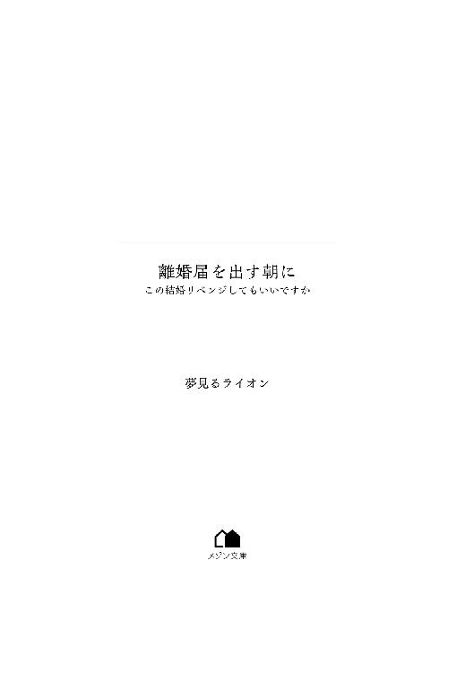
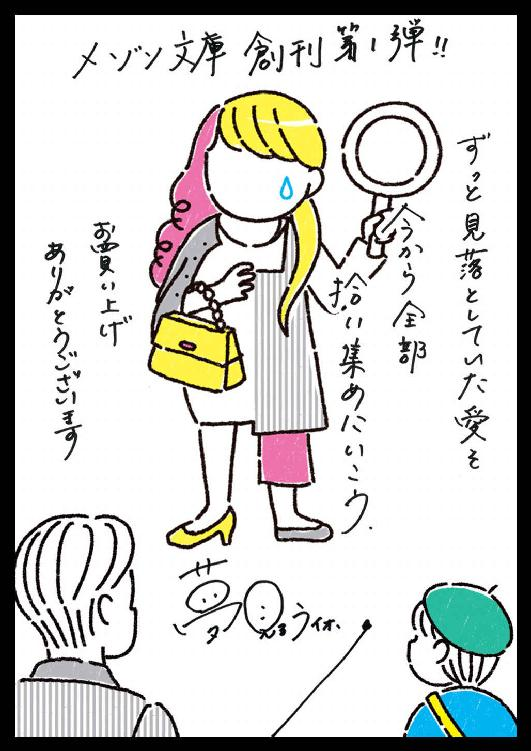

| 離婚届を出す朝に この結婚リベンジしてもいいですか【イラスト特典付】 (メゾン文庫) | |
| 夢見るライオン | |
| 一迅社 (2018) | |

イラスト・デザイン やまざきももこ
離婚届を出す朝に......私、芥城紫奈は事故に遭った。
★
結婚七年目の記念日を迎える前に、私と夫、芥城那人は破局を迎えた。
一八才になったばかりの幼な妻として、二五才の青年実業家、那人さんと幸せな結婚をしたはずだった。それなのに......。
離婚の原因？
そんなもの一口に言えるものではない。
強いて言うなら、性格の不一致？ 相性？
それでも結婚する時は運命の人だと思った。
赤い糸で結ばれた人に私は出会えたのだと思った。
この人となら幸せに暮らせると思った。
いったいいつからおかしくなってしまったのか。
どこから狂い始めたのか。
なにが悪かったのか。
どちらが悪かったのか。
そんなのは、私達にも分からない。気が付いた時にはダメになっていたのだ。
「出られる？」
「うん」
二人の愛の巣であるタワーマンションの最上階で交わす、夫婦として最後になるであろう言葉はそれだけだった。事前に離婚届にはサインしていた。話し合いもすんでいる。
五才の一人息子、由人の親権は夫が持つことになった。離婚のごたごたがすむまで夫の両親が預かっている。引越しは来週だ。
その前に届けだけでも先に出してしまいたかった。
それほどまでに、顔を見るのもお互い嫌になっていた。
夫は別に好きな人がいる。
だから離婚を急いでいる。
彼女をつなぎとめておきたいから、離婚届の提出を急いでいるのだ。
私が去った後この家に入り、那人さんの妻になり、由人の母になるから。
しかもその相手は私の親友、如月優華だった。
親友。
その言葉を、どういう人間に使うのかは人それぞれだが、私達のそれは腐れ縁、あるいはたまたま一緒にいる時間が長かっただけだ。
だって私は彼女、如月優華にいつも敗北感を覚えていたから。
そもそも外見からして完敗だった。
私はチビで茶髪のくせっ毛で、派手に見える外見のせいでいつも問題児扱いされた。
対して優華はすらりと背が高くストレートの黒髪が清楚な、どこに出しても恥ずかしくない美人だった。
優華とは生まれたマンションが同じだった。
......といっても、うちが一階の二ＬＤＫ住まいに対して、優華は最上階メゾネットの５ＬＤＫの家だけどそれでも子供の誕生日が近かったせいか、仲良くなった母親達は、小学校受験をさせた。
優華の家が生まれた時から決めていた、大学までエスカレーター式の女子校だ。
うちは私学に通わせるほど家計に余裕はなかったが、仲良しのよしみでずるずると受験することになってしまった。そしてなぜだか受かってしまったのだ。
思えばこれがすべての間違いの始まりだった。
この女子校に落ちていれば、私の人生はずいぶん違っていただろう。
私は勉強もスポーツも、優秀なお嬢様学校では落ちこぼれだった。
対する優華は、頭も良くてスポーツ万能、気はきく上に偉ぶらない。
非の打ちどころがないとは彼女のことを言うのだと思う。
私も不真面目だったわけではない。努力はしていたつもりだ。
でも、優華よりも要領も悪いし不器用だった。
その上、分不相応な私学に入ったため、お母さんはパートを掛け持ちして働かねばならず、家事労働のいくつかが私の肩にのしかかってきた。
そうだ。先に敗北感を覚えていたのは、お母さんだった。
華やかで優雅に生活する優華のお母さんに負けないようにと、いつも無理をしていた。
お金もないのにバレエを習わせようとしたり、バイオリンまで買おうとしたことがあった。そのたび父と喧嘩になって、夫婦仲はすこぶる悪かった。
家庭円満を絵に描いたような優華の家とは大違いだった。
どの角度から見ても勝ち目などないのに張り合おうとするから無理が出る。
その歪みはいつも私が代わりに背負うことになった。
「今日の運動会、優華ちゃんと走るのよね。勝つのよ、絶対！」
いや、無理だから。
「優華ちゃん、合唱コンクールのピアノ伴奏やるらしいじゃない。あなたも......」
いや、ピアノ習ったことないし。
「優華ちゃん学内模試一位だったらしいじゃない。あなたは？」
最後から数えた方が早いです。
思えば私のこの敗北感はお母さんに植え付けられたようなものだ。
いつもいつも比べられて、勝ったためしなどなかった。そのたびに落ち込むくせに、また新たな戦いに挑ませようとする。
私は延々くり返されるこのルーティンから逃げたかった。
そんな時に出会ったのが、夫となる芥城那人だった。
一七才で初めて会った時、彼は二五才。
高校生だった私は、パートの掛け持ちがきつくなったお母さんに代わって、学校に隠れてバイトをしていた。
私はキャンペーンガールのバイト。彼は若くしてベンチャー企業を立ち上げていて、スポンサーの一人だった。
八才年上の彼は、すべてがスマートで大人に見えた。王子様が現れたのだと思った。
高校を卒業してすぐに、大学には進まずに彼と結婚した。
カッコよくてセレブな青年実業家の彼に、友達はみんな羨ましがった。
もちろん優華も羨ましそうな顔をしていた。
私は初めて優華に勝ったと思った。そしてお母さんも有頂天になった。
それなのに......。
七年が過ぎて、私はやっぱり優華に大敗北するのだ。
優華に負けるのが悔しいの？
ううん。
私は改めて運転席でハンドルを握る夫を見つめた。
こんな風に助手席に座って那人さんの横顔を見るのも久しぶりだ。
鼻筋の通った彼の横顔が好きだった。
髪をオールバックに流し、思慮深く堅実そうな雰囲気も大好きだった。
この席にはたくさんの思い出がある。
付き合い始めた頃、運転する那人さんがとても大人に見えてドキドキした。
新婚の頃は一緒に買い物に行くのが、ままごとのように楽しかった。
妊婦の時には、大きなお腹の私を気遣って信号で止まるたびに苦しくないかと聞いてくれるのが嬉しかった。
喧嘩してふて腐れて寝たフリをすると、コンビニで美味しそうなスイーツを買ってきて機嫌をとってくれたのはいつの頃までだっただろうか。
いつしかなにも言ってくれない那人さんに、意地になって寝たフリを決め込むようになっていた。
本当は待っていたのに。
ずっとずっと待っていたのに。
『紫奈、やっぱりやり直さないか』那人さんがそう言ってくれるのを......。
意地になって待ち続けて今日になってしまった。
優華との勝ち負けなんてどうでもいい。全部全部、いつもと同じように優華に譲ってもいい。でも......。
でも那人さんだけは、とられたくない。
だって、本当はまだ......。
どうしよう。こんな土壇場になって、本当の自分の気持ちに気付いてしまった。
（私はまだ、那人さんを愛してる！）
角を曲がれば区役所が見えてくる。
離婚届を出してしまったら、もう那人さんとは無関係になってしまう。
（そんなの嫌だ！！！）
唐突にその思いに囚われた。
「那人さん！ やっぱり行かない！ 離婚届なんて出したくないっ!!」
「え？ ち、ちょっと今更なに言って......」
「嫌なの!! 離婚届を返して！ この鞄の中？」
私は足元にあった那人さんの鞄を開いた。
「か、勝手に開けるなよ！ そんなところに入ってないから！」
「じゃあポケットの中？」
私は彼の着ている上着に手を突っ込んだ。
「わっ!! 危ない！ やめろって!! 運転中だぞ！」
私は反対側のポケットも探ろうとして、シートベルトを外して彼の体に覆いかぶさるようにしてポケットを探した。
「うわああっ!! よせっ!! うわあああ!!」
「え？」
一瞬、青ざめた彼の顔が見えたと思ったら、激しい衝撃と共に視界から消えた。
いや、消えたのは私だ。
シートベルトを外していた私の体はフロントガラスを突き破り、彼から遠く遠く引き離され、何かに激突して、そこですべてが途絶えた。
思い返せばいつもこうだった。
思いつきで無茶をして、いつも那人さんを困らせ、悩ませ、苦境に立たせ、ついには失望させた。
もうずいぶん前に、彼の心は私から離れていた。今更どう足掻いたところで結果は決まっているのに......。
でも、どうやら最悪の未来を経験することなく、私の人生は終わったようだ。
那人さんは、ようやく疫病神のような私から解放されてほっとしているだろう。
これで良かったのだ。
こんなカッコ悪い人生なんて、終わりにしたかった。
迷惑ばかりかけてごめんね、那人さん。
生まれ変わったら、もう少しマシな人生を歩めるだろうか。
今度は優華のような完璧な女性に生まれ変わって、那人さんともう一度出会いたい。
どうか、神様......。
......お願いします......。
★
「では、これより裁判を始める」
無機質で黒光りのする円卓のぐるりに人が座っている。
薄暗くて見えにくいが、一、二......八、九......全部で十人だ。
一人を除いて、よぼよぼのおじいさんのようだった。
そして頭に色とりどりの博士帽のようなものをかぶっていた。丸い帽子の上に三角の板のようなものが乗っていて、耳横に房のようなものを垂らしている。
みんな揃えたようにシワシワの手を前で組んで肘を円卓に乗せ、黒っぽい法服のようなものを着ていた。
黄昏た老人に、原色の色の帽子だけが浮き上がって見える。
「被告人の名は芥城紫奈。年齢は二五才。女性、日本人じゃ」
赤い帽子をかぶった一番シワの深い老人が口を開いた。
「芥城紫奈は夫の運転する車で事故に遭い、フロントガラスから投げ出され電柱に後頭部を打ちつけ脳死状態となった」
裁判長らしい赤帽老人の説明に、ざわざわと他の裁判員らしき老人達が小声で話している。
後ろが暗くて見えないので狭い空間に思えたが、声の反響からすると閉ざされた場所ではないのかもしれない。真っ暗な森の中のような不思議な空間だ。
「脳死状態ということは、まだ死んでないということかね、赤翁殿」
「それはおかしい。ここは死者を裁くところじゃよ赤翁」
「やれやれ、死んでから召集してくれるかのう」
老人達は長いマントのような法服をさばいてよろよろと立ち上がり、散会の雰囲気が漂う。
「待たれよ！ 皆の衆。これにはわけがあるのじゃ。聞いてくれ」
赤翁の制する声で、老人達はしぶしぶ席に座り直した。
「あー、皆の衆も聞き及んでいる通り、このところ、『死後裁判』によって地獄行きに決まる者が後を絶たない。もはや地獄の人口が溢れ、輪廻転生者が足りず一部の人間界では人口減少が深刻な問題となっておる」
赤翁が深刻さを表すように、眉間のシワを五本ばかり増やして寄せた。
「じゃから、寿命を延ばして反省の時間を多く与えるようにしてるではないか」
「そうじゃ。それにより人口減少を食い止め、人間界で功徳を積み地獄行きを逃れた者も多くなった。じゃが、それ以上に地獄行きを下される若者が増えておるのじゃ」
「愚かなことじゃ」
翁の一人がやれやれと頭を振った。サンタのような白い髭が揺れている。
「そこでじゃ。新たに『リベンジシステム』の導入を考えておるのじゃ」
赤翁は垂れ下がった瞼の奥から、不必要に鋭いまなざしで皆を見回した。
「リベンジシステム？」
老人達は聞き慣れない言葉に、老いた首を傾げ赤翁を見つめた。
「地獄行きの可能性が高い若者に限り、一旦脳死状態にして裁判を行い、深い反省をもって現世でもう一度生き直すシステムじゃ」
「なるほど、それはいい考えじゃ」
老人達はすぐに納得したようで、ゆるゆると頷いている。薄暗く不気味な空間のはずなのに、老人の動きがゆっくりなので、のどかな雰囲気が漂う。
「あの......」
しかしその直後、円卓の真ん中から聞こえた若々しい声に、老人達は驚いたように視線を向ける。まったりとしていた空間にぴりりと衝撃が走った。
気味の悪い静寂が数秒流れて、世界全体が緊張感に包まれる。
「あの......ちょっとよろしいでしょうか？」
老人達は戸惑ったように顔を見合わせた。
「さっきから聞いてましたが、もしかして地獄行きの可能性が高い若者とは私のことでしょうか？」
★
円卓の真ん中には穴が空いていて、私はそこの丸椅子に晒し者のようにスポットライトを浴びて座らされていた。
老人達は突然発言した私に、（なんだこの常識知らずは！）という顔付きでコソコソ隣同士話をし始めた。
いや、こんな妙な世界の常識なんて知るわけないし。
これは夢？ それともこれが本当の死後の世界なの？
さっき死後裁判って言ってたけど、ここで地獄行きかどうかを決めているってこと？
生前聞いたことのある死後の世界と、ずいぶん違うけど。
「なるほど脳死状態ということは、まだ死の洗礼を受けておらぬのじゃな。じゃから我らに発言する無礼ができるのじゃ」
「図々しい小娘じゃ」
「こんな低俗な生き物としゃべるのなど何千年ぶりかのう」
すごい悪口を言われている。だが怯んでいる場合ではない。
たぶん誰かと間違えられている。きちんと訂正しなければ。だって......。
――私が地獄行きのはずがないもの――。
「まあまあ、皆の衆。新たなシステムの試験導入じゃ。この治験者で成功すれば導入できるのじゃ。ここは大目に見て、発言を許そうではないか」
皆は赤翁の言葉に納得したのか頷いている。
どうやらこの翁と呼ばれている人達は裁判官のような立場らしい。
「芥城紫奈よ。話すがよい。許可を与える」
私は、戸惑いながらもスポットライトの中で立ち上がり、色帽子の老人達を見回した。
「ど、どうやら私が事故に遭い、脳死したことについて話し合われているようですが、私が地獄行きの可能性が高いというのはなにかの間違いです」
「ほう。どうしてそう思うのじゃ？」
赤帽の老人が尋ねた。
「だって私は地獄へ行くほど悪いことなどなにもしてません。そりゃあ確かに小さな嘘をついたり、虫ぐらいなら殺したこともありますが、基本的に争いは嫌いだし、なるべく円満に過ごせるように気を遣って生きてきましたから」
「......」
私の発言に、老人達は一瞬呆けたような顔をして固まった。
そして赤翁がみんなを代表するように問う。
「芥城紫奈。では聞くが、お前は生きている間になにをしたのだ？」
「な、なにって言っても......」
取り立てて示すほどのことはなにもしてない。
優華と比べたがる母親をなんとか満足させようと必死で取り繕って、そして最後に大敗北が明るみに出て恥をかく、の繰り返しだった。でも......。
「お、お母さんのために......頑張ったわ。親孝行をしようと勉強も運動も私なりに努力したわよ。お母さんのために自分を犠牲にしてでも頑張ったのよ！」
そうだ。
私はいつも自分の薄幸を呪うお母さんのために精一杯頑張っていた。
これは素晴らしい美徳じゃないか。
「それで親孝行はできたのかね？」
翁の一人が尋ねる。
「い、いえ、それは......。いつも力不足で......」
いやダメだ。
なにか良い結果を残してなければ地獄行きになってしまう。私は目まぐるしくお母さんを喜ばせた出来事を思い出そうとした。そして......。
あったじゃない！ 一つだけ！
「け、結婚しました！ とっても素敵な人と！」
「結婚？ それが親孝行？」
翁達が更に不可解といった表情で首を傾げる。
「そ、そうです！ だって彼はカッコよくてお金持ちで、仕事もできて、まさに白馬の王子様、玉の輿だったんです！ 自慢の夫だったんです！」
「それは彼がすごいだけでそなたの努力ではないじゃろう？」
「で、ですが、そんな彼に見初められたのも私の努力があったからです！ 私がお洒落に気遣い、可愛く見せることを怠らなかったから......」
「赤翁殿、そのことについて報告がございます」
青い帽子の一人だけ若いメガネの男が、言いよどむ私の言葉を引き継いだ。
どうやら私の弁護士のような存在らしい。助かった。
「申してみよ、青翁」
「今話題にのぼっております芥城那人ですが、彼の宿命書きには、この芥城紫奈との結婚は人生の一番大きな過ち、試練となっております。若気の至りでうっかり結婚してしまった疫病神のような女で苦労する、という課題を持って生まれ、彼は見事その課題を修了したようです」
え？ そんな。私は那人さんにとって試練？
あの幸せな結婚は彼にとっては人生で一番大きな過ち？
大体この人、私の弁護士じゃなかったの？
「そ、そんなはずないわ！ だって最初は那人さんが私に夢中で......」
「そう。魔がさしたのじゃ。課題の発生のために、時折、人はありえない行動をとるように仕組まれておる。他にいくらでも彼に相応しい女性はいたのに、そなたを選んでしまった」
「そんな！ じゃあ好きだって言ってくれたあの言葉も？」
那人さんに告白された時、夢じゃないかと思った。
人生で一番幸せな瞬間だった。それなのに。
「結婚生活はどうじゃった？ うまくいっていたのか？」
「そ、それは......」
「ご報告します。結婚生活は一年で破綻。しかし芥城那人は子供ができた責任感から、その後六年努力を続けたようです」
青翁がメガネの裏を読むようにして、非情な報告を続けた。
弁護士どころか検察官だった。
「しかし課題の修了と共に、新たな人生を歩むべく離婚届を提出する朝、この芥城紫奈の運転妨害により事故を起こし、現在入院中とのことです」
「ち、ちょっと待って！ 運転妨害って、私そんなつもりじゃ......」
「芥城紫奈は離婚届を奪い取ろうとしたようですが、その心の根底には、彼を他の女に奪われるぐらいなら、一緒に死にたいという願望があった模様です」
「そ！ そんなこと思ってないわよ！ 勝手なこと言わないで！」
「本当に思ってないと言えますか？ だって取られたくなかったんでしょう？ 親友の如月優華さんに」
「そ、それは......」
そう断定されると、そんな気もしてきた。
じゃあ、私は殺人未遂？
しかも一番大好きな人を？
「――判決を言い渡す。主文、被告人を全員一致で地獄行きに処する」
赤翁が無慈悲に言い放ち、周りの翁たちも頷いている。
「地獄は次の三つの中から選ぶことができます。一つ目は血の海で溺れ続ける、『血の池地獄』。二つ目は灼熱の火に焼かれ続ける、『火だるま地獄』。三つ目は針の野原を歩き続ける、『針地獄』。さて、どれがいいですか？」
「ち、ちょっと待ってください、裁判長！ 異議があります！」
無表情に問いかける青翁を退け、私は必死の形相で右手を上げた。
「死後裁判では不服の申し立ては受け付けておらぬが、なんじゃ。申してみよ」
赤翁が特別に発言を許してくれた。
「わ、私は確かに現世で誰も幸せにできず、最後はもしかして那人さんを道連れにするような黒い計算が心のどこかにあったのかもしれません。でもそれだけで地獄行きとはあんまりじゃないですか？ 世の中には私よりもっと悪い人がたくさんいます。厳し過ぎます！ そんなだから地獄が溢れてしまうんです！ 法の改正を要望します！」
「そなた勘違いをしているようじゃの」
老人の一人が小バカにするように口を開いた。
「勘違い？」
「これは死後裁判じゃ。そなたらの世界とは法も判断基準も違うのじゃ」
「判断基準って？」
「そう。例えばあなたの今の世界で殺人は最も重い罪です」
青翁が自分の役割とでもいうように説明しだした。
「ですが、時代が違えば敵を多く殺した者が英雄になる場合もある。国が違えば、今現在も英雄と崇められる国もあるでしょう。あなた達の世界の法など、時代と共に一八○度変わる。強者に都合いいように作られた方便です」
「じ、じゃあ、あなた達の法では何が基準になるのよ」
「我々は現世を修行の場として提供しています。あなたの夫が悪妻をうっかり娶って、大変な苦労を背負うのもまた修行。彼自身が望んだ課題です。彼はその課題に果敢に挑み、行動し、努力し、一つの悟りを得た。それこそが正しい生き方です。彼は今生でステップアップを果たし、次の生は更に高い課題に挑むことでしょう」
いつの間にか悪妻呼ばわりされている。
確かにそうだったのかもしれないけど......。
「極端な言い方をすれば、殺人を犯した人間でさえ、その後、深い悔恨と反省を貫いて生きれば、情状酌量の余地もあります。私達の判断基準で言うなら、あなたの方がよほど最低な人生だと判断することになるでしょう」
「な、なんで私が殺人犯より最低なのよ！ おかしいわよ、そんなの！ 私は誰も傷付けてないじゃない！ しかもお母さんのために一生懸命生きたじゃない！」
「ああ。一番問題なのはそこですね」
「そこって？」
「お母さんのために？ お母さんに言われたから？ あなたの意思は？ あなたの目標は？ あなたの反省は？ あなたの悟りは？ あなたはお母さんの言いなりになるために、わざわざ生まれたんですか？」
「そ、そんなこと言ったって......」
「あなたはそうやっていつもお母さんのせいにして生きてきた。不幸なのも貧乏なのもお母さんのせい。不器用なのも要領が悪いのもお母さんの血。そうやっていつも責任転嫁して、自分でなにかを変えようと一つも努力してこなかった。違いますか？」
「だってしょうがないじゃない。小さい頃からお母さんの劣等感を肩代わりして生きてきたのよ。私になにができたっていうのよ」
「確かに幼少時は、親の影響を受けるのも仕方ないでしょう。それも修行のシステムに組み込まれたものです。でもあなたは二五才になっていた。少なくとも一八才で結婚した後、あなたは母親の影響を逃れ、自分の課題に取り組む時間があったはずだ。しかし、あなたは今度はすべての責任を夫に転嫁した。違いますか？」
「そ、それは......」
「付き合っていた当時のように構ってくれない。前ほどチヤホヤしてくれない。お金にシビアになった。仕事ばっかりで遊びに連れていってくれなくなった。自分が文句ばかり言うのは、自分がわがままに見えるのは、自分がダメな主婦なのは、全部全部夫のせいだ。そう思っていたんじゃないですか？」
「だ、だって......」
「しかも子育てにおいてはどうですか？ 自分が髪を振り乱して育児に追われている時に、大学生の友人はサークルに合コンに海外旅行にと楽しんでいる。結婚してなければ。子供さえいなければ。そんな風に子供にやつ当たりしたことはなかったですか？」
「......」
返す言葉もなかった。すべてその通りだから......。
「結局あなたはなに一つ自分の意志で取り組もうとすることもなく、自分の人生を他人任せに責任転嫁して、思うようにならなければ、誰かのせいだと反省すらしなかった。あなたは死後裁判において、最も輪廻転生する価値のない人間なのです」
輪廻転生する価値のない人間......。
それがここの判断基準で下された、わたしの評価？
私はガクリとうな垂れて丸椅子にへたり込んだ。
死後世界の真理を突きつけられて、自分の生き様がはっきり見えてしまった。
思い返してみれば、私はなに一つ自分の力で運命を切り開こうとはしてなかった。
ただ与えられる環境に振り回されただけで、自分の意志でなにもしていなかった。
愕然と座り込む私に赤翁が気の毒そうに言葉をかけた。
「最近は自分の人生に向き合えない若者が多いのじゃよ。時代が便利なせいか、なにもかもが面倒になって、夢を叶えるのも、恋愛するのも、更には人と話すのも、家から出るのさえ面倒になってしもうた。才能に恵まれなかった？ 容姿に恵まれなかった？ 金持ちじゃなかった？ もっと良い条件で生まれ変わってやり直す？ 自分の人生を切り開く努力をしなかった者が、もっといい条件に生まれ変わるはずがなかろう。どれほど条件が悪くとも、命さえあればいくらでも飛躍できるというのに」
淋しげに俯いて赤翁が続けた。
「そうしてせっかくの生を、なにも経験せず、なにも行動せず、なにも反省せず、なにも悟らず、ただ食べて寝てを繰り返し、この裁判を迎える。もちろん地獄行きじゃ。なぜなら、輪廻転生しても同じことの繰り返しじゃからのう。どうしても這い上がりたいという欲求が出るまで無限の地獄を経験することになるのじゃ」
「じゃあ私は......」
優華みたいな完璧な女性に生まれ変わるなんて所詮無理な望みだった。
「本来なら間違いなく地獄行きじゃ」
「本来なら？」
「リベンジシステムじゃ。そなたに執行猶予の期間を設けてやろう。もう一度現世に戻って、自分の課題を自覚し、それを修了するチャンスを与える。その修了レベルによっては、地獄行きを回避し、特例措置も検討しよう。あるいはもう一度現世に戻る可能性も僅かではあるが、ないとはいえない」
「ほ、本当ですか！ で、でも、どうすれば課題を修了したことになるんですか？」
「それを自分で考えるのが課題じゃ。修了と見なした段階で、ここに戻って再審を行う」
「そこで改めて判決が下るということですか？」
「まあ、そういうことになるじゃろうな。どうだ？ 一人目の治験者になってみるか？ 最初の一人だから、我らも手厚くサポートしていこう」
「や、やります！ やらせてください!!」
即答した。
だってやらなければ地獄行きなのだ。やるしかない。
「では、リベンジシステムの導入に先立って、いくつか約束事があります」
青翁が契約書を読むようにメガネの裏を読んで説明する。
「これは芥城那人にとっては余分な追加課題です。彼は今から三○日後より新たな課題に向けて幸福の充電期間に入ります。くれぐれも三○日以内にリベンジを修了させてください。さもないと彼の宿命まで狂ってしまいますからね」
「そ、そうなんですか？」
三○日で修了させなければ、那人さんにまた迷惑をかけてしまうのだ。
つくづく、私は那人さんにとって迷惑な女なんだと悲しくなる。
「それから、この死後裁判のことを少しでも現世で話してしまったら、そこで終了となります。その場で意識を失い、本当の死を迎えることになります。この場合は現世に戻る可能性はゼロになり地獄行き決定となります。くれぐれもお気をつけください」
「は、はい。分かりました」
「それからオプション機能を用意していますが、つけますか？」
「オプション機能？」
「反省を促すための映像を、必要に応じて夢の中で流すというオプションです」
「な、なんだか分からないけど、全部つけといてください」
「分かりました。では随時設定しておきましょう」
「ありがとうございます」
私には一つの希望が見えていた。
それは、きっと那人さんなら受けとめてくれるはず、という期待だ。
実は結婚一年目にも一度、離婚の危機があった。
一八才の私は那人さんと結婚したら、夢のような生活が待っているのだと思っていた。
毎日がドキドキで、楽しくて、年上の彼に安心して寄りかかっていればいいのだと。
でも現実は全然そうではなかった。
青年実業家という派手な肩書きの割に真面目で堅実な彼は、新婚旅行で海外に行く休みも取れず、二泊三日の国内旅行しかできなかった。
最高ランクの旅館には泊まれたけれど、私は海外に行きたかった。
そして新婚旅行から帰ると、すぐに日常が始まった。
ずっと一緒にいられると思った彼は、当然だが毎日仕事で朝晩しか会えない。
結婚前は苦心して作っていた二人の時間は、結婚後は家で会えるのだからと日常に紛れてしまった。
専業主婦でずっと家にいたのも良くなかったかもしれない。
同級生の友達は大学生になって、疎遠になっていった。
家で一人でいる時間が淋しくて、夜に帰ってくる那人さんを喜ばせることばかりを過剰に考えていった。
那人さんの誕生日には、内緒で驚かせようと張り切った。
料理学校で習った手の込んだすごいディナーを作って、部屋を風船で飾り付けて、くす玉まで用意した。
その月の生活費をつぎ込んで、バラの花で部屋を埋め、彼の誕生年のワインを取り寄せた。きっと彼は感激して、私の愛の深さに感謝するだろうと思った。
でも月末で忙しかった彼は、帰るのが深夜になり、くす玉とクラッカーでの出迎えに、面食らって、少し困ったようにも見えた。
「そうか......今日誕生日だったな。自分が忘れてたよ。仕事で遅くなってごめんな、紫奈。夕飯は軽く食べたんだけど......せっかくだから少しだけでも食べるよ」
少しも嬉しそうじゃなくて悲しかった。
『次こそはもっと喜んでもらえるようにしなきゃ』
私は徐々にその思いをエスカレートさせていった。でも那人さんは喜ぶどころか、どんどん困った顔をするようになった。
そして彼は言ったのだ。
「紫奈は俺といて幸せ？ もしも紫奈が苦しいなら俺は......」
でも、その時の私には、言い返せる言葉があった。
「子供が出来たみたいなの」
那人さんは、一瞬驚いた顔をしてから、すぐに覚悟を決めたように微笑んだ。
「そ、そうか。子供が出来れば事情も変わってくるしな。二人で大切に育てていこう」
那人さんは責任感が強く、優しい人だった。
きっと私が一生懸命努力してリベンジすれば、思い直してくれるはず。
そうしたら現世に戻してもらって、もう一度那人さんとやり直すの。
「では現世に戻すぞ、芥城紫奈。まずはプレミアムオプションをつけてやろう。自分に対する贔屓目をなくして本当の現実を知るがよい」
赤翁の言葉と共に意識が遠のく。そして......。
★
（私の体？）
ストンと体に意識が戻る。でもまだ体は動かない。
そして話し声が聞こえてきた。
「あなたのせいじゃないわ、那人さん」
「いや、運転していたのは俺なんだ。俺のせいで紫奈が......」
那人さんと優華の声だ。どうやら近くにいるらしい。
「目撃者もいるのよ。運転しているあなたの視界を塞ぐように紫奈が覆いかぶさっていたっていうじゃない。こんな言い方よくないかもしれないけど、紫奈はもしかしてあなたを道連れに死のうとして......」
「そんな風に考えたら気は楽だろう。でも紫奈は突拍子もなくて浅はかなところもあるけど、人の命を奪うようなことを画策できる子じゃないよ」
「そ、そうね。ごめんなさい。つい那人さんの気持ちを軽くしてあげたくて、紫奈を疑うようなことを言ってしまったわ。私はひどい人間ね」
「いや、優華ちゃんには感謝しているよ。紫奈のためにつきっきりで看病してくれて、目が覚めるようにとずっと声をかけてくれてたって聞いてる。本当にありがとう」
「親友だもの......当然よ」
優華は戸惑うように言ってから遠慮がちに続けた。
「那人さん、どうか一人で抱え込まないでね。私にできることがあれば、なんでも言ってちょうだい」
「ありがとう。優華ちゃんは本当に優しい子だね」
そのままキスでもしそうな雰囲気に思えた。でもさすがに寝ている私の前では遠慮したのか、見つめあうだけのようだった。
ただ、二人が惹かれあっているのを感じる。
いきなり現実が目の前に突きつけられた。
（やり直せるなんて甘かった。もう那人さんの心は優華に向かっているんだ）
少し考えてみれば当然のことなのに、私はまだ那人さんの優しさに期待していた。
でももう、その優しさは私だけのものではない。いや、私のものではなく、優華のものになったのだ。
私が現世に戻れば、惹かれあう二人を引き裂く邪魔者だ。誰も喜ばない。一人息子の由人も、私よりも優華に懐いている。
私はみんなを不幸にするために戻るようなものだったのだ。
『今現在、そなたを心から必要としている人間は誰もいないじゃろう。厳しいリベンジの始まりじゃ』
頭の中に赤翁の声が響いてきた。
初めて真実の自分がクリアに見えた気がした。
贔屓目をなくして、不思議なほど自分を客観視できる。
自分が那人さんにとって、どの程度の人間なのか、悲しいほどはっきり分かった。
ここからリベンジして那人さんとやり直す可能性なんて限りなくゼロに近い。
でも、地獄行きしかなかった身なのだ。チャンスが与えられただけでも良しとしなければ。
一パーセントでも可能性があるなら、やってみるしかない。
『うむ。覚悟は定まったようじゃの。では戻るがよい』
誰も待ってない世界へ――。
「那人さん......」
目覚めたのは、いい雰囲気になりかけていた、那人さんと優華の目の前だった。
「し、紫奈!? 目が覚めたのか！」
そう叫んだ表情は、喜びでも驚きでもなく、ギクリと慌てたものだった。
那人さんと優華は、慌てて距離をとるように離れて、無理な笑顔を作った。
「よ、良かったよ。このまま目が覚めなかったらどうしようと思ってたんだ」
「紫奈～!! 本当に心配したんだから......うう......良かったあ......」
緊急ボタンでナースステーションに連絡する那人さんの隣で、優華が涙ぐんでいる。
嘘なんだろうなあ......と、私はぼんやり二人を見つめていた。
以前の私なら、「なんで二人っきりでいるのよ！」と、問い詰めたのだろう。
「ちょうど今お見舞いに来て、那人さんと紫奈の病状を話していたところなのよ」
「そ、そうなんだ。ホントに今会ったばかりなんだ」
二人の言葉が言い訳がましい。私の行動パターンを知り尽くしている二人だから仕方ないのか。二人が親密に慰めあっていたのを私は知っている。
でも、嘘だと分かっていても、不思議に腹は立たなかった。
淋しいのは淋しい。
この二人に嘘をつかせる自分が......。
そんな存在としか思われていなかった自分が......。
私はもう知っている。自分が那人さんにとってどんな存在なのか。
試練を与える迷惑な存在でしかないのを。
知らなかったから、認めたくなくて、不安で焦っていらついていた。
でも今は、不思議にすべてを受け止めることができた。
「心配してくれてありがとう」
私の言葉に、二人は驚いたように顔を見合わせた。
そう。
驚くのだ。こんな当たり前の感謝の言葉に。
それほど、私はわがままで自分勝手な言葉ばかりを吐いていた。
「し、紫奈、やっぱりどこか痛かったり記憶がおかしかったりするのか？」
那人さんは、しおらしくありがとうなんて言う私をずいぶん見ていなかった。
頭を打っておかしくなったと思っているらしい。
私は以前の自分が情けなさ過ぎて、むしろ可笑しかった。
「ふふ。大丈夫よ。心配しないで」
微笑する私に那人さんと優華は、もう一度目を見合わせて首を傾げた。
「それよりも那人さんに一つお願いがあるの」
私は自分でリベンジの方法を考えてみた。
本当に愛しているなら、どうすることが正しいのか。今度はちゃんと自分の頭で考えた。不器用な頭で一生懸命考えた。
その答えは、私が、リベンジシステムを必ず三○日以内に修了することだ。それができないなら、早急に彼の人生から立ち去る。
悪妻から解き放たれてようやく幸せの充電期間を迎えるはずだった彼を、きちんと予定通りの世界に戻してあげねばならない。だから......。
「一ヶ月だけ離婚届を出すのを待ってほしいの。家の中も那人さんのことも由人のことも、きちんと整理する時間が欲しいの。一ヶ月したら全部きちんとして出ていくから」
那人さんは戸惑ったように私を見つめた。
隣の優華は少しショックを受けているようだ。もしかして、私がなんだかんだと理由をつけて居座るつもりだと思っているのかもしれない。
「ごめんね、優華。一ヵ月だけだから......」
私は優華にも頼んだ。
「ど、どうして私に？ 嫌だわ、紫奈ったら」
バレバレではあるが、一応二人が好きあっていることは公言できない。
優華は視線をそらして誤魔化していた。
「那人さん、お願いします」
ベッドから体を起こして頭を下げようとする私を那人さんは押し留めた。
「なに言ってんだよ。そんなの当たり前じゃないか。俺の運転で怪我させたんだ。体が元通りになるまで俺が面倒見るから。心配しなくていいよ」
ああ。那人さんはこういう人だった。責任感が強くて、律儀で、優しい。
だからこんな私に七年も我慢してくれていたんだ。
「ごめんね......」
呟くように言った言葉は那人さんの耳には届かず、溢れそうな涙を隠すように私は布団を頭からかぶった。
その日はもう一日だけ検査入院をすることになり、翌日の退院が決まった。頭以外はかすり傷ぐらいしかなかったらしい。むしろ後頭部を五針縫った那人さんの方がひどいぐらいだった。
やがて面会時間の終了と共に、明日迎えに来ると言って那人さんは優華と一緒に帰っていった。
そして面会時間もとっくに過ぎた夜。私の意識回復を聞いたお母さんと、幼馴染の風間康介がドタバタと駆け込んできた。
「紫奈!! 良かったああ。このまま死んじゃうのかと思ったわよう」
お母さんはパート帰りらしく、似合わないハイソックスを穿いていた。
私はいろんな管を抜いてもらい、起き上がって夕食を食べていた。
「紫奈！ もう目が覚めないかと慌てたぞ」
康介はマンションの同じ階に住む腐れ縁の友達だった。
笑うと片側にえくぼのできる甘めのイケメンで、流行の服装と髪型をいち早く取り入れる。それがまた嫌みなく似合うものだから、いつも女性に囲まれていた。
優華も同じマンションだが、昔からこの二人は犬猿の仲だった。
でも私と康介は気が合って、学校も違うのにつかず離れずの縁が続いている。
それは康介がお母さんのお気に入りで、なにかと面倒を見ているからかもしれない。
康介には、年代に関係なく女性にモテる天性のようなものがあった。
そしてシングルファーザーで母親のいない康介も、お母さんを本当の母親のように慕っていた。
高校を卒業した後、アルバイトしていた居酒屋にそのまま就職したが、今では康介目当ての顧客も大勢ついて繁盛しているらしい。
「まあ！ 那人さんはもう帰ったの？ 妻が三日も眠り続けて目が覚めたっていうのに、なんて薄情な人なのかしら！ しかも自分の運転で事故を起こしたくせに！」
「面会時間が終わったから看護婦さんに追い出されたのよ。お母さんの方こそ無理言って入れてもらったんでしょ？」
お母さんは結婚当初、那人さんを褒めちぎっていたくせに、離婚話が持ち上がった途端に手の平を返したように目の仇にして、彼の粗を探すようになった。
那人さんと優華が私に隠れて会っているのを知ったのも、お母さんが素行調査に雇った探偵からだった。
『那人さんの浮気が原因なんだから、慰謝料ぶんどって別れるのよ！ いい？』
そう言って、結局一○○○万の慰謝料で離婚に同意した。
那人さんが優華と会っていたショックで、私はなにも考えられなかった。
だから、やっぱりお母さんの言いなりに、離婚届に判を押したのだ。
「もしかしてこんな時に浮気相手に会ってんじゃねえの？ とんでもないヤツだよな」
康介は最初から那人さんが気に入らないようで、結婚にも大反対だった。
「でも心配するなよ、紫奈。俺がお前とおばさんは守ってやるからな」
確かに那人さんは優華と一緒に帰っていった。
きっと今頃は、離婚が先延ばしになったことを話しあっているはずだ。
そんなことを言ったら、この二人が猛烈に怒りだしてなにをするか分からないから、もちろん言うわけにはいかない。
以前の私なら二人と一緒に、那人さんと優華の悪口に花を咲かせていたことだろう。
この二人は数少ない私の味方で、以前の私にとってはなによりも頼りにしていた存在だった。
だけど今はその愛情が偏狭的だと感じた。
「そのことだけど、私、離婚を一ヵ月先延ばしにしてもらったの」
私の報告に、二人は驚いた顔をしてから、鬼の形相になった。
「ど、どうしてよ！ せっかく話し合いもついたんだし、あんな人とはさっさと別れなさいよ！」
「そうだよ。今さら先延ばしにして慰謝料払わないって言われたらどうすんだよ！」
本来なら親権を渡して養育費もいらない私に、一○○○万もの慰謝料をもらえるはずもなかった。
那人さんが優華と会っていたのは確かだが、喫茶店で話をしていた写真だけで、決定的な浮気現場を押さえたわけではない。
それに私の方にも多くの離婚原因があった。しかし、那人さんはそれを言い立てることもせずに、あっさり私の側の慰謝料の条件を呑んでくれたのだ。
那人さんが異議を申し立てて裁判になれば、話し合いが長引き慰謝料はもっと減額されるだろう。
「私、慰謝料は断ろうと思ってるの」
私の発言に、二人は唖然としてしばらく言葉が出ないようだった。
それから猛烈な勢いで問い詰められた。
「な、なに言いだすのよ紫奈!! あんた正気なの？ 親友と浮気してた男を、みすみす都合よく離婚してあげるつもり？」
「お前、那人になんか脅されたのか？ なんか弱味でも握られたのか？」
「そんなんじゃないわよ。ただ、私の側にも原因はたくさんあったし......」
「そんなの立証できなきゃ問題にならないわよ！ 私は納得しないわよ！ 娘を傷物にされて、ただで解放するわけにはいかないわよ!!」
「傷物って。私は那人さんを好きで結婚したんだから。騙されて結婚させられたわけじゃないのよ」
「ちょっと紫奈！ あんたどうしちゃったの？ 頭打っておかしくなったんじゃないの？」
そうだ。頭を打って......。
真実が見えるようになったのだ。
本当におかしいことを言っているのは誰なのか......。
私は疑うこともせずに、自分に心地よい言葉を吐いてくれる人を信じたのだ。
でも、もう流されてはいけない。
これは私の人生なのだ。
自分がなにを選び、なにを行動するかは、すべて私が決める。
そして、それがどういう結果を残そうとも、私が責任をとらなければならない。
だから......。
「ごめんね、お母さん。離婚するのは私なの。私が自分で決めるわ」
親に逆らうのは親不孝だと思っていた。
でも親だって間違うこともある。人間なんだから、いつも正しいわけじゃない。
自分が導き出した答えと違うと思うなら、きちんと反論することこそが親孝行なのだ。
そこに軋轢があるなら、納得できるまで戦うのが生きるということだと思うから――。
「那人さん、そろそろまた頼んでもいい？」
もともと色素の薄い髪を更に明るいブラウンに染めて、ヘアアイロンで大きめに巻きながら私はドレッサーの鏡ごしに尋ねた。
「そのことだけどさ、そろそろ自分でやる努力もしてみたら？」
休日の朝だが、那人さんは仕事に行く準備をしていた。
最近仕事が順調なのはいいが、休みを返上して出勤することが多くなった。
「えー、私にトイレ掃除や風呂掃除をしろっていうの？ 私は那人さんの家政婦になるために結婚したんじゃないのよ」
「家政婦なんて思ってないけどさ、専業主婦でずっと家にいるんだからさ、それぐらいできるだろ？ ヘルパーさんを頼むお金があれば、二人でちょっとリッチな食事もできるじゃないか」
私は、水まわりの掃除が大嫌いだった。
それだけはどうしてもできないのだと、新婚の時に泣きついた。
水垢やカビが気持ち悪くて、実家で家事のほとんどを請け負っていた時も、それだけは嫌だといって、うちではパートの掛け持ちで忙しい母の代わりに父の担当業務になっていた。
「あの気持ち悪い水垢を掃除するのだけは絶対無理なの」
そう言うと、那人さんは、独身時代に来てもらっていたヘルパーさんに頼んでくれた。
それに味をしめて、私はその後一切、水まわりの掃除はしなかった。
「ねえ、紫奈。最初は確かに高校を出たばかりで分からないんだろうと大目にみてたけどさ、そろそろ結婚して一年経つんだよ。ちょっとは努力してみようよ？」
「なによ！ 那人さん、最近冷たくなったわ！ 仕事仕事ってちっとも外に連れてってくれないし！ 友達はみんなサークルやらコンパやら楽しそうにしてるのに！」
「今は仕事が波に乗ってるんだよ。もう少しだけ我慢してくれよ」
「我慢我慢って、最近いっつもそうよ！ うう......。本当なら私も花の女子大生だったのに」
メソメソ泣き始めた私に那人さんは小さなため息をついた。
「分かったよ。ヘルパーさん頼んでいいから。もう少し我慢してくれよ」
――嫌な夢を見て目が覚めた。
結婚一年目の頃の夢だ。
改めて見返すと、なんて自分勝手なことを言っていたのだろう。
穴があったら入りたい気分だった。あの頃には那人さんは私との結婚を後悔していたに違いない。
でもあれは......、まだ忠告するだけの期待は残っていた頃だ。
最近は簡単なところなら黙って自分で掃除するか、仕事が忙しい時は私に言われなくてもヘルパーさんを呼んでいた。
諦めの境地に至ったのだろう。
私は専業主婦でずっと家にいたのになにをしていたんだろう。
美容院に行って、エステに通って、朝晩パックをして、半身浴にマッサージ。
美しく保つことが那人さんの愛情を失わないことなのだと、すべての時間を使っていた。
でも、今なら分かる。
那人さんはそんな私に少しも喜んでいなかったのだと......。
★
「まだ仕事が残ってるんだ。俺は行くけど荷物を置いて少し休むといいよ」
午後に病院に迎えに来た那人さんは、車で自宅まで送ってくれた。
タワーマンションの最上階。
三○畳のリビングがある４ＬＤＫの豪邸だ。
もともと実家も裕福だったみたいだが、ここは那人さんが自分で買った持ち家だ。
彼がどんな事業をしているのか、詳しくは知らないが、ＩＴ関連でかなりの成功を収めているらしい。
だが、改めて部屋を見回すと、その素晴らしい豪邸は埃が積もり、衣類が散らばり、雑誌が散乱していた。そしてもちろん水まわりはカビとぬめりで汚れていた。
これはもちろん家を取り仕切るはずの主婦、つまり私がダメ主婦だったからだ。
「ああ。ごめん。忙しくてヘルパーさんを頼む暇がなかったんだ。明日にでも来てもらうように連絡しておくよ」
キッチンのぬめりを見つめる私に、那人さんが謝った。
「頼まなくていいわ。私が掃除するから」
「え？」
那人さんは驚いたように私の顔をまじまじと見つめた。
「不器用だから、時間はかかるかもしれないけど、私がしたいの」
那人さんは不安そうに眉間を寄せた。
「紫奈、やっぱりどこか具合悪い？ 昨日からちょっと変だよ」
掃除をしたら変。私はそういう人間だった。
「大丈夫よ。那人さん仕事があるんでしょ？ 私のことは心配しなくていいから行って」
「で、でも......」
「大丈夫。どこも悪くないから」
私は那人さんを追いやるように玄関まで見送る。
那人さんは首を傾げながらも、仕事に出掛けていった。
そして、一人きりになった部屋で、私は汚れたリビングを見回した。
水まわりどころか、離婚話が出てからは、普通の掃除すらしなくなっていた。
結婚当初は水まわり以外の家事はちゃんとやっていた。洗濯やアイロンがけなどは好きで、下着にまでアイロンをかけるほどだった。
ベッドのシーツなどは毎日洗濯してアイロンをかけた。
クローゼットや棚の中なども神経質なほど整頓していた。
私は昔から好きなことは夢中でやるけれど、嫌いなことは一切やらないタイプだった。
それでもお母さんや優華のサポートがあって、結婚するまではさほど困らなかった。
でも家庭をすべて取り仕切る主婦としては問題がある。
特に子供が生まれると、時間に余裕がなくなって手に負えなくなっていった。
全然時間がないのに、好きな家事から完璧にやろうとする。
結果、洗濯とアイロンがけで力尽きてしまうのだ。
手を抜いてまんべんなくやるという器用さが足りなかった。
そして離婚話が出てからは、アイロンをする気力さえなくなった。
「さあ、どこからやろう」
荒れ放題の部屋は、かなり手こずりそうだった。
まずは散らばった衣類を片付け、雑誌をしまって、掃除機をかけた。
拭き掃除をして、最低限の体裁を整える。
棚の中や、クローゼットの中は今日は諦めよう。
とりあえず那人さんが帰ってきて気持ちいい部屋になるように......。
ああ、そんな風に掃除をしたことなんてなかったかもしれない。
妙に凝ったテーブルクロスをかけることや、アロマに凝ったり、照明にこだわったり。
お洒落に見えたり、ゴージャスに見せることにばかり気を使っていた。
私は誰に向けて掃除してたんだろう。
ＳＮＳでお洒落な部屋を見せびらかすため？
ハイソな生活を実感するため？
ここは那人さんがくつろぐための家であるはずなのに。
心地よく過ごせる程度に掃除したところで、いよいよ勝負の水まわりだ。
改心したからと言って、気持ち悪くないわけではない。水まわりの汚れは恐怖だ。
私は覚悟を決めて、掃除道具を手にとった。
那人さんが普段使っていただろう排水溝用の洗剤やスポンジを見つけた。
とりあえずキッチンから。
あまり料理をしてなかったせいか、コンロはあまり汚れていない。
しかし流し台のまわりのステンレスがくすんでぬめっている。
「ん？ この白いスポンジは何かしら？」
『水だけでピカピカ』とパッケージに書かれたスポンジがあった。
「調子のいいこと言って、そんなわけ......」
だまされたと思って磨いてみると、本当にステンレスが鏡のようにピカピカになった。
「なにこれ？ 楽しい！」
気付けば夢中になって、ステンレスの流し台から人工大理石の調理台まで磨きまくっていた。
「後は......ケトルも磨きたいけど、先にトイレとお風呂を掃除しなきゃ」
トイレと風呂はキッチンよりも更に覚悟が必要だった。
「と、とりあえず、動きやすい服に着替えよう」
私は家でも高級ブランドのワンピースを着ていることがほとんどだった。
服を汚したくないから水まわりの掃除もしたくなかった。
どの服装なら汚れてもいいだろうかと考えた挙句、黒のＴシャツに黒のスパッツ、髪はだんごにして垂れないようにした。そして手には腕まであるゴム手袋をつけた。
那人さんには見せられない恰好だ。
結婚してから、家に一人でいてもこんなダサい恰好をしたことなんてない。
でも、もうそんな見栄は捨てることにした。
「よし！ 準備万端！」
気合を入れ、汚れを磨く勇気は持てたが、汚れを目の当たりにする勇気が足りない。
掃除をしない人間に限って、妙に潔癖症だったりする。
排水溝を開けるのは嫌というより、もう恐怖だ。
カビやヘドロのどんなおぞましい光景が広がっているのかと、想像しただけでくじけてしまう。
「そうだ！ クリアに見え過ぎるから気持ち悪いのよ！ サングラスをかけたら、はっきり見えないから大丈夫よ」
私は、部屋にあったバタフライタイプの大ぶりなサングラスをかけた。
もう那人さんどころか、誰にも見られたくない恰好だ。
「うん。これで排水溝も全然大丈夫だわ！」
そうして挑んでみると、想像していたよりも全然平気だった。
那人さんが時間のある時に最低限の掃除をしていてくれたようだ。
ゴム手袋をつけているおかげで、さほど気持ち悪くもない。
しかもここでも那人さん御用達の秘密兵器があった。
シュッと一吹きするだけで、消しゴムのようにカビ汚れが消えていくのだ。
「こんないいものがあったんだ。なんだ、思ったより全然楽じゃないの」
こんな簡単なことならもっと早くやってみれば良かった。
そうすれば......。
那人さんと離婚せずにすんだだろうか。
（ううん。今更なにを言ってるんだか......）
私は頭を振って、無駄な希望を追い払った。
覆水盆に返らず。すべてはもう遅すぎた。後悔してももう遅い。
だったらせめて、最悪の疫病神から、少し残念な疫病神ぐらいには思ってもらえるように。
自分の汚点を消すように、私は夢中でトイレの床も拭き、風呂のタイルの目地を一つ一つ磨いていった。
そしてシャワーのカランはあの魔法のスポンジで磨くと見違えるほどピカピカになった。
「ふう～。すごい達成感。掃除って楽しい～」
その時――額の汗を拭って、立ち上がった私は、目を丸くして風呂場を覗いている那人さんと目が合った。
「紫奈。何やってんの？ その恰好は......」
「那人さん。帰ってたんだ......」
呟いてから私は自分の恰好を思い出した。
黒Ｔシャツに黒スパッツのピチピチタイツ姿。いつも優雅に巻いていた茶髪は頭の上でおだんごにして両手は腕まであるゴム手袋。そして極めつきは、なぜかブランドもののサングラスだ。
帰ったら妻がこんな恰好をしていた夫の衝撃はどんなものだろうか。
かっと顔が赤くなった。
「ち、違うの！ 掃除してて......。すぐ着替えるからっ......きゃっ！」
慌てた私は濡れた風呂場の床で足を滑らせた。
「あぶないっっ!!」
「！！！」
気付くと間一髪のところで那人さんの腕の中に抱え込まれていた。
「！！！」
私達はまるで高校生の初々しいカップルのように、慌てて体を離して目をそらした。
「ご、ごめんなさい」
「いや、怪我しなくて良かった」
夫婦と言っても仮面の時期が長かった。
離婚話が出てからは、顔を合わせれば喧嘩するばかりで、こんな間近に接したのも久しぶりだった。
肌が触れあうことすら、もうずいぶんなかったのだと今更気付いた。
「き、着替えてくるからっ」
逃げるように自分の部屋に入った。着替えながらも心臓がまだドキドキしている。
（は、恥ずかしい。もっと完璧にして出迎えるつもりだったのに）
反省したからと言って、不器用な人間が急に器用になるわけではなかった。
リベンジどころか、更に失望させてしまったかもしれない。
★
私はリビングに戻って、そろりと那人さんの様子を窺った。
那人さんは食卓に座って、一人でコンビニ弁当を食べていた。
そしてリビングから見える外の景色がすっかり夜になっているのに気付く。
掃除に夢中になっていて、夕ごはんの準備を忘れていた。
居心地のいい清潔な部屋も大事だが、帰っても夕ご飯の準備をしてない専業主婦なんて最低だ。
しかも、まったく期待してなかったであろう那人さんはコンビニ弁当を買ってきている。
期待を裏切らないダメ主婦ぶりだ。
（私っていっつも肝心なところがダメなんだ）
優華なら、もっと手際よく部屋を掃除して、「お風呂にする？ ご飯にする？」という新妻のお決まり文句を言えてるはずだ。
（ううん。今さら優華と比べてもしょうがない。私にできることをやるしかないんだから）
私は気を取り直して、那人さんの前におずおずと進み出た。
「あ、あの、夕ご飯の準備できてなくてごめんなさい」
頭を下げて謝る私に、那人さんは信じられないものを見たように目を丸くした。
「え？ いや、全然。というか紫奈はいつものお惣菜屋さんで買って食べたんじゃなかったの？」
そうだ。いつもの私は夕ご飯を家で食べなくなった那人さんを放っておいて、自分だけセレブ惣菜屋さんの弁当を買って食べていた。
急に自分が恥ずかしくなって俯いた。
「う、うん。夢中になってたらご飯のこと忘れてた」
「え？ そうなの？ ごめん、俺自分の分しか買ってこなかった」
「う、ううん。いいの。私が忘れてたんだし......」
言い終わらない内にお腹がぐう～っと鳴った。
か――っと顔に血がのぼるのが分かった。
見苦しいほど真っ赤になってしまった。
「は」
那人さんは笑い声をあげそうになって、慌てて口を押さえた。
「いや、ごめん。バカにするつもりじゃないから......」
こういう時笑われると、以前の私は目くじらを立てて怒る人間だった。
カッコ悪い自分を見せまいと余裕のなかった私は、人に笑われるのが嫌いだった。
でも今の私は、思いっきり笑ってくれたら良かったのにと思った。
ただ那人さんの笑顔が見たかった。
「俺の食べさしだけど、良かったら食べる？」
那人さんは黙り込む私に、困ったように食べかけの弁当を差し出した。
「え？ でもそれじゃあ那人さんの夕ご飯が......」
「確かカップ麺の買い置きがあったはずだよ。それ食べるからいいよ」
「じ、じゃあ、私がカップ麺を......」
「いいって。カップ麺が食べたくなってきたんだ」
「あ、じゃあ、お湯を......」
私は慌ててキッチンに立って、お湯を沸かす小鍋を探した。
「ここだよ。自分でやるからいいよ」
那人さんは慣れた手つきで小鍋にお水を入れて火にかけた。
そこには自分でカップ麺を作ることにすっかり慣れっこになっている夫の姿があった。
私はもう自己嫌悪で逃げ出してしまいたくなった。
唇を噛んで突っ立っている私を見て、彼はようやくいつもの私に戻ったと思ったらしい。
「そんなに怒らないでくれよ。夕ご飯がカップ麺とコンビニ弁当なんて、紫奈には耐え難い屈辱かもしれないけどさ、俺だってエスパーじゃないんだから。紫奈が夕飯まだだなんて知らなかったんだよ。明日はデパ地下でも寄って買ってくるからさ」
私に文句を言われる前に謝るのが、最近の彼の得意技だった。
「怒ったりなんて......あ......」
ほろりと涙がこぼれた。
「なにもこんなことぐらいで泣かなくていいだろ？ 悪かったよ、ごめん」
那人さんは、いつもの私の泣き落としが始まったと思ったらしい。
「ち、ちが......。そんなつもりじゃ......あ......」
言葉と裏腹に涙が溢れ出てくる。
そんなつもりじゃないのに。
自分が情けなくて悲しいだけなのに......。
でも信じてもらえない。その程度の自分だった。
あまりに那人さんの心が遠い。
リベンジするなんて途方もない夢のような気がしてきた。
いつまでも涙の止まらない私に、那人さんは小さくため息をついた。
私が泣き落としをするたび漏らす彼のクセだった。
「やっぱ食欲なくなってきた。カップ麺はいいや。俺シャワー浴びてくるから、その弁当食べていいよ」
彼は小鍋の火を止めて、私から逃げるようにリビングを出ていった。
泣き落としからヒステリックに文句を言い募るいつものパターンが始まるのだと、逃げたのだ。以前の私は、何十回とそんなことを繰り返してきた。
「うっ......うう......う......」
一人取り残された私は、食べかけの弁当を前に泣き崩れた。
すべてが遅すぎた。
何度も期待して、何度も裏切られた那人さんは、一ミリたりとも私を信用していない。
なにもかも悪意から出てくるものだと疑わない。
私は那人さんをそうさせるほど、裏切り続けてきたのだ。
タワーマンションのパノラマの窓には、高層ビル群の美しい夜景が広がっていた。
かつて二人で眺めた賑やかな街は、今では惨めな孤独ばかりを浮き上がらせ、一層涙が溢れて止まらなかった。
「那人さん、今日はブイヨンゼリーにサーモンを閉じ込めたアスピックの前菜に、アボガドの冷製スープ、メインは牛肉にパイ生地を包んで焼いたクルートよ。デザートには洋梨のコンポートを作ったの」
食卓にはお洒落なテーブルクロスをかけ、ナイフとフォークにワイングラスを並べ、私は得意気に風呂から出たばかりの那人さんに料理の紹介をした。
「す、すごいね、紫奈」
「あ、待って待って。写メを撮ってＳＮＳにあげるから」
私はいろんな角度からお洒落に見えるように撮影して、ずいぶん冷めてしまった食事を前にして、ようやく那人さんに食べる許可を出した。
「じゃあ、いただきます」
那人さんは前菜のゼリー寄せを一口食べて、戸惑ったように微笑んだ。
「どう？ 美味しい？ すごく手がこんでるのよ」
「あ、うん。元がどういうものなのか分からないけど、美味しいんだと思う」
「もう、なによー！ 普通に美味しいって言ってよ」
「うん。美味しい。紫奈が一生懸命作ってくれたのが嬉しい」
「じゃあさ、スープ飲んでみて。ホワイトソースから作ったのよ」
那人さんは言われるままに、スープを一口飲んだ。
少し微妙な表情をしてから、微笑む。
「うん。紫奈の愛情がこもってて美味しいよ」
「もう～！ 美味しいばっかりで全然美味しそうに聞こえないわよ。じゃあお肉はどう？ パイに包んで焼いたのよ。すごいでしょ？」
「すごいけど......、俺、肉は普通に焼いたシンプルなのが好きだけど......」
「なに？ それどういう意味？ 私が何時間もかけて作った料理が気に入らないってこと？」
「いや、そういうことじゃなくて、無理しなくても焼くだけでいいよって意味で」
「なによ！ 人がせっかく那人さんのために時間をかけて凝った料理を作ったのに！」
「いや、気持ちは嬉しいよ。でも、紫奈が無理してるんじゃないかと思ってさ」
「もういい！！！ もう夕ご飯作らない!!」
「紫奈、ごめん。言い方が悪かったよ。謝るから、ごめんって」
――また嫌な夢で目が覚めた。
あれは結婚して一ヵ月ぐらいの出来事だった。
セレブな奥様が通う料理教室に入って、横文字のよく分からない料理ばかりを作っていた。
食べ慣れない物ばかりだったので、自分でも美味しいのか美味しくないのか分からなかった。
実家では、料理はよく作っていた。
パートを掛け持ちするお母さんの代わりに、小学生から台所には立っていた。
包丁を使うのも、ダシをとるのも慣れている方だと思う。
お父さんもお母さんも幼馴染の康介も美味しいと言ってくれていた。
切るだけ、煮るだけ、焼くだけ。そんな物が得意だった。
小学校や中学校の家庭科で習う基本的な料理がほとんどだ。
焼き魚に味噌汁に卵焼き。
カレーはもちろん市販のルウを使って、炒め物は余った野菜を放り込んで、魔法の調味料ウェイパーの登場だ。とっても庶民的で、簡単で、失敗なく出来た。
でも結婚して新居のお洒落なシステムキッチンに立つと、そんな庶民的な食べ物がそぐわないような気がした。
那人さんが驚くようなすごい物を作らなきゃ。そんな思いに囚われていた。
最初の頃こそ「すごいね、豪華だね」と驚いてくれていた那人さんだが、そんな料理が毎日続くうちに、遠慮がちに「もっと普通の物でいいんだよ」と言うようになった。
私は焦って、もっとすごい物を作らなきゃと自分を追い詰めていた。
そして最終的にいつものように泣いてヒステリックに那人さんにあたった。
やがて那人さんは仕事の忙しさもあって、家で夕ご飯を食べなくなった。
でも......そう......。
きっと私の見た目だけゴージャスで、美味しいのか美味しくないのか分からないような料理に嫌気が差したのだろうと思う。
ある時カレーを作ってほしいと言われた。
私は急いで香辛料を買い集め、本格インド料理の本に載っている通りに、ルウから自分で手作りした。
ナンも生地からこねて、フライパンで焼いた。
やけに黄色いサラサラのカレーを見た時の那人さんの顔を覚えている。
明らかに失望していた。
カレーすらもまともに作れないのかという顔に見えた。
実際、ド素人がいきなりルウから作って本格インド料理の味を出せるはずもなく、食べてみるとやっぱりなんだかよく分からない味だった。
ナンもかまどで焼いた本場の物とは大違いで、薄っぺらくて固いパンのようだった。
「無理しないで、普通のカレーでいいんだよ」
ぽそぽそのナンを食べながら那人さんが呟くのを聞いて、私はダンッ！ と立ち上がって自分の部屋に閉じこもってしまった。
（バカだったなあ......）
あの頃は、次こそはもっとすごい物を作って挽回しなければとムキになっていた。
那人さんにバカにされているのだと苛立っていた。
でも、那人さんは普通の庶民的な料理を食べたかったんだ。
なんでそんな簡単なことが分からなかったんだろう。
那人さんに釣り合う女性になろうと肩肘を張り過ぎて、なにも見えなくなっていた。
（実家で作ってた、市販のルウを使った普通のカレーを食べたいな）
私も食べるのは久しぶりだった。
「はっ！ 今何時？ カレーより朝食を作らなきゃ！」
嫌な夢に思いをはせていて、うっかりしていた。
枕元の目覚まし時計は、はりきって朝五時にセットしていたが、いつの間にか消してしまったようだ。本当に肝心なところで私はいつもダメダメなのだ。
「もう七時......」
私が慌てて部屋を出たところに、すでに出掛けようとしている那人さんがいた。
「な、那人さん、ごめんなさい。寝坊しちゃって」
しかも寝起きで髪もぐしゃぐしゃ、顔も洗ってない状態だった。
那人さんはスーツを着こなし、できる男感満載で立っているというのに。
「え？ 別にいいよ。全部自分でできるから。いつものようにもう少し寝てなよ。まだ病み上がりなんだし」
いつものように......。
そうなのだ。
由人が生まれてからは、育児に疲れているのを理由に朝は起きなくなっていた。
由人が幼稚園に行くようになっても、バスの時間が遅いので、那人さんが出掛けてから起きても充分間に合った。
「じゃあ、俺は仕事に行くけど、少しでも体調がおかしかったら遠慮せずに携帯に電話してくれていいから」
那人さんは玄関を出ようとして、思い出したように振り返った。
「そうだ。由人のことなんだけど、明日実家に迎えに行こうと思っているんだ。いつまでも幼稚園休ませるわけにもいかないし」
「由人......」
その名を聞くと胸が締め付けられる。
切なさや愛着に混じって私の心を占めるのは、親らしからぬ感情だった。
「連れて帰っても大丈夫かな？ 紫奈」
那人さんは不安げに尋ねた。
「も、もちろんよ」
無理に笑顔を作る私の心を占めるのは。
恐怖......。
私は由人に会うのが怖かった。
★
「黒タイツにブランドのサングラス？」
夜景を眺めながらお酒が飲めるお洒落なバーで、夏目圭吾は親友の芥城那人に聞き直した。
「なんだそれ？」
夏目が不審がるのも当然だろうと、那人は苦笑した。
「さあ、分かんないけど昨日帰ったら紫奈が風呂場でスポンジを持って、その恰好でいたんだ」
「風呂場でスポンジ？ 掃除してたってことか？ あの紫奈ちゃんが？」
「うん。みたいなんだ。その後シャワー浴びに風呂場に行ったら、なんか壁も床もピカピカでさ。ちょっとビックリしたんだけど」
「信じられないな。あの紫奈ちゃんが......」
夏目は元ラガーマンの骨太の体格だが、屈託ない笑顔と大らかな人柄が人を惹きつけるらしく、営業の腕も良く、女性にもモテた。現在も独身貴族を謳歌している。
対して、那人はスマートにスーツを着こなし、オールバックの髪に甘いマスクでイケメン青年実業家として憧れる女性は多いが、生真面目な性格が前面に出ているせいか、見た目ほどはモテない。
離婚が決まってからも、まだ一応既婚者だからと薬指に律儀に指輪をつけているのが一因だろうとは思うが......。
「トイレもキッチンも綺麗になってた。昨日一日かけて掃除してたみたいなんだよ」
「なんかの間違いじゃないのか？ あの紫奈ちゃんだぞ？」
あの紫奈ちゃん、という言葉は三回目だった。
あの紫奈ちゃんとは、料理も掃除もしない上に、わがまま放題で気に入らないことがあると、すぐに泣き落としとヒステリーで思い通りにしようとする女性のことだ。
唯一家庭のことを相談していた親友の夏目は、結婚一年目から早く離婚しろと那人に忠告していた。
「ああ！ それは、あれだな！」
急に思いついたように夏目は手を打った。
「あれ？」
「そう。ここで点数を稼いで、お前から更に慰謝料せしめようって魂胆だよ」
「そ、そうなのか？」
那人は気を落ち着けるように、手に持った黒ビールを一口飲んだ。
女性のことは、自分よりこの夏目の方がずっと詳しい。
「そうに決まってるだろ？ あの子ならそれぐらい考えるだろうよ」
「そ、そうか。お前が言うならそうなのかな？」
紫奈と結婚を決めた時も、夏目からは絶対面倒な女だからやめておけと忠告されたのだ。
それなのに結婚して、女性を見る目のなさは実感している。
「だって、あれだろ？ 紫奈ちゃん、運転の邪魔して心中しようとしたんだろ？」
「え？ 誰からそんなこと......」
「今朝、優華ちゃんに道でばったり会ったんだ。お前が必要以上に責任感じてるって心配してたぞ？」
「ああ、優華ちゃんか」
「すっげえいい子じゃん。最初っからあの子にしておけば良かったんだよ。美人だし頭もいいし落ち着いてるし。俺だったら絶対あの子を選ぶよ」
「そうだよな......」
那人は考え込むように、もう一口黒ビールを飲んでから続けた。
「でもさ。たとえ点数稼ぎのためだったとしてもさ、あの紫奈が水まわりの掃除をしてたんだよ。あれだけ嫌がってたのに」
「なんだよお前、まさかここにきてよりを戻そうとか考えてないだろな？」
「いや、そんなことは考えてないけどさ」
「やめとけ、やめとけ！ 人がいいのもたいがいにしろよ、那人。探偵雇って素行調査して一○○○万の慰謝料要求したりする女だぞ？ だいたい自分がもっとちゃんと奥さんらしいことをしてれば、那人みたいな責任感の塊みたいなヤツが浮気するわけないっての！ 身から出た錆だろうにさ。その上彼女のお母さんと浮気相手が、脳死になったのはお前のせいだって慰謝料要求してきたんだろ？ 腐ってやがるな。とんでもない親子だよ」
「いや康介君が浮気相手かどうかは分からないけどさ」
あの日、意識が戻らない紫奈の病室で、彼女の母親と康介が交渉を始めた時は驚いた。
離婚の慰謝料に払うはずだった一○○○万を自分達に払えと言ってきたのだ。
「決まってるだろ？ 結婚してからも二人で会ったりしてたんだろ？」
「まあ、実家に行けばいつもいるみたいだからね」
昔は紫奈が実家に行くたび康介と会っているのが嫌だった。
でも今は正直、どうでもいい。
嫉妬などという感情はもうなくなってしまった。
紫奈が誰と浮気しようが、もう自分には関係ない。
「離婚届を出すのを一ヵ月先延ばしにしてくれって言われたんだって？」
「ああ、うん。まあ事故に遭ったばかりでちょっと動揺してるみたいだしさ。あと一ヵ月ぐらいなら、面倒みようかと思って」
「甘い!! 甘いよ、那人！」
夏目は言葉を遮って叫んだ。
「お前はどこまで人がいいんだよ。そんなだから貧乏くじばっかり引くんだよ。一ヵ月先延ばしにして、なにを企んでるのか分かったもんじゃないぞ！」
「わ、分かってるよ。でも......」
「でもなんだよ。まさかもう慰謝料の上乗せを要求されてるのか？」
「そんなんじゃないよ。ただ......」
「ただ、なんだよ！」
「ただ、あれほど嫌がってた水まわりの掃除を、あの紫奈がやったのが......、無性に嬉しかったんだ。ただ......嬉しかったんだ」
夏目はオーマイガッというリアクションで頭を抱えた。
「那人～！ 完全に紫奈ちゃんの思うツボだぞ。それが彼女の計算なんだよ」
「たとえ計算だったとしても......嬉しかったんだよ」
夏目はやれやれと頭を振ってから、那人を真正面から見据えた。
「あのな、那人。お前が誰より寛容で、心優しい人間なのは俺が一番よく知ってる。その優しさにつけ込むヤツも多い。お前はいつもそうやって人の尻拭いばかりしている。でも、もう責任は充分果たしたと思うぞ。お前は精一杯やった。もう紫奈ちゃんから解放されて、自分の幸せを追い求めてもいい。俺が許す！」
ムキになって説得する親友に、那人は苦笑した。
「お前に許されてもなぁ」
「それに由人くんのこともあるだろ？」
「ああ。そうだったな」
那人は由人の名を聞いて、急に真顔に戻った。
「紫奈ちゃん、生意気なのが気に入らないって叩いてたんだろ？」
「いや、一回だけだよ。まあ......由人も他の五才児に比べると、確かに生意気だしな」
「だからって叩くのは良くないだろ？ それに優華ちゃんには懐いてるみたいじゃん」
「優華ちゃんは非の打ちどころのない子だからな。由人も認めてるみたいだ」
「由人くんのためにも、さっさと離婚して優華ちゃんと再婚しろって」
「簡単に言うなよ」
「簡単なんだよ。思い切って踏み出せば案外うまく収まるもんだ」
「そうなのかな」
「あー、もう分かったよ。一ヵ月そうやって悩んでろ！ それより今日はもっと重大な話があるだろ？」
「ああ......そうだった。例の件の方が今は差し迫ってるんだ」
二人は一転して深刻な表情になって、その日の深夜まで話しあいを続けた。
★
那人が親友の夏目と別れて家に帰ったのは夜中の三時だった。
紫奈には一応、遅くなるから自分のことは気にしないで先に寝ててくれとメールした。
最近こんなメールをすることもなかった。ずいぶん久しぶりだ。いつもお互い勝手に出掛けて、勝手に帰っていた。
でも今日はなぜだか、そう言わなければご飯も食べずに待っている気がした。
「そんなわけないか......」
紫奈に何かを期待することを諦めて何年にもなる。
最初は可愛く見えた不器用さも要領の悪さも勘違いも、一向に改善されず成長の見えない失望に苛立つようになった。
難しいことなど何も頼んでいない。
完璧じゃなくていいから、普通に掃除して料理して子育てをして、そして家に帰れば幸せそうに笑ってくれていれば充分だった。
時代遅れな考え方なのかもしれないが、那人にとってはそんな家庭が理想だった。
実家は高級住宅地に広い敷地を持つ旧家だが、別に大金持ちというわけではなかった。
代々受け継いだ土地のせいで資産があるようには見えるが、暮らしぶりはとても質素だった。
代々の土地を手放さないように暮らしていける最低限のお金しかなかった。
それでも世間では中流といえる範疇かもしれない。
しかし、ご近所は、みんな豪邸を構えた大金持ちばかりで、そんな友人に囲まれて育った那人は自分が裕福だと思ったことなどなかった。
友人が海外旅行だ、別荘だとしょっちゅう出掛けていても、那人の家はたまに温泉旅行に行く程度だった。
クリスマスには友人の家にはとてつもなく高価なプレゼントがいくつも置いてあるのに、自分は親の許可を得て手紙に書いたおもちゃ一つだった。
サンタまで差別するのかと腹が立った。
それでも充分幸せな家庭なのだが、子供の那人は友人に負けているような悔しさをいつも心のどこかに持っていた。そんなハングリーさが、若くして起業する那人を育てあげた。子供時代の悔しさを取り戻すようにタワーマンションの一室を買い、派手な暮らしぶりを演出した。
無理をしていた。
どれほどセレブぶっても、質素で実直な生活が身に染み付いている。
大理石より畳が落ち着くし、ソファーセットよりこたつが好きだった。
そうして肩肘を張ってセレブぶるのに疲れた頃に、紫奈に出会った。
最初はメッキが剥がれそうになっている似非セレブに、若い紫奈がいちいち感激してくれるのが心地よかった。
そのうち必死に自分に合わせようと背伸びする紫奈がいじらしくなった。
過去の自分に重なった。
しかも要領のいい自分と違って、なにをやっても不器用なところが可愛かった。
自分はもしかして、必死に背伸びしては失敗を繰り返す紫奈に優越感を持ちたかったのかもしれない。
恋愛とは、恋や愛などと綺麗な言葉でオブラートをかぶせてみても、結局そんな下世話な感情から始まるのかもしれない。
でもあの頃はそれが恋だと信じて疑わなかった。
この子を守って生きていきたいと思った。
でも結婚はシビアな現実生活だ。可愛いだけで許すにも限界があった。
それでも自分の言葉に耳を傾けて改善しようと努力してくれるなら我慢できた。
だが紫奈はセレブな自分を取り繕うのに必死で、驚くほど視野が狭かった。
無理をしなくていいとどんな風に言ってみても、その簡単な言葉は耳をすり抜け、挽回しなければと更に自分を追い詰めているようだった。
なにかに洗脳されている人とはこんな感じなのかと思う。
セレブになんかならなくていい。普通でいてくれ。無理しなくていい。そんなことを望んで結婚したんじゃない。
どんな言葉を並べても、「お前は俺に釣り合わない」と言われたのだと勘違いする。
そんなことは思ってもなかったし、釣り合いなんてどうでも良かった。
でも紫奈はその呪縛に囚われ、すべての言葉を変換してしまった。
言葉が通じない。
言葉の意味は理解できているのに、彼女の中で歪にゆがんで、すべてが同じ闇に堕ちていってしまう。
そして、諦めた。
彼女を変えようとするのを諦めた。
紫奈を変えようとしてうまくいかないから苛立つのだ。だから......。
自分が変わるしかない。
彼女が自分の呪縛から解き放たれるまで、なるべくフォローして合わせるしかない。
紫奈が自分で気付くまで待つしかない。そして......。
待ち疲れた。
「ん？ この匂いは？」
鍵を開けて家に入ると、うっすらといい匂いがした。
普通の家庭ならよくある匂いだが、この家では珍しい。
「カレー？」
妙なスパイスの匂いじゃなく、市販のルウで作る庶民的なカレーの匂いだ。
途端に空腹を感じた。
酒ばかり飲んで、つまみぐらいしか食べてなかった。
明かりの消えたリビングに入ると、食卓にメモがあった。
『那人さん、おかえりなさい。カレーを作りました。
もしお腹がすいてたら食べて下さい。冷蔵庫にポテトサラダもあります
紫奈』
信じられない思いでコンロにある鍋のフタを上げると、ぷんと食欲をそそるカレーの匂いがした。
「これを紫奈が？」
何度頼んでも作ってくれなかった。
『そんな誰でも作れる手抜き料理は嫌なの！』
そう言っていた。
手を抜いてようが、誰でも作れても、美味しい物が食べたかった。
那人は鍋を温め直して、保温されていたご飯にかけた。
よく味の滲みこんでそうな肉や野菜がほどよい大きさでご飯に転がる。
「うまそう......」
紫奈の料理に初めてこぼれた言葉だった。
冷蔵庫からポテトサラダも出して食卓に運んだ。
「いただきます」
そっと手を合わせて、一口頬張る。
「うまい......」
辛さも煮込み具合もすべてが好みだった。夢中で口に運んでいた。
そしてポテトサラダ。
これもじゃがいもの潰し具合といい、味の配合といい、ドストライクだ。
「めちゃくちゃ旨い」
ポテトサラダも夢中で食べた。
「料理、上手だったんだ......」
初めて知った。
いつも得体の知れない横文字料理ばかりで、よく分からなかった。
「なんでこれをもっと早くに出してくれなかったんだ......」
このありきたりで簡単なカレーとポテトサラダに辿り着くのに、二人は七年もの歳月がかかってしまった。
「遅いよ、紫奈......」
那人はカレーを頬張りながら、流れる涙をぬぐった。
「見て、由人。今日の弁当は新作よ。すごいでしょ！」
那人さんが仕事に出た後のリビングで、眠そうに目をこすりながら起きてきた由人を捕まえ、私は自信作のキャラ弁当をみせた。
「......」
由人は言葉数の少ない子供だった。
外見はどちらかというと私に似ている。色素の薄い茶髪と、白い肌はよく女の子に間違われた。
顔だけ見るととても愛らしく、外を歩けばよく女子高生なんかが「かわいい～」と言って近寄ってきた。
しかし誰に似たのか、僅かに発する言葉がいつも辛辣だった。
「触るな！ 頭を撫でるな！」
笑顔の女子高生達は、本当にこの可愛い子が言ったのかと驚きながら、すごすごと立ち去っていく。
だから私のキャラ弁にも、いつもと同じ言葉が返ってきた。
「まずそう」
青いふりかけで色をつけて、海苔で顔とヒゲを書き、梅干で鼻をつけていた。
四隅にきゅうりや人参で彩りを添えているが、おかずらしい物は見当たらない。
「カズの弁当みたいなグラタンやクリームコロッケが食べたい」
カズくんというのは幼稚園のクラスで一番仲良しの友達だ。
「それは冷凍食品でしょ？ そんな体に悪い物を入れるわけにはいかないわ」
カズの母親は仕事を持っていて、細かいことにこだわらない大雑把な人だった。
弁当は冷凍食品に頼りっぱなしよと笑いながら話していた。
「どんな添加物が入ってるか分からないし、味付けも子供には濃すぎるわ」
由人が生まれてからの私は、今度は自然食品信奉者になっていた。
セレブママご用達の無農薬野菜専門店でしか野菜を買わなくなり、自然食品の店のものしか使わなくなった。
「農薬や添加物の入った食べ物を子供に食べさせるなんて信じられない！」と吹聴する幼稚園ママのボスに影響されたのだ。
キャラ弁の青いふりかけも自然食品の店で買った、新発売の希少品だ。
よく夕食に買っているお惣菜弁当もこの店のものだった。
無添加、無農薬にこだわると、食材も限られて、どんどん作れるレパートリーが減っていった。
しかも濃い味付けは子供の寿命を縮めるとボスママに言われ、味気ない料理ばかり。自分で食べても美味しくなかった。
由人は食べることに興味を失い、唯一食べたのが自然食品店のお惣菜弁当だったのだ。
こうして夕食は日替わりのお惣菜弁当、昼の弁当は自然食品の店で買った材料だけのマンネリで味気ないものとなった。
昼はほとんど手つかずで残してくることが多い。
だから見た目だけでも楽しくしようと、最近キャラ弁にはまっていた。
「長生きしなくていいから美味しいもんが食べたい」
五才の子供の言葉とも思えないが、由人は確かにそう言った。
由人は頭のいい子供だった。
どうやらそっちは那人さんに似たようだ。私と違って器用だし、要領も良かった。
一才の頃にはすでに、私のことをダメ母だと見抜かれていたような気がする。
字もいつの間にか自分で覚えたし、二才で幼児から算数や国語や英語を学習する塾に入ってからは、メキメキ頭角を表し、五才にして中学レベルの数学を解き、英語などは高校課程まで修了してしまった。
そこで覚えた難しい言葉は私の知らないものも多かった。
五才にして由人は、完全に私を超えてしまっていた。
「ねえ、早くしてよ。バスが出る時間だよ」
すっかり自分で身支度を整えた由人は、慌てて髪を巻いている私に冷たく言う。
身支度の遅い妻を急かす夫のような言葉だが、ドレッサーの鏡に映るのは幼稚園のスモックを着て、緑のベレー帽をかぶる五才児だ。
「分かってるわよ。由人、先に行ってて」
由人は小さくため息をついてリュックを背負って出ていった。
そのため息は、泣き落としのたびに那人さんがつくため息とそっくりだった。
（一番嫌なところが似てるんだから......）
五才になってますます生意気になる由人に、私はイライラしていた。
よその子達がバカなことをやって叱られたり、だだをこねて泣いてみたりする中、由人はどこか大人びていて、悪く言えば可愛げがなかった。
なんでも上手にできるし、家でも騒いだりせずに静かに本を読んでるような子供だった。
（五才ってあんな感じかしら？）
自分の幼い頃を振り返ってみても、幼馴染の康介とイタズラをしてはお母さんに怒られていたような気がする。
（でも、そういえば優華はあんな感じだったかも......）
私と康介がバカなイタズラをするたび、優華は泣きべそをかきながら「そんなことやったら怒られるからダメだって！」と注意していた。
やがて優華は康介がいる時は、私と遊ばなくなった。
（同じタイプだから気が合うのね）
由人は私のことはバカにしたような態度で辛辣な扱いのくせに、優華には尊敬のまなざしを向けて、時には笑顔も出たりするほど懐いていた。
それがまた、私の気に触ったのだ。
優華と私は、高校時代あまりに優等生と落ちこぼれの差が開き過ぎて、少し疎遠になっていた。
優華は変わらない態度だったのだが、私が勝手に劣等感を持っていたのだ。
でも結婚が決まってからは再び仲良くするようになっていた。
それはセレブ婚を決めた私が、これで対等になれたように思い込んでいたからだ。
優華は那人さんのことを褒めちぎっていたし、羨ましいと心から言ってくれた。
初めての優越感が心地よかった。
結婚してからもよく遊びに来ていたが、由人が生まれてからは特に頻繁に遊びに来るようになっていた。
出産後の病院で由人を一目見た時から、優華は可愛い可愛いと言って、自分の子供のように可愛がっていた。私も私で、初めての育児に疲れ切っていて、優華が時々来てくれるのが本当に助かった。
優華は育児においても、私よりもずっと要領がよくて上手だった。
だから私は、由人を優華に預けて美容院に行ったりデパートに行ったりしていた。
優華は嫌な顔一つせず引き受けてくれた。
「ぜんぜんいいよ。じゃあ今日は由人くんと公園行ってくるね」
由人は私が公園に行こうと言うと、「つまんないから、いい」と言って断るくせに優華が誘うと、笑顔でそそくさと出掛けていった。
そういうところも嫌だった。
そう。
私は由人が嫌いだったのだ。
思い通りにならない子。可愛げがない子。
母親の自分を小バカにした態度。
親として偉そうぶることもさせてくれない。叱るような失敗やイタズラもしない。
優華と自分を比べる。やっぱりお前は優華に劣るのだと思い出させる。
私の存在価値を根底から揺るがす子に思えた。
離婚が決まったあの日も......。
私と那人さんは、自室で本を読んでいた由人をリビングに呼んで尋ねた。
「由人、父さんと母さんは離婚することになったんだ。離婚の意味は分かってるよな」
那人さんの問いに由人は静かに頷いた。
利発な由人は、うすうす感づいていたらしい。
「近い内に別居することになる。だから由人は父さんか母さん、どちらかと暮らすことになる。そこで、由人の意見を聞いてみたい。どっちと暮らしたいとかはあるか？」
由人はしばらく黙っていたが、やがて静かに言い放った。
「僕に決めろって言うの？」
その言葉はいつもの冷めた辛辣さと違って、熱い怒りがこもっていた。
感情の起伏が薄い由人には珍しいほどの怒りを感じた。
「いや、無理に決める必要はない。ただ希望があるならと思って......」
「お前のせいだ」
「え？」
「お前のせいだ!!」
由人は那人さんを通り過ぎて、真っ直ぐ私を睨みつけていた。
心臓を貫かれたような気がした。
あやふやになっていた罪の所在を叩きつけられたような気がした。
自分は悪くないのだと、必死に取り繕ってきたのに、すべて暴かれた気がした。
「ゆ、由人、お母さんに向かってお前なんて言うもんじゃない」
那人さんが、慌てて嗜めた。
「お母さんらしいことなんて何もできないじゃないか！ お前なんかより優華の方がよっぽどお母さんらしいよっ!!」
優華の名前を聞いて、かっと頭に血がのぼった。
「！！！」
気付いた時には、由人を思い切り引っぱたいていた。
「紫奈!! なにするんだっっ!!」
由人は衝撃で吹き飛び、リビングの床に転がった。
――最悪の夢から目覚めた私は、両手で顔を覆って懺悔の思いに打ちのめされていた。
私はなんてことをしてしまったんだろう......。
ごめんなさい。
ごめんなさい、由人。
こんなダメな母親でごめんなさい。
★
「おはよう、紫奈。早起きだね」
身支度をして、朝食の準備が整った頃、那人さんが起きてきた。
辛すぎる夢で目覚めたけれど、今日は昨日の反省で早起きできた。
食卓には目玉焼きと付け合せのサラダ、それにトーストとオニオンスープ。
サラダは生野菜を洗って切っただけ。
オニオンスープは市販のコンソメを使った。今までの白湯のような薄味ではなく、自分の好ましい味付けにしてある。
トーストも自然食品の店で買ったものではなく、スーパーに売っている普通のものだ。
とても簡単でリーズナブルな朝食だ。実家ではいつもこんな朝食だった。
いや、忙しい朝はトーストだけの日も多かった。
「朝ごはん、作ったんだけど......。ありきたりのものだけど」
那人さんは食卓の料理と私を交互に見た。
「ゆうべ遅くにカレーを食べたから朝は抜こうかと思ってたんだけど......」
そうだ。
朝起きてみたら、鍋のカレーが減っていて、ポテトサラダもなくなっていた。
食べてくれたのだと、それだけで涙が溢れた。
「そ、そうね。そんなすぐに食べられないわね」
少し考えれば分かりそうなものなのに、張り切って朝食を作った自分が恥ずかしかった。
かあっと、顔を赤くして皿を下げようとした。
しかし、その手を那人さんが優しく止め、私は驚いて見上げた。
「いや、やっぱり旨そうだから少しだけ食べていくよ」
那人さんは微笑んで、食卓の席についた。
「うまっ！ このスープ。塩加減がすごい好み」
驚いて突っ立ったままの私の前で、那人さんはスープを一口飲んで声を上げた。
「昨日のカレーも旨かった。ポテトサラダなんかボウルに一杯食べれそうだったよ」
「......」
私は嬉しくて声を出すと泣いてしまいそうで、黙って突っ立っていた。
本当に美味しい時は、こんな顔をするのだと初めて知った。
昨日のカレーとポテトサラダも、こんな顔で食べていてくれたのかと思うと、心の奥から温かいものが込み上がってくる。
「紫奈、少し目が赤いけど、泣いてた？ 何かあった？ 事故にあってから変わったよね」
「......」
死後裁判のことは言ってはいけない。
言ったらそこで終わりだ。もう少しだけ......。
もう少しだけ時間を下さい、那人さん。
「なにか悩んでるんなら言ってよ。俺にできることなら力になるから」
私は首を左右に振った。
「大丈夫。もう背伸びする必要はないんだって......気付いただけだから」
「......」
那人さんは少し驚いたような顔をしてから、考え込んでしまった。
「コ、コーヒーを入れてくるわね」
私はこれ以上問い詰められないように、慌ててキッチン向かった。
「じゃあ、夕方実家に由人を迎えに行ってくるから」
那人さんはそう言って仕事に出掛けた。
私は今朝の夢で、ますます由人に会うのが怖くなっていた。
引っぱたいた後、由人は完全に私を無視した。目も合わせなければ、私の出す食事も一切食べなくなった。
幼稚園の弁当は開けた形跡もないまま持って帰ってきたし、自然食品の店の惣菜弁当すら食べなくなった。
家に置いてあった無添加のお菓子や、ヨーグルトなんかは勝手に食べているようだったが、私が差し出す食べ物は完全に拒否した。
土日や幼稚園の後カズくんの家へ遊びに行って、なにか食べさせてもらっているようではあったが、とにかく私の前では一切食事をしなくなった。
話しかけてもぷいっとそっぽを向いて自室に閉じこもってしまう。
あれ以来、一言もしゃべってなかった。
「いい加減にしなさいっっ!!」
たまりかねて腕を掴んでこちらに向かせようとした。
振り払おうとするから、もっと強く掴んだ。すると由人は、凍るような冷たい目で私を一瞥してきた。
私は恐ろしくなって、突き放した。
廊下に転がった由人は、蔑んだ目をして、ぷいっと行ってしまった。
そんな由人を見て、もうこれ以上はダメだと思った那人さんは、離婚のごたごたがすむまで実家に預けることにしたのだ。
どうやれば償える？ どうすれば許してくれる？
ううん。違う。そうじゃない。
償うのも許してほしいのも私が願っていることだ。
由人が願っているのは？
私と顔を合わせないこと？ 一刻も早く私が出ていって、優華が母親になること？
きっとそうなんだろう。でも。
でも由人だって、実の母親とこんな別れ方は嫌なはずだ。
実母があんな最悪な印象のまま、一生を過ごすのは辛いはずだ。だったら......。
だったら最悪なダメ母から、少し要領の悪いダメ母ぐらいにはなれるよう。
母親に愛されなかったなんて悲しい過去を背負わせないように。
だけど......。
私はちゃんと愛せるだろうか。
私はきっと人を愛することすら不器用なのだ。
那人さんにも与えられることばかりを望んで、自分が与える方法を考えなかった。
子供にすら私は与えられることばかりを望んでいたのかもしれない。
ずいぶん長い間、由人を可愛いと思っていなかった気がする。
赤ちゃんの頃は泣かせないようにするのに必死だった。
少し大きくなってからは、自分がダメ母だと思われていないかとビクビクしていた。
更に大きくなってからは、優華と比べられているんじゃないかとイライラした。
あまりに心に余裕がなくて、愛情を実感するヒマすらなかったのだ。
今も会うのが怖いという思いが先行して、愛する子供に会いたいという思慕まで辿り着かない。もしかして、私は愛の薄い人間なのかもしれない。
急に不安になってきた。
私は本当に由人を可愛いと思えるんだろうか......。
取り繕った愛情で誤魔化せる相手ではない。
由人は聡い子だ。
本心から可愛いと思えなくても、せめて部屋を綺麗にして、美味しい物を作って、由人が心地よく過ごせるようにしよう。
私は夕方まで、由人の部屋を綺麗に整頓して、グラタンとクリームコロッケを作って待った。
★
（か、かわいい......）
久しぶりに会った由人を見た瞬間、そう思った。
自分でも不思議だった。この感情はどこから湧き出てきたのかと。
ママ友達が、我が子が可愛くて仕方ないと言っているのを聞いても、いつもピンとこないままに取り繕って合わせてきた。
きっと他のみんなには子供への愛情が無限に湧き出る泉が心の中にあるのだろうと。
しかし自分にはどういうわけか、地面を濡らす程度にしか湧き出てこず、今ではひび割れた地面しか残ってないのだと思っていた。
でも今、私の心に溢れ出てくるのは......。
茶色の髪が耳にかかって跳ねているのも、そっぽを向いたままの大きな目も、むっとへの字に曲げた小さな口も、華奢な体にまとったスモック姿も。
全部全部、可愛い。干からびていたはずの泉が一瞬で洪水を起こしている。
可愛いと思えるかどうかと心配していた自分がバカみたいに思えた。
むしろ、こんな可愛い子を怖いだとか可愛げがないとか思っていた自分がどうかしていた。
自分本位でしか物事を考えられなかった私には、泉を見つけることができなかった。
償って許されたいという自分の望みしか考えなかった私には、きっと泉は現れてくれなかったのだ。
でも......。
今の私は由人がなにを望み、なにを願うのかだけを考えていた。
由人の幸せこそを一心に願えば、その先には溢れるほどの泉があったのだ。
次々に溢れ出て、大洪水を起こし続ける無限の泉が......。
ちゃんと私の中にもこんな豊かな泉があったのだと、初めて実感できた。
「お、おかえりなさい、那人さん。おかえり、由人」
「ただいま。これ、おふくろが肉じゃがくれたんだ」
那人さんがタッパの入った紙袋を差し出した。
「あ、じゃあ温め直すわね」
私が紙袋を受け取っている間に、由人は靴を脱いでさっさと自室に入ってしまった。
「こら、由人。ただいまぐらい言いなさい！」
那人さんが叱っても由人は部屋から出てこなかった。
やはりまだ私と口をきく気はないらしい。
でも、部屋に駆けていく姿もたまらなく可愛かった。
「しょうがないヤツだな」
「いいのよ。それより、ご飯が出来てるから連れてきて。お腹すいてるんでしょ？」
「うん。由人も食べてないはずだよ」
肉じゃがを温め直した頃、那人さんの説得でようやく由人も食卓についた。
でもあからさまに顔を背けて、抗議の姿勢は崩さなかった。
（かわいい......）
意地を張っている感じが、またたまらなく可愛い。
「由人の食べたいって言ってたグラタンとクリームコロッケを作ったのよ」
私が言うと、由人はそっぽを向いたまま、チラリと目線だけを食卓に移した。
そして慌てて視線を戻した。
（かわいい......）
ダメだ。もうドツボにはまってしまった。なにをやっても可愛い。
「ふふ。ここに置いておくから良かったら食べてね」
思わず洩れた私の笑いに、カチンときたようだ。
「こういう体に悪い物は寿命を縮めるんじゃなかったのかよ。早死にさせる気なんだ」
「こらっ！ 由人！」
「いいの、那人さん。由人が久しぶりに私にしゃべってくれたんだもの」
「!!」
由人はしまったという顔をしてから、バツが悪そうに箸を持った。
「お前の作ったもんなんか食べないからな！」
そう言って肉じゃがの大皿を手前に引いて、食べ始めた。
「由人！ お母さんにお前なんて言っちゃダメだろ！」
「もうお母さんじゃなくなるんだろ？」
はっと、私と那人さんは顔を見合わせた。
なんと答えていいか分からず戸惑ったように視線をそらした。
由人は探るように大人二人の顔色を窺ってから、小さくため息をついた。
「親らしいこともできないくせに......」
こうして久しぶりの親子三人の食卓は黙々と時を刻んだ。
静かな食事の後、那人さんと由人はお風呂に一緒に入っていた。
私が洗い物をしながらキッチンを片付けていると、たたっと由人が濡れた髪のまま出てきた。
那人さんとお揃いの縦縞のパジャマを着ている。
以前、那人さんのお母さん、つまり姑が二人にプレゼントしていたパジャマだ。
私にはなかった。
別に欲しかったわけではないが、仲間はずれにされたのがムカついた。
「あら、紫奈さんはシルクのパジャマじゃないと嫌かと思って買わなかったわ」
姑は嫌味ったらしく言った......ように見えた。
だから由人が、そのパジャマを着るのが嫌だった。
『だっさいパジャマ。趣味が悪いわ』
負け惜しみでそんなことを言っていた。
由人はそのパジャマを着ると、私の機嫌が悪くなるのを知っている。
だから見せびらかすように私から見える位置に立って、こちらを窺っているのだ。
目が合うと、ぱっと視線をそらして用もないのにリビングを一回りする。
（かわいい......）
でも今の私には逆効果だとは知らない。その見え見えの態度が愛らしい。
（こんな子供っぽいこともするんだ）
いや、子供だから不思議はないのだが、以前は気付かなかった。
きっと、由人は以前からこんな子供らしさを見せていたのに、私が見えてなかったのだ。
「由人、髪が濡れたままだと風邪をひくわ。乾かしてあげる。ちょっと待ってて」
機嫌よくドライヤーを取りにいった私に、由人は拍子抜けしたように立ち尽くしていた。
「ほら、こっちに来て。コードが届かないから」
コンセントに挿してドライヤーを構える私に、由人は信じられないような顔をして、たっと逃げていった。
（かわいい......）
ダメだ。ホントになにをやっても可愛い。
結局、那人さんにドライヤーをあててもらって洗面所から出てきた。
「由人、なに隠れてるんだ？」
由人は那人さんの後ろに隠れるようにして、私を警戒していた。
以前の私とずいぶん違うと怪しんでいるらしい。
那人さんの背中から、時々左目を出しては私をこっそり見て、目が合うと慌てて背中に隠れる。その仕草が愛らしくてたまらない。
そして思わず声に出してしまった。
「かわいい......」
那人さんも驚いたが、それ以上に由人の方が目を丸くした。
そしてかあっと顔を真っ赤にして、自分の部屋に逃げていってしまった。
どうしよう......。
由人が可愛くてたまらない......。
★
「それは何をやってるの？」
翌日、那人さんが朝食を食べている横で、由人が黙々と鉛筆を走らせていた。
まだ由人は起きなくていい時間だというのに、自分で起きてきた。
「......」
由人はちらりと私を見たが、再び視線を落としてなにか書いている。
「幼児塾の宿題らしいよ。実家でできなかったんだって」
代わりに那人さんが答えた。
「宿題......。そういえばそんなのがあったね」
最初の頃こそ横についてみていた時期もあったが、由人はやりなさいと言われなくても自分でやる子だった。
少し問題が難しくなってきた頃、分からなくて私が教えたことがある。その答えが間違っていて恥ずかしい思いをしたらしく、それ以来二度と私に聞かなくなった。
勉強は全部嫌いだが、中でも数学は一番苦手だった。
「え？ こんな難しい問題やってるの？」
私は問題を覗き込んで驚いた。ｘとｙの入った式が二つ並んでいる。
由人は今頃なに言ってんだという顔で私をちらりと見た。
「え？ 分かるの？ 由人こんな難しい問題分かるの？」
「分かるに決まってるだろ！ もっと難しい問題もできる！」
思わず答えてから、また（しまった！）という顔になった。
「す、すごいね由人。こんなのどうやって解くんだっけ？」
すっかり感心している私を見て、由人は椅子の下に置いていた鞄をゴソゴソ探ってから、一枚のプリントをぐいっと差し出した。
「え？」
「やってみろ！ 余りのプリントだからいらないヤツだ」
由人は私の前にプリントを置いて、鉛筆までセッティングしてくれた。
「えーっと、で、できるかな。こんな計算久しぶりだしな......」
高校卒業と同時に数学は私の人生から消え去っていた。
「えっと......どうやるんだっけ？」
久しぶりの数式に頭が真っ白になってしまった。
「こんなのもできないのか？ あったま悪い！」
「由人！ そんな言い方するもんじゃないだろ？」
那人さんは心配そうに私達のやりとりを横で見ていた。
「このｘに②の式を代入すればいいんだよ！」
由人は仕方なくヒントをくれた。
「えっと......だ、だいにゅう......って何だっけ？」
私の言葉に由人ばかりか那人さんまで唖然としている。
落ちこぼれとはいえ、一応有名女子校を出ているはずだった。
「このｙの式をｘに入れるんだよ！ 信じらんねえ。そんなのも分かんないのか！」
由人はイライラしたように指でさしながら説明している。
自分の母親が思った以上にバカで驚いているらしい。
「え、えっと......こう？」
「違うよ！ カッコつけないとプラスとマイナスがおかしくなるだろっ!!」
「プ、プラスとマイナス知ってるの？」
「当たり前だろっっ!!」
逆に私は自分の息子が思った以上に賢くて驚いた。
由人の通う幼児塾は時々天才と呼んでもいいほど進度の進む幼児が出てくることで有名だった。そして由人はその中でもかなり進んでいる一人らしい。
「あ、思い出してきた。このカッコをはずして計算するのね。もう分かったわ。任せて」
私はサラサラと計算してみせた。
「全然違うよ！ 移項する時はプラスとマイナスを逆にしないとダメだろっ!!」
答えを見て由人が呆れたように言った。
「え、えへへ......。いこうって何だっけ？」
「......」
言葉の出ない由人の隣りで、那人さんは肩を震わせて笑っている。
「ホントダメだな。優華はこんなの簡単にできたのに......」
ポロっと言ってしまってから、由人ははっとした顔になった。
どうやらこれは意地悪するつもりでなく、思ったことがつい口に出てしまったらしい。
私が優華と比べられるのを嫌がることに由人は気付いている。
那人さんも笑いを止めた。
二人は私がヒステリックに怒り出すんじゃないかと警戒している。
でも不思議なほど腹が立たなかった。
もう認めている。
私が優華よりなにをやってもダメで、カッコいい母親じゃないことも。
「えへへ。じゃあ由人が教えてよ。これどうやるんだっけ？」
由人は私が怒りださなかったことに安堵して、素直に教えてくれた。
そう。
安堵するのだ。
由人も那人さんも、突然機嫌が悪くなる私にピリピリしていた。
以前の私は、子供にそんな心配をさせていた。
本来、太陽のような存在であるべき母親が、いつも空気を凍らせていた。
残りの僅かな時間、私は太陽になれるだろうか？
ううん、背伸びしてはダメ。
太陽にまでなれなくとも、せめて曇り空の合間の晴れ間になれるよう......。
「分かった！ もう解けるわ。じゃあ由人、競争しましょ。プリント一枚どっちが先にできるか」
「そんなのずるいじゃん。一問先に解いてるから、僕の方が一問多いじゃんか」
「ハンデよ」
「大人にハンデがつくなんておかしいじゃんか」
「もう、細かいこと言わないでよ。ほら、よういスタート！」
「あ、ずるいっ!!」
由人は慌てて鉛筆を持って、問題を解き始めた。
結果は散々なものだった。
ハンデをもらっても由人の方が先に終わって、しかも由人が全問正解なのに、私は三問も間違えた。
「へん！ 全然ダメじゃん。僕の勝ちだよ」
由人は得意げに胸を張った。少し高揚して、小鼻が膨らんでいる。
「かわいい......」
つい言葉に出てしまう。それぐらい可愛い。
「!!」
由人は得意げな顔から、一転、意表を突かれた顔になる。そして、みるみる真っ赤になった。
「な、なに言ってんだ!! 子供に負けたんだぞ!!」
ムキになって叫んだ。でも、そんなところも......。
「かわいい......」
由人はゆでだこのように真っ赤になって口をパクパクさせている。
「か、かわいいとか言うの禁止だっ!! 二度と絶対言うなっっ!!」
那人さんは隣で爆笑していた。
ああ、こんな陽だまりの時間を忘れていた。
由人が生まれて五年の間に、いったい何回こんな温かな時間があっただろうか。
私はこんな幸せなひとときを由人から奪っていた。
ごめんね、由人。
出来の悪い母親で本当にごめんね。
愛しい我が子の成長を見守っていたい。
私は初めて、心の底からそう願ったのだった。
「ここは......」
気付けば、あの黒光りする円卓の真ん中に座っていた。
周りにはうす闇の中に赤翁を筆頭に、十人の翁が座っている。
「久しぶりじゃの、芥城紫奈。リベンジは進んでおるかの？」
赤翁の言葉に青翁がメガネの裏を読みながら答えた。
「報告致します。芥城紫奈はこの数日で、過去の自分を反省し、多くの気付きを得たようです。その結果、針の穴ほど小さかった視野がぐんと広がり、様々な現実が見えたようです」
「なるほど、確かに多くの呪縛からは解き放たれたようじゃ」
十人の翁はうんうんとそれぞれ頷いた。
「あの......、もしかしてここにいるということはリベンジ修了ですか？ え？ 待ってください！ まだもう少し......」
「落ち着くのじゃ、芥城紫奈。まだ修了したわけではない。ここはそなたの夢の中じゃ」
「夢の中......」
「そなたの夢は、今われらが操作している」
「そ、それで嫌な夢ばっかり......」
「うむ。そなたがオプションをつけると申したではないか」
「た、確かに......。でもオプションってもっと楽しいものかと思ってました」
「地獄行きのそなたに楽しいオプションなどあるわけがなかろう」
赤翁は呆れたようにため息をついた。
「わ、分かってます。だからもう少しだけ償いを......」
「うむ。じゃがそなたに、もう一つ選択肢ができたのじゃ」
「選択肢？」
途端にどこからかパラッタラ～ッ！ というラッパのような音が聞こえた。
そして私の周りだけが明転して、スポットライトに照らされている。
え？ なに？
「おめでとう、芥城紫奈。そなたは現世で意味ある何かを得たということで、地獄行きは逃れた。そして生まれ変わりの権利を得たのじゃ」
「ええっ!! 本当ですか？ ほんの数日のことなのに......」
「時間ではないのじゃ。どれほど膨大な時間をかけようと何も得られぬ者もいる。現にそなたがいい例じゃろう。逆に僅かの時間でも多くの悟りを得る者もいる」
「じ、じゃあもしかして現世に戻って那人さんとやり直せるんですか？」
私は期待を込めて尋ねた。
しかし現実はそれほど甘くなかった。
「なにを言っておる。この程度の気付きで図々しい。生まれ変わりと言ったじゃろうが。見よ、これじゃ」
そしてザン！ と目の前にホログラムのように現れたそれは......。
「......」
「あの......ただの大きな石にしか見えませんけど......」
そう。
巨大な丸い石が映っていた。
「うむ。ただの石ではないぞ。しばしの間は、ヨネ婆さんの漬物石として過ごすことになるじゃろうが、その後、数百年土に埋もれた後、由緒ある神社の御神体として祭られる予定じゃ」
「す、数百年って......」
だいたいヨネ婆さんって誰？
「鉱物もまた愛されることによって魂を宿すのじゃ。ヨネ婆さんの漬物石への愛情がそなたを宿すのじゃよ」
「な、なんなんですか、ヨネ婆さんって！ そんなのどうでもいいです！」
「うむ？ ヨネ婆さんは未来の翁候補じゃぞ。とっくに課題のすべてを修了していつでもこちらに戻ってよいはずなのじゃが、愚かな若者どもを捨て置けず、現世で救いの道を突き進んでおる。稀に宿命書きを超えて、どこまでも身を高める御仁もいるのじゃ」
「そ、そんなすごい人もいるんですね」
私は自分の課題の一つも修了できなかったというのに......。
「なにも人間に生まれ変わって苦労しなくとも、鉱物となって穏やかに長い時間を過ごすのもいいものじゃぞ」
「い、嫌です！ 何百年も石になって暮らすなんて！」
「うむ。鉱物の時間は瞬く間じゃよ。一年が一時間ぐらいに感じることじゃろう」
「嫌です!!」
「なんじゃ。地獄行きを逃れたくせに厚かましいのう」
確かに最初は地獄行きを回避できればいいと思っていた。
那人さんと由人の心の遠さに絶望した日もあった。
でも、なにも望まないつもりで二人と過ごした日々があまりに愛しくて......。
私は少し欲張りになってしまった。
大きく息を吸い込み、決意を込めて赤翁に宣言する。
「わ、私はやっぱりできればリベンジをきちんと修了させて現世に戻りたいです」
「まだ芥城那人とやり直せると思っておるのか？ 甘いのう」
「だ、だって可能性はゼロではないと言ったじゃないですか！ できるなら那人さんとやり直して、由人を見守って生きていきたいです」
「分かってないようじゃの、そなた」
「分かってない？」
「そなたの宿命書きは、あの事故で本来は終わっている。そなたと縁のあった者達の宿命書きにもすでにそなたの名前はない」
「そ、そんな......。じゃあ私はもう......」
現世でやり直すなんて、もう叶わない夢だったの？
「ただし宿命書きは新たに書き込むことも、書き換えることも可能ではある」
「ほ、本当ですか？ だったらもう一度......」
「じゃが新たに書き込むためには、双方の強い要望がなければダメなのじゃ」
「双方の強い要望？」
「そうじゃ。そなたがいくら戻りたいと言っても、相手の魂がそなたを必要と思わなければ書き換えは成立しない」
――ということは。
私は希望を込めて叫んだ。
「じゃあ那人さんと由人に必要だと思われれば戻れるんですね？」
「まあそういうことじゃが、正直、今の調子では無理じゃな。どちらにせよ人間に生まれ変わりたいと言うなら、まだまだリベンジが必要じゃ。いくら反省したと言うても、まだ実績が足りん」
「実績？」
「中には反省した反省したと言うて、一瞬で忘れて同じ過ちを繰り返す者もいる。反省を深く心に刻み、身の糧として、実践せねばならん」
「実践......」
この数日で今まで気付かなかった多くのことが見えたけれど、私はまだなにもしていない。二人が、今後の人生に私が必要だと思う何かを残さなければいけないんだ。
「まだまだ茨の道じゃぞ？ それでも戻るか？」
「はい。少しでも可能性があるなら、お願いします」
「うむ。では行くがいい」
なにをどう実践すればいいのか見当もつかない。
ただ那人さんと由人を幸せにしたい気持ちだけは誰にも負けない。
その気持ちしか、確かなものはなにもないけれど......。
きっと答えがあるはずだと信じて進んでみよう。
さらなるリベンジの道へ......。
去年のことだっただろうか。
優華が遊びに来た時に言っていた。
「あのね、紫奈。怒ると叱るは違うのよ。怒るというのは自分の感情が高ぶって、相手に怒りをぶつけることで、叱るというのは相手のためを思って不本意ながら声を荒げることなの。同じように激しい口調で言ったとしても、発する感情が違えば相手に伝わる思いも違うものなのよ」
本に夢中になって、いつまでもお風呂に入ろうとしない由人に、私がヒステリックに怒鳴っていたのを見て優華が忠告したのだ。
あの時は、子供を育てたこともないくせに分かったようなことを、と説教くさいことを言う優華を疎ましく思っていた。
由人を預ける時は調子よく利用していたくせに、自分より由人のことを分かっているような口ぶりに腹を立てていた。
でも今なら、あの時優華が言っていたことが分かるような気がする。
優華は本当に私のためを思って、まさに叱ってくれていたのだ。
私は由人を叱ったことがあるだろうか？
いつも感情のおもむくままに怒っていただけではないのか？
叱るってどうやればいいんだろう？
両親はどうだっただろう？
お母さんは私と似ていて、感情的になりやすい人だった。
お父さんはどうだっただろう？
どれが怒るで、どれが叱るだったのか、よく思い出せない。
「はい。はい。そうなんですか。分かりました。すみません。今度から気をつけます」
夕ご飯の支度をしていると幼稚園から電話があった。
由人が戻ってから三日が過ぎていたが、由人はまだ私のご飯に手をつけようとしなかった。
時折私の話しかけにうっかり答えては、しまった！ という顔をしたり、意表を突かれては真っ赤になって部屋に逃げ込むことはあっても、抗議の姿勢は崩していなかった。
由人は幼くして自分の考えをしっかり持っている分、とても頑固なところがあった。
姑にお小遣いをもらったらしく、お腹がすくとマンション横のコンビニでなにか買って食べているようだ。
幼稚園の弁当もリュックに入れたまま、代わりに自分で買っておいた菓子パンを食べているらしい。
そのことで、ちゃんとお弁当を持たせてくださいというお叱りの電話がかかってきたのだ。
那人さんは、このところ仕事が忙しいらしく真夜中に帰って朝早く出ていく。
前から仕事人間だったが、最近の忙しさは尋常ではない。
時折深刻な顔をして考え込んでいるので、相談するのも躊躇われた。
それでも食卓に準備しておいた夕食を食べて、『ありがとう。美味しかった』というメモが残されているのが嬉しかった。
でもこのままではいけない。
私は、由人が自分の抗議に大人がどう解決をつけるのか、答えを待っている気がした。
何かアクションを起こすのを待っている。きっと、叱ってくれるのを待っている。
でも私は由人を強く叱れずにいた。
私に由人を叱る資格はあるのか？ 離婚して由人を片親にしてしまう私に......。
由人が手にするはずだった幸せを奪ってしまう私に......。
私は後ろめたかったのだ。
★
夕ご飯は、オムライスを作った。
久しぶりに作ったから、卵が少し破れてしまった。でも味はいいはずだ。
ケチャップで顔を描いて、わかめスープをつけた。
由人の一人分だけだ。
那人さんは今日も遅くなるとメールがあったし、私は......。
一人で由人が手付かずで残した弁当を食べていた。
卵焼きに、ウインナー、唐揚げに、ちょっと手抜きをして冷凍食品のグラタンを入れてみた。
冷凍食品ってどうかと思ってたけど、結構美味しい。しかも食べ終わるとカップの底に占いが書いてあって面白いのね。
見た目も華やかで、美味しくて、楽しい。
食わず嫌いというけれど、本当にそうだった。
ボスママに見つかったら「信じられないわ！ 大切な子供にそんな手抜き！」となじられそうだけど、朝から作れるものには限界がある。
便利で子供も喜ぶなら、少しぐらい手抜きしてもいいんじゃないかと思った。
ボスママは器用な人で、言うだけのことはちゃんとやる人だった。無添加、無農薬でしかも美味しくて手の込んだ弁当を朝から作れる人だ。
でも私のように不器用な人もいる。
朝からこだわりの食材で、見事な弁当を作れない人もいる。だったら無理せず、頼れるものは頼ろう。大事なのは由人が食に興味を失わないことだ。
（もっとも......まだ一度も食べてもらってないけどね）
由人の席には手付かずのオムライスとわかめスープが置いてある。
さっき部屋に呼びに行ったが「いらない」と言われた。
戻ってから三日間一緒に過ごして、分かるようになったことがある。
本当は食べたいのだ。
朝ご飯も夕ご飯も、遠目に物欲しそうに見ていることがある。
かなりやせ我慢をしているみたいだ。
お弁当も初日は開いた形跡もなかったが、昨日は弁当袋の紐が結び直してあった。今日は弁当のフタの向きが反対になっていた。
きっとカズくんと同じグラタンを食べたい思いを必死で堪えてフタをしたのだ。
由人は、意固地になってしまって、素直に食べるきっかけを掴めない僕を助けてと言っている。
でも、こんな時にどんな声をかければいいのか、五年も母親をやってたくせに私は分からなかった。
それに、まだ叩いたことを謝ってもいない。
「ごめんなさい」の一言だけれど、安易に言ってはいけない言葉のような気がした。
謝れば私の罪悪感は少しでも薄れるかもしれない。私はそれで少し楽になれるだろう。でも受け取った由人は、まだ許せないと思っていても、許さねばならない。
そして心から許せない自分を責めることになるだろう。だから......。
由人が心から許せる気持ちになるまで待とうと思っていた。
「ただいま」
考え込んでいた私の前に、突然リビングのドアが開いて那人さんが帰ってきた。
「那人さん。今日は遅くなるって言ってなかった？」
昼過ぎのメールで、いつもと同じように先に寝ててくれと送ってきたはずだ。
「うん。そのつもりだったんだけど書類を忘れたから取りに帰ってきた。今日はオムライス？ うまそう」
那人さんは食卓の由人のオムライスを見ながら答えた。
「あ、良かったらそれ食べていく？ 由人はたぶん食べないだろうから」
「......」
那人さんは驚いたように、私の食べている弁当に目を移した。
「由人はまだ意地を張ってたのか。弁当もまだ？」
「うん。少しずつ心は開いてくれてるように思うんだけど......。ごめんなさい」
久しぶりに那人さんの顔を見たら涙が溢れそうになった。
一人で抱え込んでいたものを聞いてくれる人がいるだけで心が安らいだ。
「いや、俺の方こそ仕事が忙しくてすっかり任せたままになって悪かった。てっきりもう仲直りしたのかと思ってた。そうだな。由人の頑固さを忘れてた。ごめんな」
私は慌てて頭を左右に振った。
「那人さんが謝ることなんて......」
崖っぷちで心強い味方が現れたようで嬉しかった。
「紫奈、一度きちんと話そうと思ってた」
那人さんは決心したように私の向かいの食卓の椅子に座った。
「離婚に関して言うなら、紫奈は何も悪くない。悪いのは全部俺だ。俺がふがいないばかりに......」
「でも私があまりにわがままでダメな悪妻だったから」
「関係ないよ」
私の言葉を遮るように那人さんが強く言った。
「え？」
思いつめたような、ただならぬ雰囲気を漂わせた那人さんが気になった。
私の悪妻ぶりに愛想を尽かしたからではなかったのか。
「そうじゃないから。そういうことじゃないから。俺は......。いや、今はただすべて俺のせいだとだけ思ってくれていればいい。だから紫奈はなにも引け目を感じる必要はない」
「......」
ただ優華に心変わりしたということだろうか。
それはそれで、チクリと心が痛んだ。
「なあ、紫奈。俺は最近ずっと考えてたんだ。俺は自分のせいで紫奈と由人に背負わなくていい荷物を背負わせてしまう。そんな俺が、紫奈にかける言葉はあるのか？ 由人を叱る資格はあるのか？」
どういうこと？ 荷物？ 資格？
那人さんはいつも私達のために頑張ってくれてきたのに。
「由人はきっと叱られるのを待っている」
続く那人さんの言葉に、はっと顔を上げた。
「納得のいく解決をつけてくれと、やせ我慢をして俺達が手を差し出すのを待ってる」
初めて那人さんと心が寄り添ったような気がして嬉しかった。
「私も......そう思った」
那人さんは私の返答に、意外な顔をして目を見開いた。
きっといつものように、「わけ分かんない」と一蹴されるものと思っていたらしい。
いつもいつも那人さんがなにを考えているのか分からなかった。
子育てに関しても、優華と同じような注意や忠告ばかりされてうんざりしていた。
ちゃんと聞こうともせず、どうせ私はバカで不器用だから子育ても下手なんだって投げやりになっていた。
「紫奈も......そう思ったのか」
くしゃりと笑った顔が泣きそうに見えた。
「でも......、ちゃんと叱ったことなんてなかったから、どうしたらいいのか分からなかったの。早く由人を助けてあげたいのに......全然分からなくて......ごめんなさい......」
張り詰めていたものが堰を切って溢れてくる。
分からないなんて言ったら、できないなんて言ったら、やっぱりダメなヤツなんだって呆れられると思って、できもしないのにできるフリをすることだけで精一杯だった。
那人さんは涙ぐむ私の頭をポンポンと二回優しく撫ぜた。
「紫奈、ここは俺に任せてくれるか？」
「え？」
「由人がなあなあで流されてくれる子なら、胸を撫で下ろして何もなかったように過ごしていただろう。流れに任せてごまかそうとする俺を由人は試しているのかもしれない」
「試す？」
「俺は確かに由人を叱る資格なんかない人間だろうと思う。こんな俺が何を言っても説得力なんかないのは分かってる」
いつも完璧に正しい答えを知ってる人なのだと思っていた。
でも那人さんがいくら年上だと言っても、初めての子育てなのは同じだ。
悩んで迷って戸惑って、私と同じように不安もある。
そんな当たり前のことが今まで見えてなかった。
「でもこれだけは言える。俺は地面を這いつくばっても、親として由人を幸せにしたいと願ってる。これ以上、由人からなにも奪いたくないと思ってる。だから......。だから由人から叱られる権利まで奪わないでおこうと思う」
「叱られる権利？」
「本当に親身になって自分を叱ってくれる人間なんて、簡単に出会えるもんじゃない。両親と祖父母と......、あとは運が良ければ片手に収まる程度出会えるぐらいだ。その僅かにしかいない一人である俺が、放棄してはダメだと思う」
「放棄......」
そうだ。
私も、親らしいこともしてないくせにと責められるのが怖かった。
叱らなければ、自分はなじられずにすむ。自分の立場も守られる。
でもそれは、育てることの放棄なのだ。
「俺はたとえ人から、自分を棚に上げてよく言えたものだとなじられようが、そんな資格があるのかと罵られようが、意地でも放棄しない。図々しく自分を棚の高いところにあげて、ダメだと思ったことは叱り続ける。それが由人の幸せを願ってのことである限り、躊躇しないことにした」
「那人さん......」
その言葉が不思議なほど心に響いて、温かく共鳴する。
那人さんの言葉を分かろうとすれば、私はちゃんと理解できたのだ。
バカだから分からなかったんじゃない。
分かろうとしなかったから分からなかったんだ。
どれほどたくさんの大切な言葉を、私は聞き逃していたのだろう。
「由人の部屋に行って話してくるよ。紫奈は、できたら俺のオムライスも作っててくれるか？ みんなで久しぶりの夕食にしよう」
ああ。
こんな心強い人がそばにいたんだ。
一人で抱え込む必要なんてなかった。
自分一人で解決しようとして結局由人に辛い思いをさせてるなら意味がない。
手に負えないなら、周りのたくさんの手にすがってもいいんだ。
完璧にしようとしたってできないんだから。
大事なのは由人を不幸にしないことなのだから......。
★
「お前なんて言ってごめんなさい......。せっかく作ってくれたご飯食べなくてごめんなさい」
由人は相当強く叱られたのか、泣きべそをかきながら連れてこられた。
いつも大人びた様子の由人が、ひどく年相応に見えた。
いや、本来の由人は、こっちだったのかもしれない。
私が気付いてあげなかったせいで、どんどん大人ぶるようになってしまっただけなのかもしれない。
「私こそ、この間ひどく叩いてしまってごめんね。ずっと謝りたかったの。本当にごめんなさい」
私は由人の前に膝をついて目線を合わせてから、深く頭を下げた。
「うん......」
由人はぐすんと涙をぬぐった。
いつもの意地を張った仕草も可愛いけれど、素直な由人はもっと可愛かった。
「由人、抱き締めてもいい？」
この三日ずっと思っていた。この愛おしさを伝えたくてたまらない。
「!!」
由人は驚いた顔をして、ほんのり頬を染めた。
「ダメかな？」
私は残念そうに、もう一度尋ねた。
由人は照れたようにぷいっとそっぽを向く。そして......。
「一回だけだよ。一回しかダメだからな！」
真っ赤になって呟く由人に、もう愛おしさが止まらなかった。
両手を伸ばし、力一杯に抱き締めた。
ああ、神様。この僅かな瞬間を持てたことに感謝します。
手の中に包むと、小さな小さな体だった。
こんな愛らしくて小さな存在の、なにを恐れ、なにに苛立っていたのか。
今では思い出すこともできない。
ほんの少し、私が目を開けばいつもそこにあったものなのに。
気付くのが遅くてごめんね、由人。
「さあ、オムライスが冷めてしまう。夕ご飯にしよう！」
那人さんが言うと、由人は目を輝かせて自分の席についた。
本当はお腹がすいて、もう限界だったらしい。
「いただきます!!」
言うなり夢中で食べ始めた。
私と那人さんは、その様子を見て目を合わせて微笑んだ。
「あのね、この間のクリームコロッケとグラタンも食べたかったんだ。それからハンバーグと唐揚げと、あとカレーも！」
「食いしん坊は分かったから由人。食べながらしゃべるなよ」
那人さんが笑いながら、由人のこぼしたチキンライスを拾った。
私はずっと、こんな幸せを願っていたはずだった。
それなのにいつも遠く感じていた。
神様は私にだけ幸せを出し惜しみするのだと不満に思っていた。
私だけ幸せが足りないと呪っていた。
本当はすぐそばにたくさん転がっていたのに。
ほんの少し肩の力を抜いて見渡せば、簡単に見つけられたはずだったのに。
家族三人で囲む幸せな食卓を深く噛みしめる。
キレイに完食された皿は、なにも残ってないはずなのに私の心を温かく満たしてくれた。
★
「お母さん、今日カズくんをうちに呼んでもいい？」
由人が幼稚園バスを降りてすぐに私に尋ねた。
「カズくん？」
由人の隣に立つカズくんが私の顔色を窺うように見ていた。
カズくんは普段はバスで帰らず、放課後の預かり保育に行っている。
仕事を持つカズくんのお母さんとは、いつもは朝の見送りの時しか会わなかった。
バスのお迎えに出てくるのは珍しい。
「今日は私用があって仕事を休んだの。うちに呼んだらって言ったんだけど、今日はユヒくんが自分の家に来てって言ってくれたみたいで。あ、でも迷惑ならうちでいいのよ」
カズくんママはショートカットが理知的で、キャリアウーマンのような雰囲気の人だった。
私はなんだか世界が違うような気がして、あまり話しかけることもなかった。
「あ、ううん。最近お邪魔してばっかりだったみたいで、一度お礼を言わなければと思っていたの。良かったらお母さんもうちに来てください」
由人は土日になると、いつもカズくんの家に遊びに行っていた。
「え？ ホントに？ わあ、嬉しいなあ。ほら、私って普段仕事してるから、ママ友付き合いって全然できなくて。ママ友の家にお邪魔するって初めてかもしれないわ」
断られるかと思ったが、意外にフランクに応じてくれた。
「ユヒくんママ、最近、リョウくんママ達とつるんでないのね」
カズくんママは家に来ると、開口一番にそう言った。
リョウくんママはこのマンションのボスママ的存在で、自然食品信奉者でもある。
なんでも完璧にしないと気が済まない人で、きちんと完璧にできる人でもあった。
「ちょっと事故やらなんやらで忙しくて......。いろいろ愛想を尽かされたのかも」
離婚話が出てからは自然食品にこだわる余裕もなかった。
自然食品のお料理会なんかを定期的にやっていたが、顔を出す元気もなかった。
ここでも私は、ついて来れない落ちこぼれだと思われたのか、相手にされなくなっていた。
「そういえば事故で意識がしばらく戻らなかったんだってね。カズと心配してたの」
すっかり孤立していると思っていたけれど、そんな風に心配してくれる人がいたのだと嬉しくなった。
「お母さん、おやつ部屋に持っていってもいい？」
カズくんママと話す私に由人が聞きにきた。
「あ、うん。今、分けてあげるから待って。これ、頂きます。カズくんママ」
私はカズくんママが持ってきてくれた駄菓子の袋を開けて、家にあったプチドーナツなどと一緒に籠に盛り付けた。
紙パックのジュースと一緒にお盆に乗せて由人に渡す。
「こんな市販の駄菓子でごめんね。こんなのしか家になかったから」
「ううん。新発売のお菓子よね？ 由人が食べたいって言ってたお菓子だわ。ありがとう」
「......」
カズくんママはしばらく考え込むような顔をしてから口を開いた。
「ユヒくんの言った通りなのね」
「え？」
「ううん。本当はこんな駄菓子を持っていったら怒られるんじゃないかと思ってたの。ほら、リョウくんママ達と仲が良かったでしょ？ 無添加のお菓子じゃないと嫌がるかと思って。でも、ユヒくんが大丈夫だって言ってたってカズが言うもんだから」
確かに以前は自然食品の店で買ったおやつしか食べさせてなかった。
テレビのＣＭで見たお菓子が欲しいと由人が言っても、体に悪いからと言って買ってあげなかった。
でもそれは私の信念ではなかった。
リョウくんママが言うから、ちゃんと守らなければ、私がリョウくんママ達に非難されて仲間はずれにされると思ったから。
本当は私自身に深いこだわりなどなかった。
リョウくんママには、何かこだわる理由があるのかもしれない。だから間違っているとか、こだわり過ぎだとか言うつもりはない。
ただ、私はそういう結論に至ったリョウくんママに、わけも分からず便乗するべきではなかった。
私は、自分で考えて選びたいものを選ぶべきだった。
そして、今はどんな物も完全否定するのではなく、受け入れてみてから吟味していきたいと思っている。
由人が欲しいと思うなら買ってみるのもいいし、カズくんが由人が喜ぶと思って持ってきてくれたのなら、喜んで受け取りたい。
なにかが吹っ切れたように迷いのない私を見て、カズくんママが口を開いた。
「私はね、働いててママ達との付き合いがなかったからね。年少だった最初の頃に、カズがリョウくん家に遊びに行くことになった時、やっぱり駄菓子を持たせてしまったの。それっきりカズは二度と家に呼んでもらえなくなったわ」
「そうだったの......」
幼稚園では三人は仲良しみたいだけれど、帰った後は滅多に一緒に遊ばない。
私もなんとなくリョウくんママの手前、カズくんを家に呼ぶこともなかった。
「自分が間違ってるなんて思わないけど、子供が孤立するのは可哀想だと思う。どこまで妥協して、どこまで周りに流された方がいいのか、今も全然分からないわ」
仕事ができそうで、いつも毅然と自分の思ったままに行動しているように見えたカズくんママも、迷って戸惑って悩みながら子育てをしている。
いつも自分が嫌われないように、誰にでも迎合してきたけれど、こんな風に子育ての悩みを打ち明けあえる人が一人いれば、充分なのかもしれない。
子供のために一番大きなグループに入って、社交的なママにならなければと自分を追い詰めてきたけれど、それは本当に子供に必要なことなのだろうか。
「どれが正しいかなんて、結局分からないのかもね。一つ一つ、そのたびに考えて、自分が正しいと思う方を選んで、間違ったらまたやり直すしかないのね」
私の言葉に、カズくんママは「ふふふ」と笑った。
「本当は最初会った時、ユヒくんママは一番気が合わないだろうと思ってたの。でも、話してみるものね。あなたのことがとても気に入ったわ。あ、こんな言い方失礼だったわね。私ったらこんなだから敵を作っちゃうのよね」
自分が変わると、今まで一緒にいた人と少しずつズレてくる。
でもその孤独を怖がって変化を躊躇ってはいけない。
一時孤独になったとしても、きっと新たな自分に合う人が現れる。
だから希望を持って変わっていこう。
変化こそが生きるということなのかもしれないと思うから。
★
「お邪魔しまーす！ 紫奈ちゃん、いる？」
深夜に玄関から騒がしい声が聞こえてきた。
私は明日の弁当の下ごしらえもすませて、寝るところだった。
明日は由人の分と、那人さんにも久しぶりに弁当を作ろうかと思って張り切っていた。
結婚当初は何度か作ったことがあるが、やはりゴージャスなものにしようとこだわって、冷めたら全然美味しくない高級食材を並べていたような気がする。
今回は卵焼きに唐揚げとウインナーという、とても一般的なもの。
でも誰もが入れたがるだけあって、冷めても美味しくて失敗がないものだ。
「夏目さん？」
私は玄関に立つ大柄な男に驚いた。
彼は那人さんの親友だが、もうずいぶん家には来てなかった。なぜなら。
「那人を送って来ただけだから」
那人さんが夏目さんに背負われるようにしてもたれ掛かっていた。
「ちょっと飲み過ぎちゃってさ。紫奈ちゃん、靴脱がしてくれる？」
「あ、はい」
那人さんがこんなに酔うなんて珍しい。
酔っ払った人を送っていくことはあっても、送ってもらうことはなかった。
「なにかあったんですか？」
「まあ、なにかって言えば誰にでも悩みの一つや二つあるよな。ああ、紫奈ちゃんにはどうでもいいことか。もう離婚するんだもんな」
「......」
私はこのズケズケと物を言う夏目さんが苦手だった。
そして夏目さんも私のことを嫌っている。
顔を合わすと、お互い不機嫌になるから、那人さんも家に呼ばなくなったし、夏目さんも遊びに来なくなった。
「そんな顔しなくても、那人を置いたらさっさと出ていくからさ」
夏目さんはズカズカと家に上がると、リビングのソファに那人さんを下ろした。
「それじゃあ、那人をよろしく」
「あ、良かったらお茶でも飲んでいきませんか？」
さっさと退散しようとする夏目さんを呼び止めた。
夏目さんと話がしてみたいと思った。
以前は会うたび嫌なことばかり言って大嫌いだったけれど、今なら夏目さんがどういう人だったのか違う目で見えるのかもしれない。
「ふーん、紫奈ちゃんが俺にお茶をご馳走してくれるなんて、雪でも降るかな」
嫌みをいいながらも、一人掛けのソファに腰を下ろした。
私は慌ててお湯を沸かして、温かい番茶をソファテーブルに置いた。
そして三人掛けのソファに正体なく眠る那人さんの隣に腰掛けた。
すっかり酔っ払って、まったく目覚める気配もない。
これほど無防備な那人さんを見るのは久しぶりだ。
そっと髪を撫ぜたい衝動に駆られたが、夏目さんの手前なので我慢する。
「......」
夏目さんは、そんな私を観察するように無言で見つめていた。
「あ、あの、なにがあったんですか？ こんなに酔い潰れるほど飲むなんて」
私は無言に耐え切れず、もう一度同じことを尋ねた。
「そりゃあ離婚するって決めてんだから、酔い潰れたくもなるだろう。こんな生真面目なヤツがそこまで思い詰めたんだから、いろいろ苦しんだんだろうさ」
夏目さんの言葉が心に痛かった。
「私の......せいですよね......」
那人さんは自分が全部悪いと言っていたけれど、この夏目さんの態度を見れば分かる。那人さんは、やっぱり私を傷つけないように自分がすべての罪をかぶろうとしているのだ。
「ふーん。自分のせいだと分かってるんだ」
夏目さんは良くも悪くも正直な人だった。
那人さんのように優しい言葉でオブラートに包んだりしない。
そして少し考えた後、決心したように話し始めた。
「村雨っていう友達が逮捕された」
「えっ！」
夏目さんが唐突に話し始めた内容は想像を超えるものだった。
「同級生でさ、那人と同じ時期に起業した青年実業家だった。離婚することになったって聞いたのは三年ぐらい前だったか。那人の会社が堅実に少しずつ業績を伸ばしていくのに対して、村雨の会社は一気に業績を伸ばして急成長をした。みるみる羽振りが良くなって、タワーマンションを買い、派手な車を乗り回すようになった。そしてすぐに十才も若いモデルの女の子と結婚した」
夏目の話す内容に戸惑ったが、黙って聞いてみることにした。
「当初はクラブにパーティにと、夫婦で仲良く出掛けていたが、村雨の会社が一番力を入れていた事業に失敗すると、あっという間に傾きだしてね。それと同時に二人で出掛ける姿を見なくなった。結局会社を畳んで、村雨の自己破産が決まると、すぐに離婚した」
「そ、そんな話、那人さんは私には少しも......」
初耳の話ばかりだ。
「金の切れ目が縁の切れ目ってヤツだよ。まあ、村雨も村雨で『どうせあいつは俺の金だけが目当てだったんだ。俺だって、若くて美人なら誰でも良かったんだけどさ』って言ってたんだけどな。でも金が無くなった途端にぽい捨てする女の子も残酷だよな」
夏目さんは、お前もそうだろうという目で私を見た。
「あのさ、起業家、青年実業家、ベンチャー企業って言葉を聞いただけでセレブと勘違いする若い女の子は多いけどさ。全然違うから」
「え？」
「年商数億の青年実業家って言っただけで、捨てるほど女の子が集まってくるって村雨は言ってたよ。でも、実際には年商数億っていっても、それは売り上げた金額であって、そこから経費や起業時の借金や利息を引いて、仕入先に支払いをすませると、なにも残らないという会社も多い。特に、資金も地盤もなく若くして自分で立ち上げた起業家は、一年でほとんど消えていくんだ」
「そ、そうなんですか？」
一度軌道に乗れば、永遠にお金が沸いて出てくるのだと思っていた。
「でも嘘はついてない。確かに年商数億あるいは数千万の青年実業家なんだ。その肩書きをエサに、若い子と結婚して派手に暮らした後、膨れ上がった借金に首が回らなくなって自己破産、離婚、なんてヤツは腐るほど見てきた。那人みたいに堅実に地道に成功するヤツなんて稀だと思った方がいい」
会社のことは聞いても分からないと、那人さんに詳しく尋ねたこともなかった。
「一つ事業を失敗したら、一件取引先が潰れたら、いつ傾くか分からない危うさを持って、綱渡りをするように会社を経営してるんだ。紫奈ちゃんに渡す生活費だけは確保できるように、那人はいっつも必死で働いてたよ」
知らなかった。
あまりにさらりと生活費を渡してくれるから、黙っていても入ってくるお金なのだと思っていた。
「村雨は結局その後の事業にも失敗して自暴自棄になった。そしたら、今度は別れた元妻を追い回すようになった。やっぱり復縁してくれ。俺を捨てないでくれって」
それは那人さんにも有り得る未来なんだと言いたいのだろうか。
「元妻は警察に相談して、接近禁止命令まで出された。でも村雨は淋しかったんだろうな。元妻の家に侵入しようとして、逮捕されたんだ」
「そ、そんなことが......」
那人さんは、その友人になにを思ったのだろう。
辛くて悲しくて、こんなに酔い潰れるほどに飲まずにいられなかったの？
私はこの酔い潰れるほどの那人さんの、なにを知っているのだろう。
なにも知らない。那人さんは一度だって私に泣き言をいったこともないのだから。
泣き言を聞いてあげられるような妻ではなかった。
自分のことで手一杯で、自分を分かってもらうことだけで手一杯で、那人さんのなにも分かろうとしなかった。
「那人は、幼な妻に苦労をかけないように、一人で全部背負ってきた。でもさあ、紫奈ちゃん。八才年上って言っても、まだ三三才なんだぜ。起業家の中では若造の部類だよ。そんなスーパーマンみたいな男、いるわけないだろ？」
いつも那人さん寄りで、私を目の仇にする人だと思っていた。
でも夏目さんは、少しも自己弁護をしようとしない那人さんの代わりに、自分が悪役になっても苦言を言ってくれる人だった。
那人さんを心から大事に思っている親友だった。
「慰謝料を一○○○万くれって言ったんだって？」
夏目さんの言葉に、はっと思い出した。
「そ、それはもう......」
断るつもりだったけれど、まだ那人さんとその話はできてなかった。
「青年実業家だから、それぐらい簡単に用意できると思った？」
「い、いえ、そんなことは......」
でも、簡単に納得した那人さんの様子から、さほど大変なお金でもないのかと思っていた。
「会社を経営してるヤツなんて借金だらけなんだよ。一○○○万の現金をポンと出せるヤツなんて滅多にいないよ。そんなことも知らずに妻だって言ってるのかよ」
夏目さんの言葉が胸に突き刺さる。
本当に私はすべてに甘かった。
なにも知らず、大変なことはすべて那人さんに任せっぱなしで、おいしい部分だけを受け取って、その上自分の問題まで那人さんに背負わせようとしていた。
「ご、ごめんなさい......」
夏目さんに謝っても仕方ないけれど、言わずにはいられなかった。
少しやつれた顔で眠っている那人さんは、今までどれほどの重荷を一人で背負ってきたのだろう。自分がバカ過ぎて、情けなくなる。
「......」
夏目さんは素直に謝る私に、少し面食らったような顔をしていた。
「え？ 今ごめんなさいって言った？ え？ そらみみか？」
以前の私なら、ぷいっと部屋を出ていくか、「そんなの分かってます」と分かったフリをして聞く耳を持たなかった。だから驚いているのだろう。
「い、いえ。なにも知らなくて、夏目さんに心配かけてごめんなさい」
私はもう一度深く頭を下げて謝った。
「それから......那人さんを心配してくれてありがとう」
役立たずの悪妻の代わりに、この夏目さんが那人さんを支えてくれていたのだ。
そう思うと感謝が溢れた。だから、心からもう一度頭を下げた。
「い、いや、俺こそちょっと言い過ぎた。ごめん」
夏目さんは珍しく動揺したように、自分もペコリと頭を下げた。
「いえ、夏目さんが謝ることなんてありません。教えてくださってありがとう」
「え？ ホントに紫奈ちゃんだよな？ そっくりな双子とかじゃないよな」
以前とあまりに違い過ぎて怪しんでいるようだ。
「いやホント言い過ぎた。まずいな、那人が知ったら怒られるな。頭に血が上ると、つい正義感を振り回して余計なお節介をしてしまうんだ。きつい言い方してごめん」
夏目さんは困ったように頭を掻いた。
「つ、つまりなにが言いたかったのかというと、三三才っていっても、この程度のデリカシーのないおっさんがほとんどだってことだ。那人みたいにいいヤツは滅多にいないってことで、このことは那人には内緒な。こいつ紫奈ちゃんいじめるとすげえ怒るからさ」
珍しく焦っている夏目さんが可笑しかった。
「分かりました。那人さんには言いません」
そして帰り際に、今まで向けてくれたこともない温かな笑顔を向けて、言ってくれた。
「今日は紫奈ちゃんと話せて良かった。那人が最近紫奈ちゃんが変わったって言ってたけど、本当だったんだな。また報われない努力をしている那人が気の毒だと思ってたけど......、どうやら報われてるみたいで安心したよ」
夏目さんの笑顔を見て、自分が愚かな誤解をしていたのだと思い知った。
嫌なことばかりを言う人は、本当に嫌な人なのだろうか？
確かに、本当に嫌な人もたくさんいるだろう。
でも、その中に混じって、心から自分のために悪役をかって出てくれてる人がいるかもしれない。
その石に混じる宝石のような言葉を、決して聞き逃さないように......。
どんな言葉も一度自分の中に受け止めてみよう。
不要な言葉は、それから捨てればいい。
だってそれは、心を照らす自分だけの宝石なのだから。
「もうお父さん！ 洗濯物一緒に入れないでって言ったでしょ！」
「ああ、すまない。間違えたか」
「間違えたかじゃないでしょ！ 気持ち悪いんだって！」
実家にいる頃、洗濯はもちろん私の仕事だった。
初めて自分で洗濯機を回したのが小学校の低学年だったが、その頃には私とお母さんの洗濯物とお父さんの洗濯物は別々に洗うようにとレクチャーされていた。
つまり夫婦仲は冷え切っていた。
お父さんは結構名の知れた大企業に勤めていた。
ただ質素、堅実をモットーにした地味な会社で、給料も名が知れている割に大したことはなかった。
しかも、団地暮らしの祖父母への仕送りと、学生時代に借りていた奨学金の返済で、お母さんが求める豊かさとはほど遠いものだった。
「まったく騙されたわよ。一流企業だし真面目そうだし、この人と結婚したら安泰だと思ってたのに、フタをあけたら貯金一つないんだから......」
お母さんは、ことあるごとにそう愚痴をこぼしていた。
「どうせ貧乏暮らしをするんなら、もっとイケメンと結婚したのに」
お母さんは康介がお気に入りだということからも分かるが、面食いだった。
それに対して、お父さんは中肉中背で七三頭にメガネという、地味なサラリーマンの見本のような人だった。
物静かでテレビはニュースとＮＨＫしか見ないし、休みの日には書斎に閉じこもって小難しい本を読んでいるような人だった。
口数も少なく、なにを考えているかよく分からない人。そんな得体の知れない人が家にいるのが私も気持ち悪かった。
ただ毎月お金を渡してくれて、特に害もないから一緒にいるだけ。そんな風にお母さんは言っていたし、私もお父さんをその程度に思っていた。
一度だけ、お父さんがほんの少し声を荒げたことがある。
中学の頃だったか......。
優華と大喧嘩をしたことがあった。
喧嘩の発端は、くだらないことだったように思う。なにか私が良くないことをしたんだったと思うが覚えてない。ただ優華がそれに対して、非のない正義で注意するのがムカついた。
優華はいつだって正しい。そんなの分かっている。
その正しさをひけらかして、私を追い詰めるのが嫌だった。
優華はいつも正し過ぎて、逃げ道を用意してくれなかった。いつも私だけが悪者になって、自己嫌悪で終わる。
それなのに最後には「紫奈が好きだから言い過ぎちゃったの。ごめんね」と自分から謝ってくる。
優華は完璧過ぎて、鼻につく人だった。
そして私は優華の完璧さを証明するために存在するかのようにいつも悪役だった。
だからお詫びのしるしにと渡された手作りのお守りをゴミ箱に捨ててやった。
フエルトで私の顔を型どった、いかにも手のかかった逸品だ。売り物のように上手なのも腹が立った。
ゴミ出しはお父さんの仕事だった。
ゴミの日の前日に排水溝を綺麗にして、ゴミをとってまとめておく。そしてゴミを集めている時に、捨てられたお守りを見つけたらしい。
「これが間違って捨ててあったぞ」
お父さんはわざわざ拾って、私に渡してくれた。
「間違ってないわよ。捨てたんだから!!」
余計なことをする、とつっけんどんに言い返した。
「これは優華ちゃんからだろう？ 見たところずいぶん時間をかけて作ったものだぞ？ どんなに腹が立っても、人の誠意を簡単に踏みにじるもんじゃない」
珍しく引き下がらなかった。
「お父さんには関係ないでしょ？ 偉そうなこと言わないでよね」
「誠意を平気で踏みにじるような人間は、いずれ同じことを返される。そんな人間になってはダメだ、紫奈」
「もう、うざい!! 大きなお世話よっっ!!」
私は自分の部屋に入ってバタンとドアを閉めてしまった。
――中学時代の夢なんて久しぶりだった。
お父さんは、あれ以来私になにも言わなくなった。私はますます気持ち悪くなって近付かないようにしていた。
お父さんはなにを考えている人なんだろう。もしかして、今の私なら以前と違うものが見えてくるだろうか。
「実家に帰ってみよう」
お母さんと康介とも、病院で喧嘩別れをしたままになっていた。
あれからなにも言ってこない二人も気になっていた。
この夢を見たということは、きっとここに課題を修了するヒントがあるはずだ。
いつの間にかもう二○日が過ぎていた。
いろんなことが以前と違って見えるようになったけれど、死後裁判に召集されないということは、まだ課題を修了できてないということだ。
あと十日で修了させなければ、那人さんと由人の幸福の充電期間を奪ってしまう。
急がなければ、もう時間がない。
★
「じゃあ三日ほど由人を連れて実家に帰るけど、那人さんあまり無理をしないでね」
那人さんは連日真夜中に帰ってきているようだ。このところ週末も休日返上で仕事らしい。
「うん。俺よりも紫奈は大丈夫？ なにかあったら電話してくれていいから」
昨晩、那人さんに実家に帰る話をした。お母さんと康介が脳死状態だった私の横で自分達に慰謝料をよこせと請求してきた話を聞いて衝撃を受けた。
あの二人は目覚めた私には、そんな話は一言も言わなかった。
那人さんに申し訳なくて穴があったら入りたかった。
「いや、お母さんの方は脳死と言われて何でもいいから俺を責めたかったんだと思うよ。仕方がないよ。こんな話をしない方がいいかと思ったんだけど、今の紫奈になら知ってることは全部話した方がいいような気がしたんだ」
那人さんは謝る私にそう言ってくれた。
「紫奈、康介くんのことだけど......」
那人さんはなにかを躊躇するように言いよどんだ。
「康介？」
「お母さんは分かるけど、どうして康介くんが一緒に慰謝料を請求するのか気になってたんだ。まるで紫奈の面倒は自分が見ていくかのような......」
「私の面倒を見る？」
「い、いや......俺がとやかく言うことじゃないな。ごめん、余計なお世話だった」
那人さんは自分に言い聞かせるように言って、少し苦悩の表情を浮かべた。
病院で会った時は、お母さんと喧嘩のようになってしまって、康介のことはあまり覚えてない。
「康介は私が家を出てからは、息子のようにお母さんの話し相手になってくれてるみたいだけど」
私よりも親子らしい時もある。
「そうか......。紫奈にとって家族みたいなものなんだな。だったらいいんだ」
那人さんは納得したように微笑んだ。
そして心配そうに玄関まで見送ってくれる。
「紫奈！」
出ようとする私を、那人さんが呼び止めた。
「え？」
「もし俺が......」
言いかけて思い直したように口を噤んだ。
「いや、やっぱりいい。ごめん」
「那人さん？」
誤魔化すように私の頭をポンポンと撫でてから、横に立つ由人に目線を合わせた。
「由人。お母さんのこと頼んだぞ。ほら、お母さんはちょっとドジなところがあるからさ。心配なんだ」
由人は頼りにされて鼻を膨らませた。
「うん、知ってるよ。僕がいるから大丈夫だよ」
「そっか。頼りにしてるぞ」
「もう！ 二人共、どーゆー意味よ！」
那人さんは、ははっと嬉しそうに笑った。
★
「ただいま」
久しぶりの実家のドアを開けて中を覗いた。
電車で一時間ほどのベッドタウンにあるマンションだ。
駅から十五分ほど歩くが、由人は私の手荷物を一つ持って歩いてくれた。那人さんに頼りにされて、応えなければと思っているようだ。
「ただいま！」
いつもならお母さんが飛んで出てくるのに、その気配がない。
休日だから家にいるはずなのにと首を傾げていると、珍しくお父さんが出てきた。
「紫奈！ どうしたんだ？ 来るなら言ってくれればよかったのに」
お父さんは掃除でもしていたのか、腕まくりをしていた。
「うん。急に思い立ったし、それに......」
喧嘩別れしたままのお母さんに電話しても話を聞いてもらえない気がした。
「とにかく入りなさい。由人もよく来たね」
由人は嬉しそうに微笑んだ。
由人は昔からなぜかお父さんに懐いていた。
それは実家に来るたび由人用に買っておいてくれる絵本や小説が、由人の好みにタイムリーだったらしく、その部分で尊敬していたからだろう。
「お茶でも入れよう。散らかってるけど、その辺に座ってくれ」
その言葉は謙遜ではなく、本当に散らかっていた。
私が結婚して家を出てからは、パートの仕事も減らしたお母さんの役割になっていたはずだが、おそらく何日も掃除をしてないだろうことはすぐに分かった。
「お母さんは？」
「うん。奥の部屋で眠ってる」
お父さんは由人にジュースとお菓子を出しながら答えた。
「眠ってる？」
もう昼前だ。こんな時間まで眠っているお母さんを見たことがない。
「ちょっと鬱気味というか......、塞ぎこんでる」
「そ、そうなの？ 大丈夫なの？」
知らなかった。
「退院の時は行けなくて悪かったな。出張を切り上げて急いで戻ってきたんだが、病院に行った時は退院した後だった」
「来てくれてたんだ。知らなくてごめんね」
「え？」
お父さんは一瞬耳を疑うように、私を見つめた。
そういえばお父さんに、ごめんねなんて言葉をずいぶん言っていなかった。
「康介くんが紫奈は人が変わってしまったと言ってたが、本当だったんだな」
お父さんは少し目を丸くしている。
「人が変わったというか。ちょっと世界が違って見えるようになったというか......」
「......そうか」
お父さんは穏やかに微笑んだ。
なぜだかそれだけで、すべてが通じた気がした。
「母さんと康介くんが、那人さんにずいぶん失礼なことを言ったようだな。すまなかったな」
「う、ううん。那人さんは全部分かってくれてるから」
「そうだな。彼は賢い人だ。そして優しい人だ」
「うん」
嘘のようだ。あれほどなにを考えているのか分からない人だと思っていたのに。
僅かな会話で、すべてが伝わった気がする。
そして私も、お父さんの言わんとしていることが理解できた。
「お母さんが寝込んでしまったのって、やっぱり私が原因？」
「病院から帰ってから、しばらく放心したようになって、寝込んでしまった。だが、紫奈のせいではない。もういい加減、子離れしなければならなかった。むしろ今まで縛り付けて、紫奈にも苦しい思いをさせたな。何もできなくて悪かった」
「そんなことは......」
ああ......。
お父さんには、とうの昔に私の今見えている世界が見えていた。
この家庭のなにが問題で、なにを改善しなければならないのか。
そしてなんとか改善しようとして、無力さを知った。
どれほど言葉を尽くそうと、間違っているんだと言っても、私もお母さんも聞こえなかった。言葉は聞こえているのに、心に伝わらなかった。
そして諦めたのだ。
諦めて、静かに静かに私達が気付くのを待ち続けていた。
お父さんは長い長い課題に、一人黙々と取り組み続けていたのだ。
「紫奈、お母さんを許してやってほしい。お母さんは、あまりに一途で、なにかに囚われたら他のことが見えなくなってしまう。紫奈を息苦しくさせてしまったが、大切に想っていることには偽りはなかった」
まるで以前の私のようだ。
私は、知らないうちに母親に似てしまっていた。
ほんの少し肩の荷を下ろして、広い視野で世界を見ればずっと楽なのに。
きっとお父さんも、お母さんにそう言ってきたはずだ。
でも、周りがいくら頑なな心をこじ開けようとしても、どうにもできない。
最後の扉だけは自分で開けるしかないから......。
お母さんは結婚前に私が使っていた部屋を自分の部屋にして使っていた。
ベッドは以前のまま。そこに自分用のテレビと鏡台とタンスを置いていた。
「お母さん、入るね」
「......」
ノックをして入っても返事はなかった。
布団をかぶって、こちらに背中を向けていた。
「この間はきつい言い方に聞こえたかもしれないけど、ごめんね。お母さんが私のことを心配していろいろ言ってくれてるのは分かってるの。でも、やっぱり自分のことは自分で決めたいの」
「......」
身じろぎ一つしないが、寝ているわけではないのは分かった。
「三日ほど泊まっていくわね。部屋が散らかってるし、掃除していくから。夕ご飯はなにか作ろうか？ お母さんは肉じゃがが好きだったよね」
「......」
「じゃあ......由人と買い物に行ってくるから......」
仕方なく会話を打ち切って立ち上がった。
そして部屋を出ようとしたところで......。
「親不幸者っっ!!」
突然背中に罵声が飛んだ。
「え？」
驚いて振り返ったが、お母さんは背中を向けた同じ体勢のままで叫んでいた。
「今まで育ててもらった恩も忘れて自分一人で大人になった気でいるんでしょ！ あんたみたいな恩知らずは地獄に落ちるわよ！」
確かに地獄には落ちるところだったけれど......。
「私はあんたのために昼も夜もパートを掛け持ちして、自分のすべてを犠牲にして育ててきたっていうのに！ 分かったようなこと言ってんじゃないわよっ!!」
どこかで聞いたようなセリフだ。
いや、紛れもなく以前の私がお母さんに思っていたことだ。
私はお母さんのために犠牲になったと責任転嫁していた。
そしてお母さんは私のために自分の人生を犠牲にしたと思っている。
こういうのを共依存というのだろうか。
私達はお互いに相手のために犠牲になったと自分を正当化していた。
そうして自分の責任を逃れ続けていたのだ。
「お母さん、私は自分のことは自分で決めるとは言ったけど、お母さんの言葉を全部無視すると言ったわけじゃないのよ。お母さんのおかげで今があるのだと感謝してるわ」
「見え透いた綺麗事で誤魔化すんじゃないよ！ 那人なんかと結婚したから、あんたはおかしくなったんだ！ もっと結婚に反対するべきだった！」
激高すると言葉遣いが乱暴になってくるのはいつものことだ。
「なに言ってるのよ。那人さんを紹介した時は、あんなに喜んでたくせに」
「いーや、本当は最初っから気に食わなかったんだ。私はあんたが康介と結婚して、この家で一緒に暮らすのが夢だったんだ！」
「こ、康介？」
そんな話は初耳だ。
康介は近過ぎて家族のようなものだったし、調子がいいけど憎めない兄弟のような気持ちで付き合ってきた。
まさかお母さんがそんなことを望んでいたなんて、思いもしなかった。
お母さんは突然、がばりと起き上がった。そしてひどく老けた顔で私の両手をとった。
「紫奈、今からでも遅くないわよ。慰謝料をもらって、康介とやり直せばいいわ。最初の夢通りに、ここでみんなで仲良く暮らすのよ」
最初の夢って......、いったい誰の夢なの？
だいたいやり直すのに、どうして慰謝料が必要なの？
言っていることがおかしい。めちゃくちゃだ。
「お母さん、落ち着いて。私は一度だって康介と結婚したいなんて思ったこともないし、お母さんの描く夢の通りに生きることなんてできないの。これは私の人生なんだから」
「どうしてよっ!! 前のあんたなら言う通りにしてくれたわ！ いつも私と同じ夢を追いかけてくれたじゃない！」
「同じ夢なんかじゃない！ 私はそんな夢なんか持ってない！」
「親不幸者っっ！ この恩知らずっ!!」
話が通じない......。なにを言っても話が通じない。
お母さんの囚われた闇は深過ぎて、声が届かない。
ひどく自分が無力に思えた。
もっと楽に生きられる世界が、ほんの目先に広がっているのに、どんなに言葉を尽くしてもこちらに連れてくることができない。
ああ、きっとこの無力さをお父さんも那人さんも感じていたんだろう。
どんな宝石のような言葉も、受け取る側に受け皿がなければ伝わらないのだ。
救いたいのに救えない。ただ......。
待つことしかできないのだ。
激しい喪失感と共にお母さんの部屋を出ると、リビングには誰もいなかった。
そしてソファテーブルの上に『由人を連れて本屋さんに行ってきます』という父のメモが残っていた。
ゆっくり二人で話し合えるように由人を連れ出してくれたらしい。
でも、とても話しあえる状態ではなかった。
今までなに一つ逆らわなかった私が、言う通りにしないのが余程ショックだったんだろう。
私は見えない解決策を考えながら、とにかく散らかった部屋を片付けることにした。
お母さんは今、自分の叶うはずもない夢に囚われて、思い通りにならないすべてを呪っている。
ちょうど私ができるはずもない、完璧なセレブ妻になろうとなにも見えなかったように。
どうすれば分かってくれるんだろうか。どうすればお母さんを変えられるだろうか。
ううん。
自分が人を変えられるなんて驕りだ。そんなことができるなら、お父さんがとっくにしていた。
すべてを受け入れて、待つしかないのだ。
お父さんや那人さんが、そうして私を待っていてくれたように......。
「あれ？ 紫奈じゃん」
康介は突然私の目の前に現れた。
部屋を片付けて、掃除機をかけていた音で気付かなかった。
勝手に玄関を開け、勝手に上がりこんでいた。
しかしその行動は、家族同然に出入りしていた康介には当たり前のことだった。
「なんだ、もう離婚して戻ってきたのか？」
「あ、ううん。三日ほどいるだけよ」
「なんだよ、まだぐずぐずやってんのか？ さっさと離婚しちまえよ」
屈託なくえくぼを見せて笑う姿は、相変わらずイケメンで爽やかだった。
子供の頃から本当に可愛くて、都会を歩けば芸能事務所のスカウトも度々受けた。
中学生の頃は実際に結構名のある芸能事務所に所属もしたが、世の中には上には上がいるもので、芽が出ないままにいつの間にかやめていた。
でも当時は、マンションの前に女の子が毎日たむろするほどよくモテた。
学校は違ったのでよく知らないが、小学校から彼女はいたし、中学になってからは毎月彼女が変わっていた。女の子二人がかち合う修羅場も見かけたことがある。
一緒にいて自慢できる男友達だったので、女子校の文化祭に呼んだこともある。
友達がきゃあきゃあ騒いで、ちょっと気分が良かった。
あの後、私の友達とも二、三人付き合ったっけ......。
「お前が変なこと言うから、あの後大変だったんだぜ？ おばさんは紫奈が変わってしまったって呆然とするし、メソメソ泣き出したかと思うとヒステリックにお前をなじるしで、慰めるのに苦労したんだからな」
康介は言いながら、駅前のケーキ屋の箱を差し出した。
「毎日手みやげ持って寄ってたんだ。感謝しろよ」
「そ、そうだったの？ ありがとう康介」
私が結婚してからは、淋しがるお母さんをずいぶん支えてくれていたようだ。お母さんのことでは本当に感謝している。
「冷蔵庫に入れておくわね。お母さんに会っていく？」
今はあまりいい状態ではないが、案外康介になら心を開くのかもしれない。
「いや、今日はいいや。せっかく紫奈がいることだし......」
「あ、コーヒーでも入れようか？ ケーキ食べていく？」
「ふーん......」
キッチンに立ってお湯を沸かす私を、康介は探るように見つめていた。
「なに？」
「いや、なんか雰囲気変わったなと思ってさ。アクがとれたというか、うん、なんか癒される感じになった」
「え？ そ、そう？ なによ、急に」
康介は意味深に私を見つめたまま、どっかと二人掛けソファに腰掛けた。
「なあ、覚えてる？ 高二のクリスマス」
「高二のクリスマス？ なんだっけ？」
私は康介用に置いてあるマグカップにインスタントコーヒーを作って、ソファテーブルに置いた。
「あーあ、これだもんな紫奈は。俺が世紀の告白をしたっていうのに、全然覚えてないのかよ」
「世紀の告白？」
首を傾げながら、横の一人掛けのソファに座った。
「あー、もう！ ここまで言っても分かんないのかよ。一緒にクリスマス会をしようって、ここで飾りつけしてただろ？」
「一緒に？ お母さんもお父さんもいたでしょ？」
お父さんは確か仕事で、最後の食べ残しを静かに食べていただけだけど。
「だからあ！ おばさんがケーキ買って帰ってくるって言って、それまでに俺達で飾りつけをしてたじゃんか」
「ああ、そんなこともあったわね」
そういえば一度、ドキリとすることを言われたような気がする。
なんだっけ。
「紫奈、俺の彼女にならないか？」
はっとして康介を見た。
あの時と同じ口調で言われて思い出した。
いつもふざけてばかりの康介が妙に固い表情で言ったのでドキリとしたんだ。
でも、そう......。その時、康介には彼女がいた。いや、ほとんど途切れることなくいつも彼女がいた。
だから冗談だと思った。いや、冗談にしようと思った。
康介との幼馴染の関係が気に入っていた。その関係を崩したくなかった。
それに、その頃には私は那人さんに出会っていた。まだ素敵な人だなと思っていたぐらいの時だったが......。
『バカなこと言ってないで、ここの飾りつけ手伝って！』
それが私の答えだった。
康介は「ちぇっ......」とふて腐れた顔で言って、それっきりになった。
そういえば、その後しばらく康介はうちに来なくなった。そして、ちょうど私は那人さんと付き合い始めた。
結婚が決まったと聞いた時に一度だけ、忠告なのか嫌みなのか分からないことを言いにきたことがあった。
『そんなセレブな男と釣り合うと思ってるのか？ 身の程を考えろよ！ きっと合わせるのに疲れて、すぐに出戻ってくるよ。お前はバカでなにやっても失敗ばっかりなんだからさ』
なんて嫌なことを言うのかと、その時は腹を立てたものだが、今思えば結構鋭いところを突いていたようだ。
その言葉は呪いのように、その後の私の心を大きく占めた。
康介の言うようになんかなるものかと、ムキになって背伸びして、罠に落ちるようにその通りになってしまった。
「俺はさ、いろんな女と付き合ったけどさ、結局ずっと紫奈が好きだったんだぜ？」
「え？」
「覚悟を決めた告白を冗談で受け流されて、どれほどショックだったか......」
「で、でも康介はいっつも彼女がいたじゃない」
すぐに調子のいいことを言う康介だから、どこまで本気の言葉なのか、いまいち疑わしい。
「紫奈の気を引きたくて、見せびらかしてただけだよ。ぜーんぶ遊びだよ」
なぜ今さらそんなことを言うのだろうと困惑したまま康介を見つめた。
「なあ、あいつとはもう別れるんだろ？ それなら俺と結婚してくれよ。バツいちとか、俺全然気にしないからさ。子供もあいつに渡すんだろ？ だったらちょうどいいじゃん。俺と一からやり直そうぜ」
「な！」
那人さんのことはともかく、由人がいないのがちょうどいいという言葉に腹が立った。
「バカなこと言わないでよ！ 私はそんなの一度も考えたこともないわよっ！」
「じゃあ今から考えろよ。おばさんだって賛成してんだよ。親孝行しようと思うなら、俺と再婚してここで仲良く暮らすのがベストだろ？」
「誰のベストよ！ そんなの親孝行でもなんでもないわ！」
さっきお母さんが言っていた言葉を思い出した。
お母さんと康介の間では、この筋書きで私の離婚を解決するつもりだったらしい。
二人が強く言えば、私はなんの疑問もなく受け入れるだろうと思っていたのだ。
「俺は確かに彼女をコロコロ変えてたけどさ、お前と結婚したら一途になれる気がするんだ。ちゃんと将来のことも考えてあるんだよ。今働いてる居酒屋に俺目当ての固定客も大勢いるしさ、自分の店を持とうと思ってるんだ。いろいろプランを練ってる。がっぽり儲けて、紫奈とおばさんに贅沢させてやるよ。だからさ......」
嫌な予感がする。それってまさか......。
「ちょっと待って。その開店資金はどうするつもりなの？」
「それは......もちろん貯金とか。でもとりあえず慰謝料の一○○○万を貸してくれたら助かるけどさ」
やっぱり。
私は愕然と一○○○万の数字が出てきたいきさつを思い出していた。
那人さんに離婚の話を切り出された時、私はあまりのショックになんの反論も問いただすこともできず、呆然と受け入れた。
そしてすぐにお母さんに泣きながら電話したのだ。
お母さんは、紫奈が不幸にならないようにしてあげるから、私に任せなさいと言った。
気付けば、お母さんと康介、そして那人さんの間で話し合いはすんでしまっていた。
一○○○万という数字がよく分からなかったが、そんなものなのかと深く考えなかった。でもきっと、その時にはお母さんと康介の間で私の再婚の筋書きができていたのだ。
なんて愚かな......。
いや、以前の私なら、もうどうでも良くなって言われるままにしていたかもしれない。
「なあ、俺と一緒になってくれよ。俺はずっとこの日を待ってたんだ」
はっと気付くと、康介は立ち上がってソファに座る私をすぐ目の前で見下ろしていた。
怖い。初めて康介が怖いと感じた。
慌てて逃げるように僅かな隙間から、体をにじり出した。
「ち、近付かないでっ!! それ以上近付いたら大声出すからっ!!」
康介はおかしそうに笑った。
「はは。そんなことして、誰か駆けつけるのか？」
「お、お母さんがいるわ!!」
「おばさんは俺と紫奈が一緒になることを望んでるんだぜ？」
「で、でも、私が助けを求めていたら......」
駆けつけるだろうか。さっきの様子からして、助けてくれるとは思えなかった。
じわりと額に汗が流れた。
ああ......。
迂闊だった。康介は二人きりで会ってはいけない相手だったんだ。
じり......とソファを挟んで後ずさる。
康介とは、ずっと兄弟のような感覚で接してきて、危険を感じたことなんてなかったのに。
「来ないでっ!!」
腕を掴まれそうになって、慌てて身を引く。
「なに怖がってんだよ。別になにもしないよ」
ひどく思い詰めた目をしている。いつもの康介じゃない。いや......。
いつもの康介って？
結婚してからはほとんど会っていない。
お母さんとは気まぐれに帰ってくる息子のような関係が続いていたようだが、私はたまに実家に帰った時に偶然会うぐらいだ。
そういえば一度うちにも、康介を連れてお母さんが遊びに来たことがあった。
タワーマンションの広い部屋にひとしきり感心していた。さして内容のある会話もしなかったが、そういえば最後には拗ねたような顔で無口になって帰っていった。
最近の康介がなにを考えて、なにを目指しているのかなんて知らない。
人は変わる。
年月は関係ない。
私が死後裁判で一八○度考え方が変わったように、誰もが唐突に変わってゆく。
高校時代、康介は確かに私を好きだったのかもしれない。
初めて彼女を作る前には、もっと一途な想いでいてくれた時もあったかもしれない。
でも......。
年月と共に純度を増す愛もあれば、黒い感情が澱のように積もって薄汚れていく愛もあるのだと思う。
今の康介は、愛という名の過去の遺物と、都合よく未来が開けるという歪んだ夢をごちゃ混ぜにして、私を思い通りにしたいと思っているのかもしれない。
「目を覚まして、康介！ 私は康介と再婚する気はないわ。それに慰謝料だってもらわない。康介の思うようになんてなに一つならないのよ」
「なんでだよ。こっちには協議離婚の承諾書だってあるんだぜ？ ちゃんと那人のサインもある。契約は成立してるんだ」
「なんで康介がそれを持ってるのよ」
「おばさんは紫奈のことは俺に任せるって言ったんだ。紫奈と一緒に暮らせるなら、なんでもいいって」
「な！」
そうだ。
変だと思っていた。お母さんがどうしてそこまで慰謝料にこだわるのか。
うちは確かに裕福とは言えなかったけれど、学費の心配もなくなった今、普通に暮らしていくには充分なはずだ。
なにより私のためにならお金に糸目をつけなかったお母さんが、娘をお金で売るような言い草に微かな違和感があった。
お母さんは慰謝料なんてどうでも良かったんだ。
ただその一○○○万があれば、私が康介と結婚してこの家でずっと一緒に暮らせるのだと夢を描いた。その夢のために必要なお金だったんだ。
私はなにを人任せにしようとしていたんだろう。
自分の離婚なのに。
自分の人生なのに。
雲行きが怪しくなると、途端に手に負えないと放り出して、なにも考えずに流されようとしていた。
自分で考えない人間に、ずるい人は寄り集まってくる。
そうして更なる不幸に陥る。
幸せになりたいなら、意味ある人生を生きたいなら、どんなにバカでも不器用でも、自分で答えを見つけなければならない。
自分の人生の選択を人任せにした段階で、不幸は忍び寄ってくるのだ。
「協議離婚の書類は、私と那人さんで書き直すわ！ 康介が持ってる承諾書は無効よ!!」
「なんでだよっ！ 俺を捨てるつもりなのかっ？」
私は、だっとリビングのドアに向かって駆け出した。
これ以上、康介とここに二人きりでいるのは危険だ。
「！！！」
しかし、その私の腕を後ろからガシッと掴まれた。
「は、離してっっ!!」
追い詰められたような表情の康介が眼前に迫っていた。
掴まれた腕にどんどん力がこもってくる。完全に平常心を失っているように見えた。
「い、いたい......離して......いっ......!!」
「まさか那人とよりを戻そうとか思ってんじゃないだろうな。そんなことさせない。俺の方が那人なんかよりずっと前からお前を想ってきたんだ。お前が結婚するって聞いた時、俺がどれほど後悔したか分かるか？ あんなおっさんに奪われるぐらいなら、幼馴染の関係なんかぶっ壊して、力ずくでもお前を振り向かせておけば良かったって、どれほど悔やんだか！ 俺は脳死状態のお前とでも結婚して、おばさんと三人で共に生きようと思ってたんだ」
まさか康介がそこまで考えていたなんて。
でもそれは愛なんだろうか？ 依存なんだろうか？
ただはっきり分かるのは......。
「無理よ！ 私は康介のこと家族のように思ってきたの。そんな風に考えられない」
「なんでだよ！ おばさんもお前も、那人より俺の方が幸せにできる自信があるのに！ なんで俺じゃダメなんだよ！」
「私は今でも那人さんが好きなの！」
「浮気して離婚を言い出したヤツを想ってどうすんだよ！」
「それでも好きなんだもの。しょうがないじゃない！」
そう。はっきり分かるの。
たとえもう壊れてしまっていても、二度と振り向いてもらえなくても。
那人さんの宿命書きに、すでに他の妻の名が書かれていたとしても。
私に残された時間が僅かにしかなくても。
それなら尚更......。
「那人さんを愛しているの」
「！！！」
康介は衝撃を受けたように言葉を失って立ち尽くした。
そして。
「お母さんに触るなっっ！！！」
突如、背後から叫びに似た大声が響いた。
「由人......」
本屋から帰った由人とお父さんが、リビングのドアに立っていた。
由人はたっと駆け出し、私を掴んだままの康介の腕に飛びついた。
「お母さんを離せっ!!」
「由人！」
「なんだよガキがっ！ お前こそ離せっ!!」
康介は振り払うように腕と一緒に由人を投げ捨てた。
「由人っ!!」
私は慌てて床に転がる由人に駆け寄った。
しかし由人は、すぐにすっくと立ち上がり、とおせんぼをするように両手を広げて、私を背に庇うようにして康介に対峙した。
「お母さんをいじめたら許さないからなっ!! 出ていけっっ!!」
「由人......」
よく見ると広げた両手はガタガタと震えている。自分の何倍も大きい大人の男に対峙しているのだ。怖くないはずがない。でも......。
由人には迷いはなかった。
「康介くん。君にもなにか言い分はあるのかもしれないが、今日のところは帰ってくれるか？ 小さい子供もいる。君の話は改めて私がすべて聞くから」
驚いて突っ立っていたお父さんが、いつになく強い口調で言い放った。
「なんだよ皆そろって悪人扱いかよ。紫奈のことは諦めたつもりだったのに。おばさんが二人が結婚するのが夢だったって言ったから......俺も紫奈と一緒に人生をやり直したいと思ったんだ。それがそんなに悪いのかよ......」
康介は視線を落として呟くと、叱られた子供のようにうな垂れた。
そして部屋を出ていく時に見せた傷ついた表情は、私のよく知っている康介だった。
自分勝手な愛のように見えるけれど、きっとそこにはお母さんの期待に応えてあげたいという優しい愛も混じっていたのだろうと思う。
打算のまったくない愛なんてないように、打算だけの愛もきっとないのだろうと思った。
ほうっと安堵の息と共に、私は由人の震える体を支えながら全身を見回した。
「由人！ 怪我はない？ 痛いところはない？」
「う、うん。僕は全然平気だよ」
強がってはいるが、安心したように脱力している。
「良かった。良かったああ。怖かったでしょう」
「ぜ、全然怖くなんかないよ！ 僕は男だもんっ!! お母さんを守るって約束したもん!!」
鼻を膨らまして胸を張る由人をたまらず抱き締めた。
「そうね。由人のおかげで助かったわ。ありがとう。ありがとうね」
お父さんは抱き合う私達の頭にポン、ポンと両手を置いた。
「紫奈、康介くんのことはお父さんが何とかするから心配するな。お前が望まないなら、父さんが全力で守るから」
今ならはっきり分かる。
お父さんはずっと待っていたのだ。
依存し合う私達三人の悪循環のサイクルから誰かが抜け出すのを。
多数決では完全に孤立していたこの理不尽な家で、誰かが正しい道を見つけるのを。
抜け出したいと言った時には、全力で楯になるつもりで......。
ただ一人、流されずに自分の正義を貫いて。
お母さんも、いつかこのお父さんの想いに気付いてくれる日がくればいいと、私は心の底から願った。
「ねえ、次は優華を無視しよう」
中二の時、クラスで無視をするのが流行った時期があった。影ボスのような意地の悪い子が牛耳っていたクラスだった。
影ボスの気に触るような言動をした子が順番に無視された。
影ボスの『お告げ』がくだると、クラス一斉にその子を無視する。逆らって次に自分の番になるのが怖くて、みんなは言う通りにした。
最初は気の弱そうな暗めの子が標的にされていた。
でもやがて、一人だけ無視をしようとしない優華に影ボスの意識が向かうようになった。
次第に優華に影響されて無視をやめる子が出てくるようになる。影ボスは苛立ったが、優華は簡単に標的にできる相手ではなかった。影ボスが影のリーダーなら、優華は先生全員を味方につけている表のリーダーだった。
影と表のリーダー対決は、拮抗するようにクラスを分断した。
影ボスは優華を失墜させる機会を虎視眈々と狙っていた。
そして優華側の人間を順番に言いくるめて根回しした。やがて影ボスの手は私にも伸びてきた。そして「次は優華を無視しよう」と告げられた。
「え、でも。私と優華は親友だし......」
「バカねえ。親友なんて思ってるのは紫奈だけよ。優華はあんたのこと、心の中でバカにしてるのよ」
「優華はそんな子じゃないと思うけど」
強く否定はできなかった。
もしかしたらそうなのかもしれないと思っていたからだ。
「紫奈は引き立て役にちょうどいいから仲良くしてるだけよ。だってほら、優華が紫奈に相談したことなんてある？ なんにもないでしょ？ 信頼してないからよ」
確かに優華に相談を持ちかけられたことなんてない。優華はいつも自分で解決したし、誰かに相談をする必要なんてなかった。
いつも何かやらかして、どうしようと泣きつくのは私ばかりだった。優華はそのたび親身になって解決策を考えてくれた。
普段はバカをやる友達とつるんでいるくせに、困ったことがあると優華に泣きつく。
私はそういう人間だった。
それなのに優華はいつも全力で私のために奔走してくれた。だから鼻につくだの何だのと黒い感情を持ちながらも、私は優華を親友と呼んでいた。困った時だけ利用する、調子のいい友情だった。
私には自分の立場が悪くなっても親友を守ろうなんて気概もなければ、優華のためになにかをしようなんていう強い意志もなかった。
「知ってる？ 優華は影で紫奈の悪口を言ってるのよ。困った時だけ親友ぶって近付いてくるって」
だから影ボスの言葉をあっさり信じてしまった。自分でもそんな風に思っているんじゃないかと勘ぐっていただけに、言われてみると間違いないように思えた。
私はその日から優華を無視した。
想定外だったのは、私が優華を無視すると他の子達まで無視し始めたことだ。それまで優華の側についていた子達まで、一斉に寝返って私と影ボス側についてしまった。
拮抗していたはずの勢力が一瞬にして影ボス一色になってしまった。
優華はクラスで孤立してしまった。
私はただ、自分一人が優華に腹を立てて無視するだけだと思っていた。まさか、こんな私の行動にみんながついてくるなんて思いもしなかった。私一人が無視したところで、優華に大した打撃を与えるはずもないと思っていた。だから内心私は慌てていた。
（どうしよう。そこまでするつもりじゃなかったのに）
人は残酷な生き物だ。
いつもすまして上から見下ろしている人間が、一瞬でも自分より下になっていると実感するのは、快感なのだ。後味の悪い快感なのだ。
優華がなにも悪くないことはみんな知っている。でも自分の立場を悪くしてまで助けようとする人は誰もいなかった。
いつも自分は優華に助けてもらっているくせに......。
あの優等生が、たまには痛い目に合うところを見てみたい。
真っ先に助けなければいけないはずの私が、その快感に流されていた。
（もしかして、私に助けを求めてくるかもしれない。そうしたら皆にこんなこともうやめようと言おう）
初めて私が優華を助ける側に回るかもしれないとワクワクしていた。
でも結局優華は先生を味方につけて、保護者も巻き込んで話し合いの場をつくり、自分一人ですべて解決してしまった。
優華はいつも強くて正しくて、私の力など必要ではなかった。
私は優華を救う救世主どころか、真っ先に裏切った嫌な女で終わってしまった。
（そんなつもりじゃなかったのに。本当は助けたいと思ってたのに）
やろうともしなかった言い訳だけが宙を彷徨った。
そしてその何ヶ月か後、私が無視される番になってしまった時、優華は過去の私の裏切りを何一つ責めることなく、当然のように助けてくれた。
「私は紫奈の親友だもの。こんな理不尽な無視ごっこ、絶対許さない！ どんな時も私が味方だから安心して」
みんなに無視されて、学校に行くのが怖くて仕方なかった時に掛けてくれたその言葉に、どれほど救われたか分からない。
「優華、ありがとう......」
私は過去に自分がした仕打ちも忘れて、優華に泣きついた。この一言で過去の優華がどれほど救われたか分からないのに、私はどうして何もしなかったのだろうかと、反省した。その時は......。
喉元を過ぎれば私はすぐにそんな感謝を忘れ、完璧な優華が鼻につくのだ。
その繰り返しだった。
★
目が覚めると、私は優華に会いに行かなければと強く思った。
優華と那人さんが浮気していると聞いてから、ずっと会っていなかった。
脳死から目覚めた病院で会ったのが最後だった。
優華の口からはなにも聞いていない。あの完璧に正しかった優華が、本当に不倫なんかしたのだろうか？ 親友の私の夫を奪うようなマネを本当に？
「優華の家に行こう」
私は実家に泊まった朝、決意と共に起き上がった。そして由人をお父さんに任せて、最上階にある優華の家を訪ねてみた。
エレベーターを降りると、最上階はワンフロアに二軒しかない。
インターホンを押してみたが、返事はなかった。
優華のお母さんは華やかな人で、週末はいつも友達と遊びに行っていた。
おじさんもたいていゴルフに行っている。
優華は......離婚の話が出るまでは、休日は友達と出掛けるか、私の家に由人を見に来るかのどちらかだった。
「留守なのかな」
後でもう一度来ようと立ち去ろうとしたところで、エレベーターから出てくる優華とばったり会った。
「紫奈......」
優華は驚いた顔をしてから、逃げるように顔を俯けて私の横を通り過ぎた。
「優華っ！」
呼び止める私の声も聞かず、家の鍵を慌てて開けようとしている。
「優華！ 待って！ 話があるの！」
私は必死で鍵をさす優華の手を掴んだ。
ビクリと優華の体が跳ねる。
「優華!!」
もう一度名前を呼ばれて、優華は引きつった笑顔で私を見た。
「話ってなに？ 私を嗤いに来たの？」
「嗤う？」
私は驚いて優華を見つめた。
「どういうこと？」
私の言葉に今度は優華が驚いた顔をした。
「那人さんから......聞いてないの？」
「那人さんから？ なにを？」
「......」
優華は戸惑ったような顔をしてから、玄関のドアを大きく開いた。
「入って。話なら部屋で聞くわ」
優華の部屋はベッドだけでいっぱいになる私の部屋と違って、うちのリビングぐらいの広さにソファと鏡台と丸テーブルが配置されて、綺麗に整頓されていた。
いつ来ても完璧に片付いていて、ちょっといい香りもする。
「ハーブティーでいい？ 最近はまってるの」
優華は手早くお洒落なカップに入れてソファテーブルに置いた。美味しそうなクッキーも添えられている。
急にやって来ても、いつも準備していたかのようにすっともてなしてくれる。こんな風になりたいとずっと思ってきた。
「優華の部屋に来たのは久しぶりね」
結婚してからは優華が訪ねてくるばかりだった。
「由人くんは......どうしてるの？」
優華はちょっと躊躇いながら尋ねた。
「一緒に来てるわ。今、お父さんに見てもらってる」
「そう......」
優華はほっとしたように息を吐いた。
「紫奈が由人くんを叩いたって聞いて......ちょっと心配だったの」
その口ぶりで優華が本当に由人を心配しているのが分かった。
「那人さんから聞いたの？ その......いつから会ってたの？」
私は思い切って聞いてみた。
もうすべて納得している。なにを聞いても耐えられると自分に言い聞かせた。
でも、優華の答えは思いもかけないものだった。
「本当になにも聞いてないのね。どうして......」
「なにも聞いてないって、なにを？」
「探偵を雇って私と那人さんが会ってる写真を見たんでしょ？ はっきり言うわ。私と那人さんが二人で会ったのは、その日と紫奈が事故から目覚めた日の二回だけよ」
「え？」
呆然とする私の前で、優華はふうっとため息をついて続けた。
「那人さんは浮気なんかしてないわ。紫奈が疑ってるようなことなんて何もないわ」
「え？ でも......」
「那人さんが浮気を認めたのは紫奈のためよ」
「私のため？ そんな、どうして？」
「それは那人さんから直接聞けばいいわ。とにかく那人さんは浮気なんかしてない」
「じゃあ優華と那人さんはなにもなかったの？」
しかし、優華はしばらく考えてから答えた。
「いいえ」
「え？」
「那人さんは浮気なんかしてない。でも......、私は親友を裏切ったのよ」
優華はそう言ってうな垂れた。
「裏切る？」
「あの日......、写真に撮られたあの日、昼休みに役所に用事があって行ってたの。そしたら、偶然那人さんに会ったわ。離婚届の用紙をもらってた」
優華は苦しそうにぽつりと話し始めた。
「ずっと......いろいろ問題はあっても、うまくいってるんだと思っていたから、驚いたわ。那人さんは、紫奈にどれほど失望しても、思う通りにならなくても、すべて受け入れて一緒に乗り越えようとしていたから、なにがあっても離婚はしないんだろうと思っていた」
そうだ。私もその那人さんの優しさに胡坐をかいていた。
だから突然離婚の話が出て、パニックになってしまった。
「ずっと紫奈が羨ましかったわ。どんなに自分勝手なことを言っても、失敗ばかりでも受け止めてくれる人がいることを。いつか間違いに気付いて共に歩く日を待ってくれる人がいることを」
「優華......」
「でも勘違いしないでね。別に羨ましいからって那人さんを奪おうなんて思っていたわけじゃないわ。私もいつか那人さんみたいな人と出会えたらいいなとは思っていたけど、紫奈の旦那さんを奪おうなんて思ってなかった」
優華は、ふふっと自嘲するように笑った。
「でもね......、唐突にタガが外れたの。離婚届を持っている那人さんを見た途端に、それが那人さんを好きになってもいい許可証のように見えた。そして気付いたの」
「気付いた？」
「ずっと那人さんが好きだったんだって......」
優華はそう言ってから、キッと私を睨みつけた。
「だって紫奈はいつだって自分勝手で、与えてもらうばかりで、なに一つ那人さんの喜ぶことなんてできないじゃない！ 料理だって掃除だって、私の方がずっと上手にできるわ！ 由人くんだって、私の方が上手に育てられる！ 私の方が那人さんも由人くんも幸せにできるわ！」
声を荒げる優華に、私は心臓を突き刺された気がした。
誰も口に出さなかったけれど、みんなそう思っていた。
その通りなのだ。否定できるものなんてなにもない。だから......。
「うん......」
私は素直に認めた。
完全に白旗を揚げる私に優華が拍子抜けしたように勢いをなくした。
「......んで......」
「え？」
「なんで言い返さないのよ！ なんで私を責めないのよ！ 私は親友の離婚をいいことに、その心の隙間に入り込もうとしたのよ！ 離婚届を持つ那人さんを喫茶店に誘って、私が代わりに支えられないかって聞いたのよ！」
まさか......。
「じゃあ、あの写真に写ってたのは......」
「そうよ。私が一方的に告白して、言ってしまってから急に怖くなって、考えておいてほしいって逃げるように立ち去っただけよ。那人さんにやましいことなんて何もなかった」
「でも......」
「那人さんはいろんな心労でずいぶん疲れきってるようだったわ。私は那人さんの力になりたかったの。支えてあげたかった。私なら支えられると思ったわ。しばらくして、那人さんから電話があったの。紫奈が私と那人さんが浮気をしていると疑ってるけど、離婚が成立するまでそういうことにしておいてほしいって」
「そういうことにしておいてほしい？」
どういうことだろう？
夏目さんから経営者というのが大変な仕事だとは聞いたけれど、まだ私が知らない何かがあるのだろうか。
「事情を聞いて、私は紫奈が許せなかった。あなたは一度でも離婚を決心した那人さんの話を聞いたことがあるの？ 彼が何を考えて、どれほど自分を想ってくれていたか考えたことがあるの？ 一回でも那人さんを分かろうとしたことがあったの？ いつだって与えられることばかり望んで、自分が那人さんを支えようなんて全然思ってなかったじゃない！ 那人さんは紫奈が自分に問いかけてくれるのを待っていたのよ！ なのに、あなたは探偵なんて雇って、勝手に浮気を疑って、親や康介まで巻き込んで慰謝料を請求したって言うじゃない！」
「それは......」
なにも考えられなかったなんて言い訳にならない。
お母さんと康介に任せたのが、私の意志だったのだ。
「あんたなんかより、あんたなんかより、私の方がずっと那人さんを想ってる。由人くんだって......。由人くんの気持ちだって、あんたはなにも気付かないで、叩いたりして......。私の方が、私の方が......ずっと......うう......」
「優華......」
優華を責める権利が私にあるだろうか？
自分の好きな人が苦しんでいるのに。目の前で苦しんでいるのに......。
一番支えるべき妻が、少しも支えようともせず、理不尽な要求をつきつけているのに。
自分なら支えられるのに。力になってあげられるのに。そう思った優華を責める権利なんて......私にはない。
――私は那人さんに相応しくない。
考えるのが怖くて考えないようにしてきたけれど、本当はずっとそう思っていた。
康介の言う通り、身の程を考えればすぐに分かることだった。那人さんには優華のような人が釣り合っている。優華が自分の方が相応しいと思っても仕方がないことだった。
死後裁判で言っていたように、那人さんは魔がさしてしまっただけなのだ。
私のような女に振り回されて、大変な課題を終えて、ようやく分かり合える伴侶と出会える予定だと言っていた。
これからようやく幸せな家庭を築けるのだと......。
その前の僅かな時間、この追加課題を私のために付き合ってくれている。
――これ以上、那人さんの人生を振り回してはいけない。
自分の課題を修了させることもできていない私が、幸せの充電期間など与えられるはずもなかった。本当は、このままワザとリベンジを修了させなければ、那人さんのそばにずるずると居座れるのではないかと、つい自分本位な希望を持ってしまっていた。
でも、優華の言葉で目が覚めた。
私なんかと一緒にいない方が那人さんは幸せになれる。
だったら私が那人さんにできることはもう一つしかない。
期限内になんとか課題を修了させて、彼を本当に相応しい相手に送り出すこと。
一刻も早く、彼の人生から立ち去らなければ。
彼の輝く未来のために。
そして、その未来を支えるのは......。
「優華......。私はもうすぐ那人さんの前からいなくなるわ。そうなった時、お願いだから那人さんと由人を支えてほしいの」
「なにバカなこと言って......」
優華は涙に濡れた顔を上げて呟いた。
「聞いて、優華。優華は間違ってないわ。那人さんの人生はきっと優華につながっているのよ。だから親友から奪ったなんて罪悪感を持たないで。由人を......由人を大切にしてくれるなら、私は恨んだりなんてしないから。ううん。優華がいいの。優華なら安心して那人さんも由人も任せられる」
優華は驚いたように目を丸くしていた。
それからふっと笑った。
「なに言ってるのよ、紫奈。私はもうとっくに振られてるのよ」
「振られてる？」
「紫奈と病院で会った後、那人さんと話したわ。彼は私と再婚するつもりはないってはっきり言ったのよ」
「そんな......」
「紫奈に未練があるのか、もう結婚はこりごりなのかは知らないわ。でもとにかく、私と再婚するつもりはないって」
「でも......」
「ほんと、世の中って不公平だわ」
くすりと優華は笑った。
「不公平？」
「だってそうでしょ？ 私はいつだって紫奈の何倍も努力して、相手を思いやって、人のために尽力してきたわ。それなのに、いつも紫奈に負けてしまうの」
「負ける？」
思いもかけない言葉だった。
私が優華に勝ったことなんて今まであっただろうか？
「小学校のお受験だってそう。私は高い幼児塾に通って、遊ぶ時間も削って、落ちたら恥よって言われながら、倒れそうな緊張感で受けたのに、紫奈はダメなら別にそれでいいもんって、テストはほとんど勘で書いたって笑いながら、結局受かってしまった。もちろん一緒に通えるのは嬉しかったけれど、私の努力は何だったのって思ったわ」
「そ、それは......」
自分でもいまだになにかの間違いで受かってしまったと思っている。
「それに康介だって......」
「康介？」
「私がなんで康介がいる時は一緒に遊ばなくなったか知ってる？」
「な、なにか理由があったの？」
優華はいつからか、康介がいる時は私に近付かなくなった。
ただ仲が悪いのかと思ってたけれど......。
「康介に言われたのよ」
「康介に？ なにを？」
「お前が一緒にいるとシラけるって。大人みたいな真面目なことばっかり言ってつまんないって」
「そんなことを......」
全然知らなかった。でも康介なら言いそうだ。
「中学の時だってそう。紫奈が無視した途端に、今まで私の味方だった子達までみんな離れていってしまったわ」
「あの時は......」
本当にひどいことをしてしまった。
「私はね......意識していたわけではないけど、紫奈の親友ってことを利用してたのよ」
「利用？」
親友なのを利用していたのは私の方だ。私に利用できる何があったと言うのか。
「紫奈はいつだって友達が多くて、クラスで発言力のある子とすぐに仲良くなれて、バカなことやっても『もう紫奈だから仕方ないわね』って許してもらえるの。わがまま言っても失敗ばかりでも、結局みんな紫奈が好きなの。私は必死で努力して、勉強もスポーツも頑張って、誰かが困ってたら全力で助けて、面倒な役員も全部引き受けて......それなのに......そんなに努力しても、自分のことしか考えてない紫奈の方がみんな好きなの。私がクラスの中で発言力があったのは、そんな紫奈が親友だったからよ」
「そんなわけ......」
「だから紫奈が無視した途端に、みんな私から離れていったでしょ？ 私は便利な人だけど、好かれてはなかったのよ」
そんなこと、考えたこともなかった。
こんな自分が優華を支えていたなんて......。
神様はいつも優華にばかりえこひいきをすると思っていた。でも本当にえこひいきをされてたのは私の方だったのかもしれない。努力の量と、受けた親切の量をグラフにしたなら、理不尽なほど私の方がいい思いをしていたのだ。
それなのに努力もせずに優華ばかり幸せだと、妬んでいた。
人を妬むなら、お互いの努力の量も比べてからにするべきだった。
涼しい顔で成功を勝ち取ったように見えても、どれほど見えない努力をしていたのか。
そう。
他人の努力なんて見えないのだ。だから......。
他人を妬むのなど、愚かなことなんだ。
「由人くんだってそう」
優華は堰を切ったように話し続ける。
「由人くんは紫奈には反抗的だったけど私には素直だったでしょ？ 公園に誘えば喜んで行くって言ってたでしょ？ でも知ってた？ 紫奈の目が届かなくなると、途端にしゅんと沈んでた。由人くんは私と仲良しのフリをして、紫奈に嫉妬させたかったのよ。紫奈に自分を気にかけてもらいたかったの。そのために私に懐いたフリをしていただけ。由人くんは、いつだって紫奈しか見てなかったわ」
「まさかそんな......」
だって、いつだって優華の方が上手だ、優華の方が優しいって......。
ああ。
それも私の気を引くためだったの？ じゃあ。
離婚の話をした時、優華の方がお母さんらしいって言ったのも。
精一杯の意地をはって......。
そんな由人を私は叩いてしまった。その時の由人の気持ちを考えると、心が締め付けられる。私は本当になにも見えてなかった。
懺悔の想いが塊になって、胸を突き上げる。
「うう......。私は......なんてバカだったんだろう」
込み上げる涙が止まらない。
こんな私を由人は許してくれた。
小さな体を震わせて康介から守ろうとしてくれた。
母親になったなら......。
子供の愛を疑ってはいけない。
どんなに反抗的に見えても......。
そこに揺るぎない愛があるのだということを。
「さあ、分かったら帰ってちょうだい。私は紫奈を利用して親友のフリをしていただけなの。平気で親友の旦那さんに告白するような女なの。紫奈は心優しい優等生って思ってたかもしれないけど、本性が分かったでしょ？ ずるくてあざとい人間なのよ。あなたにも那人さんにももう会わないわ。それでいいでしょ？」
優華は立ち上がって、出口を示すように部屋のドアを開いた。
「優華......」
「なあに？ もっと言ってほしい？ そうよ。私はいつだって紫奈が羨ましかったわ。自然体のままで人に愛される紫奈が......。きっとそんなあなたから那人さんを奪いたかったのよ。あなたに一度でいいから勝ちたかったのよ。嫌な女でしょ？ もう二度と会いたくないでしょ？」
「優華......」
「分かったら出ていってよ！ これ以上惨めにさせないでっ!!」
「優華......」
こんな優華を見たのは初めてだった。
いつだって完璧で一つの綻びもなかったのに。いつだって正しくて強くて優しい人だった。私と違っていつも信念を持って行動していた。私がひどいことをしても、困っていたらいつも助けてくれた。
あれがすべて嘘？ 本当に？
すべて嘘の人が本当にあんなに人に尽くせるの？
ううん。
嘘だらけの人にできるはずがない。だったら......。
だったら優華はきっと......。
「病院で......目覚めた後に看護婦さんが言ってたの。『いいお友達ね。ずっと泣きながらどうか目を覚ましてって祈ってたのよ』って」
優華は、はっと私を見つめた。
「ずるくてあざとくて嫌な女が、そんなことするの？」
「それは......、あのまま死んじゃったら後味が悪いから」
「それからこうも言ってたわ。ごめんね、私を許してってなにかを謝ってたって」
那人さんを奪ったことを謝ってたのだと思ってた。
でもきっと、万が一那人さんが優華を受け入れたとしても、いざとなったら身を引いてたんじゃないかという気がする。
だから、勢いで告白してしまってから、怖くなって逃げ出した。自分の罪が怖くなって逃げてしまった。
そんな優華だから......。
「私を裏切るようなことを言ってしまった自分を責めてたんでしょ？ ずっとずっと、そんな自分を許せなかったんじゃないの？」
優華は驚いたように私を見下ろしていた。
「いつも信念を持って正しく生きてきた優華だから、たった一度のささやかな過ちを、自分で裁き続けていたんじゃないの？」
「な、何言ってるのよ！ ささやかなんかじゃないわ！ 絶対許されない過ちでしょ？ だって私は......。だって私は......紫奈を......裏切って......。私は......親友を裏切って......」
優華はそこまで言って、崩れるように床に突っ伏した。
「私が......私があんなことを言ってしまったから......。ばちが......ばちが当たったんだと......うう......。紫奈を失うんだと......うっく......うう......。私のせいで紫奈がいなくなっちゃったんだって......ううう」
「優華......」
私は駆け寄り、床に泣き崩れる優華を抱き締めた。
「バカね。何年の付き合いだと思ってるの？ 優華の嘘なんて丸バレなんだから。あなたに上手な嘘なんてつけると思ったの？」
「紫奈......」
優華はわあああ......と私に抱きついたまま慟哭した。
「紫奈。怖かったの。あなたを失うんじゃないかと思ったら、怖くなった。那人さんは自分のせいだと責めてたけれど、一番悪いのは私だと思ってた。もしかして私のせいで紫奈は那人さんを道連れに自殺しようとしたんじゃないかと。でも怖くて......口に出せなかった......」
病院で、私はてっきり二人の心が通じ合って見つめ合っていたのだと思っていた。
でも、優華はただ懺悔の気持ちで、那人さんに詫びていたのだ。
那人さんはなにも悪くない。悪いのはすべて自分だと......。
私は泣き続ける優華の背をさすりながら呟いていた。
「ねえ、優華。私達はもっと早くにお互いの役割を分け合えば良かったのね」
「お互いの役割？」
優華は泣き腫らした顔を上げた。
「人に与えてもらうことばかりを望んでた私と、人に与えてばかりで与えられることに慣れてなかった優華。失敗ばかりで手のかかる私の面倒ばかりみていたせいで、優華は弱音を吐いたり、人に甘えることができなくなっちゃったのよ。私がいつも優華は完璧なのが当然って目で見てたせいで、自分を崩せなくなっちゃたんでしょ？ そういう自分でいなきゃって、無理してたんでしょ？」
「紫奈......」
「大丈夫。完璧じゃないからって優華を嫌いになったりなんかしないわ。むしろ、優華にも泣いたり後悔したりすることがあるんだって分かったことで、優華をもっと好きになったわ。時には弱音を吐いてよ。だって......」
私は言葉を切って、優華としっかり目を合わせた。
「だって......私達は親友でしょ？」
「!!」
優華は目を丸くしてから、私に小さな声で尋ねた。
「紫奈......。こんな私が親友を名乗ってもいいの？」
「あたりまえじゃない。優華以上の親友なんていないわ」
ああ......。
二五年も一緒にいて、初めて心が通じ合えた。
もっと早く......。
もっと早く、こんな風に心が通じ合えていたなら。
ごめんね、優華。
これからは、あなたの弱音も聞ける私になりたかったけれど。
もう......。
もう時間がないの。
できることならリベンジを修了させて、もう一度みんなと共に生きたかったけれど、タイムリミットが迫っていた。
この世界に戻る希望より、終わりの覚悟を考えねばならない段階に入っていた。
少し落ち着いてから、優華がすっかり冷めたハーブティーを淹れなおしてくれた。
そして、二人でじっくり話し合って、初めて心の通じ合う会話ができた。
昔のアルバムを見ながら、実はこの時こう思っていたとか、お互いの本音を赤裸々に語り合う。
時折（そんなこと思ってたの？）とショックを受けたり、（そんな風に感じてくれてたんだ）と心温まったりしながら、本当に楽しい時間を過ごした。
「ねえ、紫奈。あなたって本当にバカがつくほど素直で、すぐに人に心酔して、すぐに人に影響されてしまうのよ。それは人の長所を心から認めて憧れることのできる純粋さでもあって、そんな紫奈の尊敬の眼差しに、人はみんな心地よくなってしまうの。自分を心から認めて好いてくれる紫奈だから、みんなに愛されるのだと思うわ」
本音で褒めてくれる優華の言葉が嬉しかった。
「そしてね、紫奈が大好きだから、みんな失望させたくなくて頑張っちゃうの。私が、必死で優等生であり続けようとしたのも、紫奈に嫌われたくなかったから。推測だけど、那人さんももしかして、私と同じだったのかも......」
「優華と同じ？」
「そう。カッコ悪い自分を紫奈に見せたくなくて、無理してたのかもしれないわ。あなたに失望されたくなかったんじゃないかしら」
「そんな......。那人さんに失望することなんてあるはずがないわ」
離婚を切り出された時も、浮気していたと知った時も、ショックだったけれど那人さんに対する信頼や尊敬は少しもなくならなかった。
ただ、自分がダメだからそうさせてしまったのだと思った。
「そう。あなたって、好きになったら何があっても相手を信じてくれるのね。私も今なら分かるわ。等身大の自分でいいんだって思えるようになったから。でも、那人さんはまだ等身大の自分を見せる勇気がないんじゃないかしら」
「等身大の那人さん......」
好き過ぎて、尊敬し過ぎて、那人さんにそんな不安があるなんて考えたこともなかった。
「帰ったら、那人さんとよく話し合ってみて。きっと違う那人さんが見えてくるわ。そしてきっとね、私のように分かり合えると思うわ」
優華はそう言って、私を送り出してくれた。
そして実家で由人と共に穏やかな眠りについた。
★
「じゃあ行くわね、お父さん」
翌朝、私は由人と共に玄関で別れを告げた。
もしかしてこれが両親に会うのは最後かもしれない。
でも、玄関先にお母さんの姿はなかった。
「母さんと康介くんのことは父さんがなんとかする。どこまでできるかは分からないが、父さんはいつも紫奈の味方だから」
「ありがとう、お父さん。私......お父さんの娘で良かった」
お父さんは目を丸くしてから、くしゃりと微笑んだ。
「今まで何もできなかった私に、そんな風に言ってくれるのか」
ほとんど感情を見せないお父さんの目にうっすら涙が浮かんだように見えた。
そして、感傷に浸る私達の前に、突然バタンとドアを開いた前お母さんがバタバタと駆けてきた。そして大きな紙袋を私に押し付けた。
「こんなもの置いておいても、もういらないからっ！ 持って帰って!!」
それだけ言って、また足早に自分の部屋に戻っていった。
「これは？」
私は荷物を置いて、紙袋を開いてみた。そこには......。
私は膝を落として、溢れる涙を止めることができなかった。
小さい頃から大好きだったチョコレート。
香りが好きだと言っていた入浴剤。
これが一番履きやすいと言ったことがあるストッキング。
取り寄せないと手に入らない洗顔石鹸。
私が会話の中でちょっと言ってみただけの数々の品。
きっと街で見かけるたび、ふと思い出すたび、今度会う時にと買い揃えていたのだ。
そして......。
私名義の通帳が一通。
開いてみると、私が結婚してから毎月一万ずつお母さんが自分で入金してきたらしい記帳がされていた。
ああ......。
お母さんは間違いなく私を愛してくれていた。たとえそれが少し歪んでしまったとしても......。
間違いなくそこに愛はあった。
時には上手に人を愛せない人だっている。
歪んでいるから、下手な愛だから拾わないの？
ううん。
そこに愛が落ちているなら。それに気付くことができたなら。
私は大切に拾って、心から抱き締めよう。
そして落ちているすべての愛に気付ける私でありたい。
「お母さん!! ずっとずっと、大好きだから!!」
私はお母さんの部屋に向かって精一杯の声で叫んだ。
★
「おかえりなさい、那人さん」
今日は珍しく早く帰ってきた。ずっと深夜だったから、今日も遅くなるのかと思っていた。
「ただいま。実家はどうだった？」
那人さんはネクタイを緩めてリビングに入りながら尋ねた。
食卓では由人がちょうど夕食を食べている。
「うん。みんなと話ができたわ。お母さんとは......あまりたくさんは話せなかったけど......」
「康介くんには会った？」
那人さんは真っ先にその名を出した。
「康介？」
そういえば実家に帰る前にも、康介のことを心配していた。もしかして......。
那人さんは康介の思惑に全部気付いていた？
じゃあもしかして、康介の思惑に私も乗っているのだと？ 私が慰謝料を持って康介と再婚するつもりでいるのだと思ってる？
「僕がやっつけてやったよ!!」
突然、ハンバーグを頬張っていた由人が声を上げた。
「やっつけた？」
那人さんは由人を見てから、すぐに確認するように私を見た。
「あ、あの......、康介はなんかいろいろ勘違いしてたみたいで。私がそんなつもりはないって言ったから......怒ってしまって......」
「怒って何をしたんだ？」
那人さんが珍しく険しい顔になっている。
「べ、別に腕を掴まれただけで、でも由人が助けてくれたから......」
私は慌てて弁解した。那人さんがこんなに怒ると思わなかった。
「僕、ちゃんとお母さんを守ったよ！」
由人が鼻を膨らませて褒められるのを待っている。
「ひどいことをされなかったか？ 大丈夫だったのか？」
しかし那人さんはそれにも気付かず、私の両腕を掴んで問い詰めた。
「だ、大丈夫よ。ほら、どこも怪我してないでしょ？」
びっくりした。こんなことで那人さんがこれほど動揺するとは思わなかった。
やっぱり康介が私との結婚を考えていたのに気付いていたんだろうか。
「あの......那人さん......。那人さんはもしかして......えっ？！！！」
でも、私が次の言葉を告げるよりも早く抱き締められていた。
あまりに突然のことで何が起こったのか分からなかった。
こんな風に抱き締められたのなんて、離婚の話が出てから......ううん、もっとずっと前から......もういつだか分からないぐらい前からなかった。
「く、くるし......」
手加減を忘れるほどに強い力。骨が軋む音が聞こえそうなのに、そんな苦しさ以上に甘い幸福感が膨れ上がる。
「お父さん!! お母さんが死んじゃう!!」
由人が飛んできて、那人さんのお尻を拳でドンドン叩いた。
それでようやく我に返ったように、那人さんは腕を解いた。
「ご、ごめん。つい安心して......」
照れたように顔を背けて、私から離れた。
「もう！ なにするんだよ！ 女の人には優しくしろっていつも言ってるくせに!!」
由人は憤慨したまま那人さんを責め立てた。
「ごめんごめん」
那人さんは困ったように笑った。
「でも由人がお母さんを守ってくれたんだな。ありがとう」
由人はようやく褒められて、すっかり機嫌を直した。
「僕は男だからね。何があってもお母さんを守るんだ」
「お？ かっこいいな由人。父さんは守ってくれないのか？」
「お父さんも男だろ？ 自分でなんとかしてよ」
「ははっ。冷たいなあ。じゃあせめて由人のハンバーグ一口ちょうだいよ。安心したらなんだかお腹がすいてきた」
那人さんは食卓に目をやって由人の皿を羨ましそうに覗き込んだ。
「ダ、ダメだよ！ これは僕のハンバーグだから」
「一口だけだよ。ちょっとぐらいいいだろ？」
「ダメッ！ 僕のっ！」
「ケチな男はモテないぞ？ ちょっとだけだから」
「もうダメだってば！ お母さんに焼いてもらったらいいじゃん」
「待ちきれない。今すぐ一口食べたい」
「ダメッ！ 僕のっ！」
二人が楽しそうに言い合っているのを、私はまだドキドキしながら見つめていた。
鼓動が止まらない。
温かな幸福感の中に溺れてしまいたくなる。
どうしよう。
失いたくない。
このままずっとこうして......。
自分の立場も忘れて。
那人さんと由人と一緒に生きていきたい。
ああ、神様。
どうか少しだけこの幸福の中にいる時間を下さい。
★
「終わったよ！」
「え？ もう？」
実家から帰って三日が過ぎていた。
今朝の那人さんは出社を遅くしたらしく、私と由人が塾のプリント対決をしている横で朝ごはんを食べていた。
最近プリント対決は日課になっていた。いまだ私が由人に勝ったことはない。
「はい！ 全問正解！」
由人は得意げに自分で丸をつけて鼻を膨らましている。
「すごいね、ユヒくん。お母さんこの問題が分からないんだけど......」
「もう、しょうがないなあ。じゃあ、教えてあげるよ」
結局いつも私が由人に教えてもらって終わる。
「よし、じゃあ今度は父さんと勝負だ、由人」
朝食を食べ終えた那人さんが腕まくりをして鉛筆を手に持った。
「いいよ！ じゃあ、これね」
由人は鼻息荒く、別のプリントを二枚出してきた。
「じゃあ、ようい始め！」
私が横でジャッジをする。
慣れたようにサラサラ解いていく由人の隣りで、那人さんも鉛筆を走らせる。大人げなくムキになっている。
「終わったーっっ!!」
言ったのは、ほぼ同時だった。
さすが那人さんだ。尋常でないスピードの由人に負けていなかった。
「じゃあ、丸つけするわね」
私が赤ペンで丸付けをするのを二人が凝視している。そして......。
緊張したのか、珍しく由人が一問間違えて那人さんの勝利だった。
「うーっっ！ ちょっとうっかりしただけなのに......」
余程悔しかったのか、由人は目に涙を浮かべている。そんな由人もまた可愛いかった。
ふふっと微笑む私は、次の那人さんの言葉で凍りついた。
「父さんの勝ちだ。お母さんのリベンジだよ」
「!!」
リベンジ......。
その言葉が胸に突き刺さった。
これは翁達が、早くリベンジを終わらせろと那人さんに言わせているのだろうか。
そう......。
私は終わってしまうのを恐れていた。
だから那人さんに何も聞けないまま三日が経ってしまった。
那人さんと由人が充電期間に入るまで、残りあと五日。
いよいよ終わりの覚悟を決めなければいけない。
翁達も現世に戻る望みは薄いと言っていた。その理由が今なら痛いほど分かる。
二人の幸せを心から望むなら、あと五日で私は二人の前から消えるべきだ。
今、那人さんにすべてを聞けば、私のリベンジは修了してしまうような気がする。
そうしたら......。
私は死後裁判に戻って、リベンジシステムの治験は終わる。それはつまり......。
この二人との永遠の別れを意味する。
あと一日......あと一日だけ......。
そう願ってずるずると日を延ばしている。
最後はきちんと話し合って、迷惑をかけないようにリベンジを終わらせるから。
かけがえのない二人との時間を、もう一日だけ下さい――。
「お母さん、早く。もうバスが出る時間だよ」
ベレー帽をかぶって、幼稚園の準備をする由人を見て我に返った。
「あ、ホントだわ。急がなきゃ。じゃあ那人さん、ちょっと下まで由人を送ってくるわね」
「お母さん、弁当忘れてるよ」
「ああ。そうだったわ。これをリュックに入れて」
「お箸がないよ。この間も忘れたでしょ」
「ごめん、ごめん」
那人さんはいつも通りのダメ母としっかり者の息子を、笑いながら玄関まで見送った。
由人を見送って戻ってくると、那人さんはもうスーツに着替えて、考え込むようにして食卓の椅子に座っていた。
「まだ出掛けるまで時間はあるの？ コーヒーでもいれようか？」
「いや、いいよ。それより話があるから座ってくれ」
那人さんはさっきまでと一転して、深刻な表情を浮かべている。
私は一気に血の気が引いていくのが分かった。
ついに終わりの時が来たのだと思った。
もともと一ヵ月だけ離婚届を出すのを待ってほしいと言って待ってもらっていた。
この事実は変わらない。
これは那人さんにとっては、つけたしの追加課題でしかない。早く終わらせて次に向かって進まねばならない人だ。
ここで終わる私と違って......。
あまりにこの日々が愛おしくて、幸せで、つい那人さんの優しさに甘えていた。本当なら私から言い出さねばならないことだった。でも......。
どうしても言えなかったの。
ごめんなさい。
「いつかは......きちんと話さなければならないことだった。このままずっと......、なかったことにして暮らせれば......。この数日、ずっとそう思いながら過ごしてきた」
那人さんの言葉に私は驚いて顔を上げた。
那人さんも同じように思っていたの？ この日々が続いてくれればと......。
「でも......。もう時間がないんだ」
「え？」
時間がない？
那人さんも時間がないの？ いったいなんの時間が？
「だから、もう一度これを渡しておく」
那人さんは足元に置いていたビジネスバッグから一枚の用紙を取り出した。
ああ......。
何度見ても心がえぐられるその紙。
「前に書いていた分は、事故の時破れてしまったからもう一度渡しておく。紫奈のサインだけ書けば出せるようになっている。ああ、それから......」
那人さんは続けて通帳を取り出した。
「紫奈の名義の通帳に一○○○万入れておいた。先に渡しておくよ」
那人さんは通帳と紙を私に差し出した。そう......。
離婚届を......。
三年前、同じ青年実業家の友人、村雨が離婚すると聞いて、那人はひどくショックを受けた。
村雨は同じ時期に起業して、同じ時期に幼な妻と結婚して、なにかと共通点が多かった。
自分も表面だけを見れば、八才も年下の幼な妻を迎え、タワーマンションで派手に暮らしているように見える。
だが、決して若い美人なら誰でもいいと思って紫奈を選んだわけじゃない。
タワーマンションだって、サラリーマン時代にローンを組んで、起業時の担保になるようにと買っただけだ。車だってごく普通の国産車だ。
簡単に傾くような経営はしていない。紫奈には不自由のない生活費を渡していたが、自分は派手に遊びまわるようなこともしなかった。
（万が一、会社の経営が傾くようなことになっても村雨のようにはならない）
それが崩れ始めたのは、半年前だった。
起業家の友人の中に、大口の取引をしている相手がいた。
彼との取引は、起業時から少しずつ増えてきた堅実な内容だったので信用していた。
途中から半分手形決済になったが、取引の大きさから仕方がないと受け入れた。
長年の信頼関係を過信していた。
しかし彼はある日、ほとんど詐欺に近い形で突然姿を消してしまった。
彼の会社の従業員の給料も払わず、あるだけの資産を現金にして消えてしまった。そして残されたのは、回収できない手形の山だった。
毎月、裏書きして回した先から戻ってくる彼の会社の手形。
ようやく決算上も利益が出始めた那人の会社の資産は、起業時の借金その他で相殺されてしまう。
もちろん担保に入っているこのタワーマンションも含めてだ。
実質の資産なんて、実際にはほとんどない。
倒産防止機構から借りたお金でも足りず、銀行の融資を最大限受けても足らず、ついにはどこの銀行に行っても貸してもらえなくなった。
会社がうまくいっている時は、借りてくれと頭を下げに来た銀行が、一旦この会社はもうダメだとレッテルを貼ると、手の平を返したように一円たりとも貸してくれなくなる。
そんな友人を大勢見てきたのに、自分だけはそうならないと高をくくっていた。
すべては自分の甘さからきた失策だ。
会社が倒産したらどうなるのか？
その行く末も多く見てきた。それは千差万別だった。
家も車も全部とられて一文無しになる者から、ちゃっかり妻の名義にすべて書き換えていて、優雅に暮らしている者。
やばいところから借りたせいで、ひどい取立てに追われる者。偽装離婚をして妻に財産を流す者。
うまくやるヤツは、詐欺すれすれの方法で案外いい暮らしをしている。
だが生真面目な那人は、うまくやれそうになかった。
少なくとも、紫奈が今までの生活費をコツコツと貯金しているとは思えない。
今更、紫奈名義の貯金を作ったら、債権者から資産隠しと疑われるのは必至だ。
だったら一旦離婚をして、慰謝料という形で紫奈に渡すのはどうだろうか。
きわどい時期の離婚だが、そうやって家族だけでも債権者から守ろうとするのはよくある手口だった。
そのまま妻に逃げられる者も結構いたが、それも自分の甘さゆえと受け止めるしかない。一応いざという時のためにプールしていた自分の貯金がある。
どうせ自己破産するなら破産額が少々膨れ上がってももう大差ない。
先にできる限りの財産を流せるところに流しておくのが一般のやり口だった。
それで少なくとも当面の紫奈と由人の生活はなんとかなる。
まずは慰謝料を払う理由が必要だ。
そんな考えがかなり早い段階から頭に浮かんでいた。
だが、そんな考えを覆す出来事があった。
それは三ヶ月ほど前のことだ。
ある日、忘れ物をして家に取りに帰った。玄関を開けると、楽しそうな笑い声が聞こえてきた。由人は幼稚園に行っている時間だったから、来客なのかと思った。
玄関には女物の靴と、男物の靴があった。
そしてリビングからは男の笑い声も聞こえてきた。
まさか......と思った。
しかしすぐに、一つが紫奈の母親の声だと気付いてほっとする。そしてもう一つの男の笑い声が、紫奈の幼馴染の康介のものだと気付いた。
正直、嫌な気分になった。
初めて紹介された時から、彼は那人に対して敵対心丸出しだった。
彼が紫奈のことを好きなのは最初から気付いていた。でも紫奈は家族のように育った幼馴染だと言う。
そんな風に言われると会わないでくれとは言えなかった。
八才も年上のくせにくだらない嫉妬をすると思われるのも嫌だった。
でもたとえ母親が一緒でも、そんな男が自分のいない家で紫奈といるのが嫌だった。
リビングに入って、一言なにか言おうかと思った。
そして、リビングのドアを開けようとして、ドアのガラス部分から紫奈の様子を見て、手が止まった。
そこには屈託なく笑う紫奈がいた。
そんな笑顔を見たのは久しぶりだった。
最近はギスギスして、自分にも由人にもバカにされないようにと気を張り詰めている紫奈ばかりを見ていた。
いつもイライラして、ちょっと気に触ることを言うと、ヒステリックに泣きだす。
あんな自然な笑顔をずいぶん見てなかった。
母親と康介の前では、あんな風に楽しそうに笑うのか。
その瞬間、ギリギリ保っていた何かが音を立てて崩れるような気がした。
もしかして自分は大きな考え違いをしてたんじゃないのか？
自分達は愛し合って結婚したと思っていた。
ギクシャクしてうまくいかないこともあるが、お互いに添い遂げようと思っている。
今はほんの少し空回りしているが、いつかしっくりいく日が来る。
もっと自分が大人の男として、紫奈を包み込んでやればうまくいくようになる。
そう思っていた。
だが、もしかしてすべては自分の一人相撲だったんじゃないのか？
最初に好きになったのも自分。付き合ってくれと言ったのも、結婚しようと言ったのも自分。紫奈のためなら何でもしたいと思っていたのも自分。生涯守って愛していこうと思ったのも自分。
もともと昔から人の世話を焼くのが好きなタチだったから、与える一方であることにさほど不満を持つこともなかった。でも......。
ふと気付いてしまったのだ。
自分は......一度も紫奈から愛してると言われたことなどないことに......。
ショックだった。
そう考えたら、すべてが納得できるような気がしてきた。
紫奈はただセレブな男と結婚したかっただけだった。たまたま目の前にそんな生活を与えてくれる男が現れた。だから結婚した。
本当は康介のような男の方が気が合うのかもしれない。
いや、もしかして紫奈も本当は康介のことが好きだった？ 突然現れて仲を裂いたのは自分なのか？
疑いだすと止まらなくなった。
自分はすでに破綻している結婚生活を無理矢理続けようとしている一人よがりな男なのか？
もしかして紫奈はずっと離婚したがってたのか？
そんな考えがどんどん膨れ上がり、会社がいよいよ傾き始めた心労で、後ろ向きなことしか考えられなくなってしまった。
そして二ヶ月前に切り出した離婚。
当初は慰謝料を渡すための偽装離婚のつもりだったはずが、本当になってしまった。
だが、まだ一縷の望みを持っていた。
離婚を切り出したら、紫奈はどうするだろうか？
もし愛情があるなら、なんで？ どうして？ と泣きだすかもしれない。
別れたくないと言ってくれるかもしれない。
そう言ってくれたなら、事情をすべて話して偽装離婚にしよう。
今までのような生活はできないかもしれないが、がむしゃらに働いて紫奈と由人の生活は守るから、ほとぼりが冷めたら復縁してくれ。
そんな風に話してみよう。
しかし、紫奈は「そう」と答えたきり何も聞こうとしなかった。
すぐに自分の部屋に閉じこもって、それ以上話そうとはしてくれなかった。
しばらくして紫奈の母親と康介が押しかけてきて、いきなり浮気現場の写真を撮ったと見せられた。慰謝料を払えと言われた。
紫奈は二人の陰に隠れてなにも言わなかった。それが紫奈の答えなのだと理解した。
金の切れ目が縁の切れ目。
もうセレブな生活をさせてやれない自分は、どっちにしろお払い箱だ。
だったら離婚の理由なんて何でも良かった。
むしろ自分の浮気ということなら慰謝料を払う理由になる。
探偵が撮った証拠写真まであれば債権者が疑うこともないだろう。ならばそういうことにしておこう。
これは愛してもない男の独りよがりに振り回された紫奈への慰謝料だ。
――頭の芯まで冷え切っていくような気がした。
それなのに......。
事故で目覚めてからの紫奈をどう説明したらいいのだろう。
あまりに一生懸命で、あまりにいじらしく、あまりに愛おしい。
八才も年上のじじくさい男の呪縛から解き放って自由にしてやろうと決意したはずなのに、手放したくなくて、なんとかもう一度やり直せないかと、会社に援助してくれる人を探して駆けずり回った。
銀行にはきっとこの窮地さえ凌げば会社を立て直せると、土下座して頼んだ。
紫奈と由人の笑顔を守るためなら、泥沼でも泳げる気がした。
だが、ついに今日まで援助してくれる人は見つからなかった。
今の紫奈なら、頼むから別れないでくれと泣きついたなら、同情で一緒にいてくれるような気がする。
本当は、どうか俺を捨てないでくれと紫奈にすがりつきたい。紫奈さえそばにいてくれたらもう一度頑張れる気がすると泣きつきたい。だが......。
そんな男にはなりたくなかった。
せめて最後までカッコいい男として別れたかった。
だから紫奈が本当に行きたい道を選べるように、離婚届を渡すことにした。
紫奈が選んだものを、受け止めよう。
自分が紫奈の未来の足枷にならぬように......。
★
「......というわけで、おそらくは来月には資金繰りが行き詰って、会社は倒産、債務の保証人になっている俺は自己破産することになるだろうと思う。そうなるとこのマンションも清算対象になるから出ていかなければならない。当面はその慰謝料でなんとか生活してほしい。それから......」
少し言葉を区切ってから続けた。
「それから由人の親権だが、この間までは俺が持った方がいいかと思っていたけど、今はきっと由人も紫奈と暮らしたいと思っていると思う。紫奈がそれで良ければ、親権は紫奈に渡すよ。養育費はどんな仕事をしてでも払っていくつもりだから、どうか由人と一緒にいてやってほしい」
一気にまくしたてる俺の言葉を、紫奈は呆然と聞いている。
おそらくまったく想像もしてなかったのだろう。
「俺が不甲斐ないばかりにすまない！ もう贅沢はさせてやれないだろうけど、生活に困らない程度のお金だけは、なんとしても送り続けるつもりだから......、許してくれ!!」
食卓のテーブルに頭をつけて謝った。
そのまま顔を上げるのが怖かった。紫奈はどんな顔で自分を見ているのか......。
最低な男だと軽蔑の目で見ているのではないかと......。
しかし、紫奈の口から出た言葉は、想像もしなかったものだった。
「いくら？」
「え？」
おそるおそる顔を上げて紫奈を見つめる。
「いくら足りないの？」
「なに言って......」
「あといくらあれば倒産しなくてすむの？」
「そんなこと、紫奈に言っても......」
「知りたいの！」
思い詰めたような顔に反論できなくなる。
「負債総額は億単位になるけど......、あと......そうだな......五○○○万あれば、今の危機はなんとか乗り越えられる」
年商数億あるのに、一○○万すら貸してくれる銀行もないのが現状だった。
取引先にも支払いの延期や先の売掛回収などもやってみて、最終的に五○○○万焦げ付いた。
「この一○○○万を返したら？」
「同じだよ。五○○○万が四○○○万になったところで倒産は免れられない。だからこのお金は紫奈が気にせず受け取ってくれ」
「......」
紫奈は深刻な顔で考え込んでいる。
「それで......優華と浮気してるのだと認めたの？」
「!!」
「優華に会って聞いたの。本当は浮気なんてしてないって」
「そ、それは......」
「私に慰謝料を渡す理由が欲しかったのね？」
「し、紫奈、俺は......」
「分かったわ」
「え？」
「すこし考えさせて。時間が欲しいの」
「そ、それはもちろん......」
「話してくれてありがとう。那人さん」
「紫奈......」
「これは預からせてもらうわ」
紫奈は離婚届と通帳を素直に受け取った。
紫奈の考えていることが分からなかった......。
★
「え？ じゃあ離婚届と通帳は受け取ったんだ」
「ああ」
「それって、つまりはお前の提案を受け入れたってことだよな？」
「たぶん......」
「たぶんってなんだよ。はっきりしないヤツだな」
那人はいつものバーで親友の夏目と会っていた。
紫奈の相談は夏目にだけしかしていなかった。
軽薄そうに見えて実は意外に口が固く、良くも悪くも率直な意見を言ってくれる夏目を信頼していた。
「なんであといくら足りないかなんて聞いたんだろう？ なんだか思い詰めた顔をしてたから気になるんだ」
「実は毎月もらう生活費をコツコツ貯金してて、援助できるとか？」
「まあ、貯金してるなら、それは紫奈の名義だろうから自分で持っててくれたらいい」
夏目は呆れたように那人を見てため息をついた。
「お前は相変わらず人がいいと言うか......。だいたいなんだよ！ 優華ちゃんと浮気してなかったのかよ。そういうことなら俺に言えよな！」
「いや、お前に言ったら慰謝料払うのを絶対反対するだろうと思ってさ」
「当たり前だろ！ わざわざ自分で慰謝料払う理由を探すバカがどこにいるんだ」
夏目は信じられないという仕草で頭を抱えた。
「ははっ。お前にはバカに見えるだろうけどさ、俺は紫奈になら身ぐるみ剥がされてもいい。俺が差し出せる物なら、全部ためらいなく差し出すよ」
「かーっ、全然分かんねえ。それぐらい好きじゃないと結婚できないなら、俺は一生結婚なんてできないだろうな。まあ、俺も最初のイメージで誤解してた部分もあるんだろうけどさ。それにしてもどこがそんなにいいんだよ」
夏目の言葉に、那人は少し考えてからふっと笑った。
「例えば......この間さ、弁当を作ってくれたんだ」
「弁当？ それで感激したって話か？」
「まあそうなんだけどさ、紫奈はいっつも全力で一生懸命なんだけどさ、完璧にはできないんだよ。いつも少しだけ失敗するんだ。たとえば、卵焼きは少し形が崩れてたり、ウインナーは一箇所焦げてたり、味は絶品なんだけどちょっとだけ残念なんだ」
「ふーん、俺はどうせなら完璧な弁当がいいけどな」
「はは。そう言うなって。それでこの間の弁当はなにが残念だったかっていうとさ、箸が間違ってたんだ」
「箸が？」
「ああ。俺の箸と由人の箸が反対になってたんだろうな。たぶん由人は俺の茶色の渋くて長い箸で、俺は......」
ふ......と那人は微笑んだ。
「俺はくまちゃんの寸足らずの箸だった」
「それがそんなに面白いか？」
「面白いっていうか......、長い箸でぎこちなく弁当を食べる由人と、くまちゃんの短い箸で食べる自分を思い浮かべると可笑しくなって、体の芯から温まるような気がしたんだ。そして、今日は完璧にできたと目を輝かしていた紫奈が愛おしくてたまらない」
その弁当を食べながら、なぜか涙が止まらなかった。
この幸せを失いたくないと、苦しいほどに願った。
「だったら泣いてすがってでも、離婚しないでくれって頼めばいいだろ？」
「できないよ。紫奈は俺のことをスーパーマンかなんかだと思ってるんだ。八才も年上だし、なんでも涼しい顔で完璧にできると思ってる。これ以上カッコ悪い姿を見せたくない」
「そこが間違ってんだよ、那人。八才年上だったら、弱音も吐かずになんでも完璧にしなきゃいけないのかよ。そんなだったら、俺は絶対年上の女と結婚するよ。どっちが何才年上だろうと支え合うのが夫婦じゃないのか？」
「はは、お前が珍しくまともなことを言ったな」
本当は紫奈がそんな風に言ってくれないだろうかという甘い期待もなくはなかった。
だが、先日の紫奈は、そんな雰囲気ではなかった。
自分とやり直す未来を描いているようには見えなかった。
きっと......そういうことなんだろうと覚悟を決めている。
「ほら、この間言ってた資産家の連絡先だよ」
夏目は内ポケットから名刺を出してきた。
「ああ。援助してくれそうな老人の資産家だっけ？」
「まあダメもとでも一回連絡とってみろよ。なんか不思議な人でさ、気に入らないヤツは『甘えるな！』って追い出すらしいんだけど、気に入ったヤツには無担保でポンと大金を貸してくれたりするらしい。俺の紹介だって言ったら、とりあえず会ってはくれると思うからさ。なぜか昔から気に入られてんだよな」
「他にも紹介したことがあるのか？」
「ああ。まあ、何人か。村雨も三年前に紹介した」
「それで貸してくれたのか？」
「いや、あいつは『甘えるな！』って追い出された方だな」
「誰か貸してもらったヤツはいるのか？」
「いや、今のところ追い出されたヤツばかりだな」
那人は苦笑した。
「でもほら、お前みたいなバカ正直なヤツって老人に好かれるだろ？」
「なんか褒められてるのか、けなされてるのか分からないな」
「ま、これでダメなら万策尽きたってとこだな。心配するな。俺がいい就職先を世話してやるから。お前のことを気に入ってる知り合いが何人かいるんだ。バカがつくほど人のいいヤツだってな」
「はは、ありがとう。じゃあ気が向いたら、ダメもとで追い出されに行ってみるよ」
実は可能性がありそうなアテがあと一件だけあるのだ。
その相手に、那人はまだ最後の希望を持っていた。
しかし、その希望は翌日無残に敗れ、酔い潰れるほどに一人で酒を飲んだ。
★
離婚届を渡されて、三日が過ぎていた。
紫奈は、自分の部屋のベッドに腰掛けて、ぼんやりと怒涛の日々を思い返していた。
明日がリミットの三○日目だった。
ついに今日まで、死後裁判に召集されることはなかった。
つまり、課題を修了できなかったらしい。
「ホント、ダメね。私って......」
でも、おかげで迷いがなくなった。
こんな私の人生に意味を持たせようとするなら。
その意味だけは、私が選んだものにしたかった。
那人さんは、今日も遅い。彼は今日が最後の夜だなんて思ってない。
「できれば最後の夜ぐらい一緒に過ごしたかったな......」
由人が生まれてしばらくしてから、寝室は別々になった。
由人が夜泣いて睡眠の邪魔になるだろうからと、もっともらしいことを言ってみたけれど、本当は怖かったのだ。
妊娠、出産という衝撃的なほどの体の変化で、お腹には無数の妊娠線ができて、体型も崩れてしまった。
女性としての魅力がなくなったのではないかと不安でたまらなかった。だって美しくあることが、妻として求められる一番重要なことだと思っていたから。
がっかりされて嫌われたら、もう終わりだと思っていた。
那人さんは「そんなことないよ。全然変わってないよ」と言ってくれたけれど、それすらも同情して言っているのだと勘ぐった。
私は次第に那人さんに触れられるのが怖くなった。
そして、那人さんはそんな私を気遣って、触れなくなった。
那人さんは優しくて......優し過ぎた。
自分が拒絶したくせに、私は優し過ぎる那人さんにイライラした。
ガチャリと玄関のドアを開ける音がする。
どうやら那人さんが帰ってきたようだ。
（出迎えて、今晩だけは一緒にいてと頼んでみようか）
私は手ぐしで髪を整えて、勇気を必死で奮い起こそうとした。
しかし、その時......。
バタンッ！ と勢いよく私の部屋のドアが開いた。
「え？」
「紫奈......」
那人さんがフラフラと部屋の中に入ってくる。
「那人さん......酔ってるの？」
慌てて立ち上がって那人さんを支えようとした。
しかしその私の体を押し戻すようにして、那人さんが抱きついてきて、ベッドに二人で倒れ込んだ。
「な、那人さん......」
こんな那人さんは初めて見た。
先日、夏目さんに送られてきたのも珍しかったが、いつも理性的で、酔っ払って抱きつくような人じゃなかった。
「紫奈......。ごめん。ダメだった......。ごめん......」
私の胸に顔をうずめたまま、搾り出すように呟いた。
「那人さん......」
それは初めて那人さんが私に漏らした弱音だった。
愛おしさに、ぎゅっと那人さんの頭を抱き締めた。
ああ。
こんな風に弱音を吐きたい夜を、どれほど一人で過ごさせてしまったのだろうか。
有り余るほどのたくさんの夜を、なぜ私はこんな風に抱き締めてあげられなかったのだろうか。
もっと時間があれば......。
私にもっと時間があれば......。
ううん。この一日だけでも過ごせることに感謝しよう。
「大丈夫。那人さんが謝ることなんてなにもないわ。なにも心配しなくて大丈夫だから」
私は那人さんの頭をそっと撫ぜた。
今まで無駄に過ごした夜を数えるように、何度も何度も、優しく頭を撫ぜた。
那人さんはその手の温かさに安心したように、穏やかな寝息をたてて眠っていた。
「ごめんね、那人さん。気付くのが遅くてごめんね......」
そのまま私は一晩、那人さんの寝顔を見て過ごした。
時々頭を撫ぜて、時々手を握りしめて、時々額にキスを落として。
そして翌朝、目覚めた那人さんは、すっかり酔いも醒めてガバリと起き上がった。
「え？ ここ、紫奈の部屋？ なんで俺......」
「ゆうべ酔って入ってきて、そのまま寝ちゃったの」
私が言うと、途端に那人さんは、かあああっと真っ赤になった。
「ご、ごめん。なにやってんだ、俺。カッコわる」
「ううん。那人さんはどんな那人さんでも素敵よ」
「！」
那人さんは私の言葉に更に真っ赤になると、「シ、シャワー浴びてくる」と言って逃げるように部屋を出ていった。
その後ろ姿を、愛おしむように心に焼き付けた。
そして出社する那人さんに声をかけ、今日の午後、会社近くのホテルのカフェで会う約束をした。
終わりの時が、すぐそこに近付いていた......。
★
那人は足早に紫奈と待ち合わせたホテルに向かっていた。
（こんなことがあるなんて......）
信じられない出来事があった。
ゆうべは最後の希望を失って絶望していた。
もうどうでもいいとやけ酒をした。
どうやって帰ったのか分からないが、俺はどうやらすっかり理性のタガが外れて、紫奈の部屋に乱入したらしい。
どんな醜態を晒したのかと後悔の思いで一杯なのに、ひどく幸せな時間だったような気がして心が安らいだ。
あれほど絶望していたはずなのに、目覚めると元気が溢れていた。
そしてまだできることがあるかもしれないと夏目の知り合いの資産家に電話してみた。
資産家というから、どんな偉そうな老人かと思った。
確かに家は長い塀の続く和風建築の豪邸だったが、生活ぶりはいたって質素で、お手伝いさんを一人だけ置いているお婆さんだった。
本当にこのお婆さんがそんな大金を自由に動かせる人なんだろうかと怪しむぐらい、普通の婦人だった。
那人がこれまでのいきさつを話している間も飼い猫の頭を撫ぜながら、聞いてるのか聞いてないのか分からない様子だったので、援助なんて無理だろうと思っていた。
しかし、話し終わったと同時に「五○○○万でいいのか？」と聞いてきた。
まさかと思いながら「はい」と答えると、その場で小切手を切って渡してくれた。
逆に「本当にいいんですか？」と聞き返してしまった。
「いらないのか？」と問われ、慌てて「いります」と答えた。
「一目見た瞬間に援助しようと思った。こういうのは直感で決める」
と老夫人は答えた。
直感だけでここまでの資産を築いた。
それに置いておいても墓場まで持っていけるものでもないのだから......と。
半信半疑で受け取った小切手は、銀行ですんなり受け取ってもらえた。
現金化できるのは明後日だが、どうやら夢ではないようだ。
（倒産せずにすむ。会社を立て直せる！）
早く紫奈に会って伝えたかった。
そして勇気を出して言ってみよう。
『もう一度俺との未来を考えてくれないか』
ホテルのカフェには、すでに紫奈が待っていた。
那人に気付くと、立ち上がってここだと軽く手を上げた。その凛とした姿にドキリとした。
色の白さも茶色の巻き毛も大きな目も全部が好みだが、最近は自分の意志でしっかり立っている強さのようなものを感じる。
相変わらずドジで頼りないところもあるが、揺るぎないなにかを心に宿しているように思う。
その聡明さが那人を感動させる。
「ごめん、待たせたか？」
「ううん。早く来すぎちゃったの」
コーヒーを注文して席についた。
カフェのド真ん中の席だった。やけに目立つ席だ。
「ごめんね、こんなところに呼び出して」
「いや、できれば由人のいないところで話したいしな」
「那人さんとこういうところで会うのも久しぶりね」
紫奈はなにかが吹っ切れたような鮮やかな笑顔で那人に微笑んだ。
このところ会社のことでバタバタしていて、外食することもなかった。こんなに嬉しそうに笑うなら、もっと時間を作って連れてくればよかったと思った。
「紫奈、あのさ......」
那人が嬉しい報告をするよりも早く、紫奈は鞄から出した紙をテーブルに置いた。
「最初にこれを返しておくわ」
それは......。
紫奈に渡しておいた離婚届だった。
「これは？」
開いてみると、紫奈の署名欄は空白のままだった。
「返すということは......じゃあ」
離婚したくないという意思表示なのか。那人は期待を込めて紫奈を見つめた。
しかし、紫奈は続けて、隣の座席に置いていた紙袋をテーブルに乗せた。
「それからこれも......お返しします」
ティッシュの箱が二つぐらい入ってそうな大きさだった。
「なに？ これ？」
紫奈に返してもらうようなものを渡していただろうか。
中を覗いて、はっとした。
「これは......」
「私名義の通帳に入っていた一○○○万。全額おろして現金にしたの。もう誰の名義でもないお金よ。会社のためでも由人のためでも、那人さんの自由に使ってください」
「な、なんでそんなことを？」
那人の頭にぞわりと嫌な予感がよぎった。
「それから離婚届の代わりにこれを......」
紫奈はもう一枚鞄から書類を取り出した。それは......。
那人が受取人の生命保険の証書だった。
「な！」
紫奈が死んだら五○○○万の死亡保険金が入る契約になっていた。
「なにをバカなことを......。まさか、自殺でもしようと思ってるんじゃないだろうな。紫奈、落ち着いて。俺はこんなこと望んでない。自殺じゃ保険金はおりないんだよ。バカなこと考えるのはやめてくれ」
「知ってるわ。これでもちゃんと調べたの。死んだら通帳も凍結されてしまうんでしょ？ だから現金にしたの」
「お、落ち着いて、紫奈。俺が余計な心配をさせたから、変なことを考えたんだな。もうそのことは心配しなくていいから。俺は紫奈にこんなことをしてもらおうと思って話したんじゃない」
「うん、分かってる。那人さんはいつだって、私のことばかり考えてくれてた。私がどんなにバカでダメでも、いつも受け止めてくれてた。結婚してから、ずっとずっと愛情を注ぎ続けてくれてた」
「紫奈......」
「私はそんな那人さんに釣り合いたくて背伸びばかりして、結局なにもうまくできなくて迷惑ばかりかけてきたわ」
「迷惑だなんて思ってないよ。だから紫奈、変なことを考えないでくれ」
「心配しないで。那人さんは私がいなくなってもすぐにいい人に巡り会えるから。今度は幸せな家庭を築く未来が待ってるわ。その人ならきっと由人も大切にしてくれると思うの。だから私に遠慮なんてしないで、いい人が現れたら再婚してね」
「なにを言ってるんだよ！ 俺は紫奈以外の人と再婚なんて考えてない！ 頼むから、頼むから落ち着いて、紫奈！」
「私ね......本当はあの事故で死んでいたはずだったの」
「死んでいたはずだった？」
那人は怪訝な顔で聞き返した。
「うん。あまりに何も残さない人生だったから、地獄行きが決まったの。でもリベンジシステムの治験者になることになって......」
「地獄行き？ リベンジシステム？ なに言ってるんだよ、紫奈」
「リベンジのために少しだけ現世に戻る時間をもらえたの......っく」
突然紫奈は苦しそうに心臓を押さえた。
「紫奈、大丈夫か？ どこか苦しいのか？」
「だ、大丈夫......。あと少しだけ......」
紫奈は最後の力を振り絞るようにして、那人を見つめた。
「現世で誰かに話せば強制的に『終わり』になるの。死因を怪しまれないように、大勢の前で会う必要があったの」
「終わりって？ 死因って？ なに言って......」
「私、那人さんの妻になれて本当に幸せだった。出会った時から大好きだったわ。好きだって言われた時は夢じゃないかと思った。わがままで何も上手にできない私だったけど、これだけは信じて」
紫奈は胸を押さえながら搾り出すように言った。
「ずっとずっと......那人さんを愛してた」
「紫奈......」
「だから......。どうか、最後のわがままをきいてほしいの」
「最後の......わがまま？」
紫奈は涙を浮かべたまま、静かに微笑んだ。
「どうか......最後の瞬間まで......あなたの妻でいさせてください......」
ぐらりと紫奈の体が傾いだ。意識が遠のいていく。
「紫奈っ!! 紫奈っ!!」
紫奈に駆け寄り、叫ぶ。
「誰かっ!! 誰か、救急車を!! 紫奈が!! 紫奈が......!!」
そこで......。
紫奈の意識は途絶えた。
「自分で終わらせてきたか、芥城紫奈。わざと課題を修了せずに、現世に留まることもできたであろうに」
気が付くと、死後裁判の円卓の中にいた。
「はい。那人さんの幸せな未来をこれ以上邪魔するわけにいきませんから」
「話してしまったら地獄行き決定だと言ったでしょう！」
青翁が少し怒ったよう言う。
いつも無表情で感情が見えなかった青翁の言葉は、怒っていてもどこか温かかった。
「分かっています。私は今度こそ地獄に行くんですね」
答えながらも、気持ちは沈んでいく。
地獄に行く恐ろしさよりも今は......
――もう、那人さんにも由人にも二度と会えない。
その身を裂くような痛みの方が辛い。
ここからあの二人は私のいない未来で幸せを見つけていくのだ。
「では、これより死後裁判を行う」
赤翁の宣言により裁判が始まった。
「では報告致します」
青翁がさっそくメガネの裏を読んで報告する。
「結論から申し上げますと、今回のリベンジシステムの導入は想像以上の素晴らしい結果を生みました。僅か一ヵ月ほどの期間でしたが、芥城紫奈は飛躍的に多くの気付きを得て、果敢にリベンジを実行致しました。その結果、周囲の人々の心を動かし、全員の課題にも大きな進展をもたらしました。このシステムの本格的な導入を検討するべきと、翁全員が考えております」
「うむ。初めての治験じゃったが、大成功と言えるじゃろう」
十人の翁達は、それぞれにうんうんと頷いた。
「あの......私は課題を修了できなかったんじゃないんですか？」
このまま生きていたら、那人さん達の人生に迷惑をかけると思って、自分で終了したつもりだった。
「うむ。課題をそなたらの言葉で現わすのは難しいが、強いて言うなら『無償の愛』という言葉が最も近いじゃろう。どんな課題も突き詰めれば、最終的にそこに向かっていくのじゃ。ただしその純度も達成度も千差万別。まして完全なる修了など、人間凡夫の達成できるものではない」
「じ、じゃあ最初から修了できるものではなかったんですか？」
「本来、宿命書きには課題達成のレベルを各個人で想定してある。じゃが今回は初めてのリベンジシステムの導入ゆえに、あえて達成レベルを設定しなかったのじゃ。どこまでできるのか未知数じゃったからな。三○日というリミットだけを決めた」
「じゃあ自分で終わらせなくても三○日で終わったってことですか？」
「まあそういうことじゃな」
ということは、自分で慌てて終わらせなくても那人さんと由人は、宿命書き通りに幸福の充電期間を過ごせることになってたんだ。
「なんだ......」
ほっとすると、一人で焦っていた自分が相変わらずバカだなあと可笑しくなった。
「しかし、そなたが最後にとった行動は、我らの予想を上回る想定外のものじゃった。それは我らから見ると、まだまだ拙く浅はかな部分もあるが、間違いなく純度の高い愛が含まれていたと認めよう。予想以上の成果じゃったぞ、芥城紫奈よ」
「ありがとうございます......」
「本来ならタブーを冒したそなたは地獄行き決定なのじゃが、今回だけは青翁殿の強い要望もあるゆえ、特別に温情を下すこととした」
「ほ、本当ですか？」
青翁を見ると、動揺を隠すようにメガネをくいっと持ち上げている。
さっき感じた温かさは、やっぱり気のせいではなかった。
「じゃが、だからと言って現世に戻すことはできぬ。そもそも現世に戻るという特例措置は、たとえ我らが温情判決を下そうとも、なかなか叶わぬのじゃ。そなたの一方的な思いだけで、周りの者の宿命まで書き換えるわけにはいかぬ」
「はい。分かってます......」
途中から分かっていた。
たとえ那人さんや由人が私を許し、愛情を感じてくれたのだとしても、それは彼らの人生の僅かな瞬間のことだ。
今は辛くとも、新たな出会いと新たな幸せが待っている。
二人の宿命書きには、すでに私よりもずっと相応しい人物が選ばれているはずなのだ。
「じゃが、人間に生まれ変わることはできるぞ。次はどのような課題に取り組みたい？ リベンジシステムを成功させた功労者として、数ある選択肢から選ばせてやろう」
翁達の判決に心から感謝した。だけど......。
私は少し考えてから、ためらいがちに尋ねた。
「あ、あの......。すぐに次の人生に進まなければならないんですか？」
「？ どう言う意味じゃ？」
翁達はなにを言い出すのかと首を傾げた。
「あの......できたら少しだけ......那人さんと由人を見守っていたいんです。もうしばらくの間、せめて由人が新しいお母さんに馴染むまでだけでも、見守ってたいんです。お願いします！」
今度こそ呆れたように翁達が言う。
「じゃが、その間に人気の人生はどんどん取られていくが良いのか？」
「せっかく今なら選び放題じゃと言ってやっておるのに」
「今しかこんな気前のいいことは言わんのじゃぞ」
口々に言われたが、迷いはなかった。
「構いません」
「愚かなことじゃが仕方ないのう。しばしの間、未練の国に行くことにするか」
「未練の国？」
「うむ。現世に未練がある者は、気が済むまで未練の国で現世を眺めて過ごすのじゃ」
「そんなところがあるんですか？ だったら、そこでお願いします」
「うむ。後悔しないな？」
「はい」
地獄行きさえも覚悟していたのだ。後悔なんてしない。
ためらいなく答える私に、青翁がやれやれと小さくため息をついた。
「では判決を言い渡す！ 主文、被告人芥城紫奈をしばし、未練の国送りに処する」
私は立ち上がり、気付くと上空から降り注ぐ光の中にいた。
光がどんどん光度を増して、体が溶け込んでいく。
細胞の一つ一つが溶けて、端からくずれていく。
（終わったのね......。那人さん、由人、さようなら。ごめんね......）
「皆様!! お待ちください!!」
しかし突然、青翁がメガネの裏を読んで叫んだ。
「たった今、宿命書きの変更依頼が届きました」
「変更依頼？ いったい誰が？」
「芥城那人と芥城由人の魂からです！ どうやら二人は芥城紫奈以外を妻にすることはない、母と認めないと頑なに未来の相手を拒んでいるようでございます。その決意は非常に堅固なようで、変えられそうにないと......。いやはや、なんとも頑固な似たもの親子でございます」
青翁の口端が、迷惑そうな言葉と裏腹に少し笑ったように見えた。
「なんと。それでは次の課題に支障が出るではないか。一旦、幸せな家庭で心を満たしてから、次の課題に充分な活力で挑まねば修了は難しい。困ったものじゃ」
私は思わせぶりに説明する翁達の言葉に青ざめた。
「そ、そんな！ それじゃ那人さんと、由人はどうなるの？ 課題が終了できずに地獄行きになるの？」
いつの間にか光のシャワーが消えた円卓の中で、赤翁に叫んでいた。
「うーむ。それでどうしてほしいと言うておるのじゃ？ 青翁殿」
にやにやと尋ねる赤翁に、青翁はメガネの奥の目を細めて答えた。
「はい。彼らの魂は一貫して、芥城紫奈が現世に戻ることを強く要望しております」
「な！」
まさか。
そんなバカな......と思った。だって私は......。
不器用で失敗ばかりで。
呆れるほどダメな妻で母だったのに。
こんな私が幸せな家庭を築ける自信なんてないのに。
私なんかより、もっともっといい人がいくらでもいるのに。そんなこと......。
赤翁は穏やかに微笑みながら私を見た。
「......ということらしいが、どうする？ 芥城紫奈よ」
「で、でも......私よりももっと素晴らしい人が......」
「どんな素晴らしい女性よりも、そなたがいいとあの二人が言うておるのじゃ」
「まさか......、そんな......」
喉がつまる。涙の熱が喉を焼きつくす。
「私が......戻っても......いいんですか？」
「それがあの二人の望みじゃからのう。双方の魂が望んでおるのに、ダメとも言えんじゃろう。今回は初めてのリベンジシステムを見事成功に導いたそなたの努力に免じて、特例措置じゃ」
「じゃあ......私はもう一度那人さんの妻に......由人の母になっても......いいんですか？」
言葉を追いかけるように涙が次々溢れてくる。
もう止まらない。
「そういうことじゃ。泣いてる場合ではないぞ。さあ、早くせねば肉体の破壊が始まってしまう」
「ありがとう......ございます......うう......ありがとう......」
堪えきれず、両手で顔を覆って泣き崩れた。
「芥城紫奈よ、一つだけ注意しておく。現世に戻れば、ここでの出来事は少しずつ記憶から薄れ、やがてすべて忘れることじゃろう。忘れきってしまう前に、ここで得たものを、しっかり身に刻みつけることじゃぞ」
「はい......」
「では、行くがいい。新たな課題を持って......」
★
「紫奈......。本当に君は早とちりばかり。いや、俺がもっとしっかりしていれば良かったんだな。余計な心配をさせてしまったから......こんなことに。でも、紫奈。君はやっぱりなにも分かってないよ。俺はお金なんかいらなかったんだ。君さえいれば、他になにもいらなかった。最後の最後に愛してるなんて残酷だよ君は。こんなに愛してる気持ちを、俺はどこに置いておけばいいんだよ。残酷過ぎるよ、紫奈......」
病室は那人さんと由人だけになっていた。
最後の別れの時間を、家族水入らずで過ごさせてあげようと三人だけにしてくれたようだ。
那人さんの隣では、由人がベッドに突っ伏したまま泣いていた。
二人とも目を開いた私にまだ気付いていなかった。
もう二度と会えないと思っていた二人が、すぐそばにいる。
私の手をとって泣き言をいう那人さんが新鮮だった。私の前で涙も見せなければ弱音も吐いたことのない人だった。
まだまだ知らない那人さんを、これから全部受け止めていける。
「私は死んでもダメ出しされちゃうのね」
俯いて手を握ったままの那人さんに、ふふっと笑って答えた。
「！！？」
那人さんは驚いて顔を上げる。
「紫奈？」
由人も異変に気付いて涙でぐしゃぐしゃの顔を上げた。
「お母さん？」
「二人があまりに泣くから、戻ってきてしまったわ」
「まさか......」
那人さんが立ち上がる。
「紫奈......。本当に......？」
「お母さん!!」
由人はベッドによじ登って私にすがりついた。
「夢......なのか？」
那人さんは、まだ事態が飲み込めないようだ。
「夢じゃないわ。二人が私を呼んでくれたから、戻ってきたの」
「紫奈......」
途端に那人さんの目に涙が溢れた。
「本当に私でいいの？ 那人さんには、もっと素敵な人が現れたかもしれないのよ？ 私はなにをやっても失敗ばかりで完璧になんてできないのよ。これからも、きっとドジばかりで二人を困らせるわ。本当にこんな私で良かったの？」
「紫奈がいいんだ。紫奈以外は考えられないんだ。もう、君以外を愛せる気がしないんだ」
そう言って那人さんは泣き崩れた。
「失敗ばかりでもドジばっかりでもいいよ。勉強ができないなら、僕がいっぱい勉強して教えてあげるから。だから......ひっく......僕を......置いていかないで......」
由人は私に覆いかぶさるようにして、わああと泣いた。
ゆっくりと血が通い始めた手を動かし、由人に触れる。
もう手にするはずもなかった温かさ。再び感じられることに、じわりと涙が涌き出る。
「うふふ。こんな素敵な家庭教師がいるんじゃ、死んでる場合じゃないわね。じゃあ、これからもいっぱい勉強教えてくれる？」
「うん。ぐすっ......いいよ」
私は由人を力いっぱいに抱き締めた。
「みんなを呼んでこよう！ みんなびっくりするよ」
那人さんはナースボタンを押して、病室の外に走っていった。
★
「じゃあ、会社は倒産しなくて済むの？」
「ああ。もちろん当分は厳しい経営になるだろうけど、当面の危機はなんとか回避できた」
翌日、まだ検査入院している私を那人さんが会社帰りに見舞いにきた。
「今までみたいに贅沢はさせてやれないかもしれない。苦労をかけるかもしれないけど、俺のそばにいてくれるか？」
那人さんは改めて尋ねた。答えなど決まっている。
「那人さんと由人がいれば、何もいらないわ」
那人さんはベッドに座る私に、ゆっくり顔を近付ける。そして......。
ためらいがちに、優しくキスをした。
なんだか初めてのキスのようにお互い照れくさかった。
「そ、それでその資産家のお婆さんにお礼を言いに行くの？」
少し赤く染まる顔を俯け、尋ねる。
「あ、ああ、うん。漬物好きで有名らしいから、デパ地下で何か手土産を買っていこうと思うんだ」
「漬物？」
ふと、何かがつながった気がした。
「そ、そのお婆さんって......まさかヨネって名前じゃないの？」
「ああ、そういえば夏目はヨネ婆さんって呼んでたな」
「ヨネ婆さん！！！」
私は驚いて叫んだ。
「なんだ、紫奈、知ってるのか？」
「あは、そっか。ヨネ婆さん......」
こんなところに縁がつながっていたのだ。
「知り合い？」
「ううん。知り合いじゃないけど......。ふふふ。漬物石だけはよく知ってるの」
「漬物石？」
那人さんは首を傾げた。
「ねえ、今度ご挨拶に行く時、私も連れていって」
「もちろんいいよ。由人も一緒に三人で行こう」
「うん！」
そうして面会時間ぎりぎりまで、これから三人で出掛けたいところリストを出し合って過ごした。
「紫奈、ドレッサーはここでいい？」
「あ、うん。ありがとう那人さん」
退院して再び日常が戻った日曜日。
別々にしていた寝室を一緒にすることにした。
命の終わりはいつ来るのか分からない。
最後だと思った夜、もっと時間があればと切望した。
そして掴んだ時間を一日たりとも無駄にしたくなかった。
だから退院したら、勇気を持って言おうと思っていた。
でも、私より先に那人さんが言ってくれた。
「あのさ紫奈。できれば寝室を一緒にしてほしいんだ。じゃないと俺、また紫奈の部屋に乱入してどんな醜態を晒すかもしれないしさ。いや、もちろん気をつけるよ。紫奈が嫌なことなんてしないつもりだけどさ......。あー、なに言ってんだ俺」
照れくさそうに前髪をくしゃりとあげる那人さんが可愛い。
「那人さんにされて嫌なことなんてなにもないわ。私も同じことを言うつもりだったの」
「紫奈......」
那人さんは目を見開いてから、嬉しそうにくしゃりと笑った。
那人さんのこの笑顔を最近よく見るようになった。
「おっ、なんだ由人？ その不満そうな顔は？」
ドアから顔を覗かせて、少しふくれっ面の由人に那人さんが気付いた。
「さてはお前もお母さんと一緒の部屋で寝たいんだろう。でもダメだぞ。紫奈は俺の奥さんだからな。羨ましかったら、大人になってから自分で可愛い奥さんを見つけることだな」
那人さんは、わざと由人に意地悪を言う。
八才も年上で大人だと思っていたけれど、最近は由人と張り合ってる姿をよく見る。
「ふん！ 別に羨ましくないもん。僕は一人で平気だもん」
由人はふくれっ面のまま、たっと自分の部屋に駆け込んでしまった。
「......？」
私と那人さんは顔を見合わせて二人で由人の部屋をのぞいた。
「由人。父さん、ちょっと言い過ぎた。ごめんな。機嫌直してくれよ」
那人さんはちょっとからかい過ぎたかと由人に謝った。
「別に怒ってないよ。僕は神様と約束したんだから」
「神様と約束？」
「はい、これ。退院祝い」
由人は筒状にリボンをつけた紙を照れくさそうに私に差し出した。
「退院祝い？」
似顔絵でも描いてくれたのかと、期待を込めてリボンをほどいた。
こんな普通の幼稚園児みたいなことをしてくれたことなどなかった。しかし......。
「これ......」
目を丸くする私を見て、那人さんが広げた紙を覗き込んで吹き出した。
「ははっ！ これは由人らしいプレゼントだな」
大きな紙には、私がプリント問題で間違えた算数と漢字の問題がびっしりと並んでいた。全部由人の手書きだ。
「だって約束しただろ？ 勉強教えてあげるって」
「はは。そうだな。言ってたな。紫奈すごい退院祝いをもらったな」
「わ、笑うな！ 約束を守っただけだろ！ なんで笑うんだよ！」
由人は真っ赤になって那人さんに抗議した。
そんな由人があまりに可愛くて、私は思わず小さな体を抱き締めた。
「ありがとう由人。お母さん、ユヒくんが一生懸命作ってくれて、すごく嬉しい」
由人は少し不満そうだが「うん」と素直に私の抱擁を受け止める。
「それで神様との約束っていうのはなあに？」
「それは......」
由人は少しためらいながら、ポツリと呟いた。
「病院で......お母さんを返してくれるなら、いい子になりますって言ったんだ。もうわがままも意地悪も言いませんって......だから......」
「由人......」
私はたまらず由人をもっと強く抱きしめた。
「そんな約束をしてまで頼んでくれたのね。でもお母さんにはわがまま言ってもいいのよ。だって由人のお母さんなんだもの」
そして由人は遠慮がちにたずねた。
「じゃあ......今日は......僕も一緒に寝てもいい？」
「もちろんよ。お母さんがお願いしたいわ。今日は三人で一緒に寝てくれる？」
「うん、いいよ」
由人は真っ赤な顔で小さく頷いた。
そんな私と由人を、那人さんが大切な宝物のように両手で包み込んだ。
★
次にどんな辛い課題が待っているのかは分からない。
それは想像を絶する過酷なものかもしれない。
不安がないわけではない。
でも課題には必ず幸せに続く道が用意されていると信じよう。
そしてその道は、考えて、迷って、間違って、やり直した先にも必ず用意されていると信じよう。
一生懸命考えてリベンジした先に必ず用意されていると。
だから自分の一歩を信じて前に進んでいこう。
次の課題まで。
陽だまりの時間を三人一緒に。
大切に過ごしていこう。
この愛しい世界で......。

離婚届を出す朝に
この結婚リベンジしてもいいですか
２０１８年６月20日 初刷発行
著 者 夢見るライオン
発行者 原田 修
発行所 株式会社一迅社
〒１６０―００２２
東京都新宿区新宿２―５―10 成信ビル８Ｆ
制 作 大日本印刷株式会社
©Yumemirulion／一迅社
本書はフィクションです。実際の人物・団体・事件などには関係ありません。
本書の内容を無断で複製、複写、放送、データ配信等することは、堅くお断りいたします。